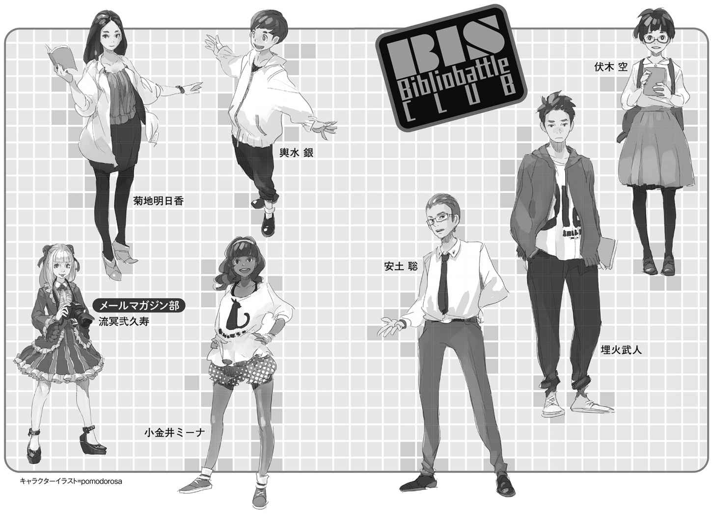

| ＢＩＳビブリオバトル部１ 翼を持つ少女 下 (創元ＳＦ文庫) | |
| 山本 弘 | |
| (2016) | |
この本は縦書きでレイアウトされています。
また、ご覧になる環境により、表示の差が認められることがあります。
本作品を電子書籍版に収録するにあたり、一部の漢字が簡略体で表記されている場合があります。
ＢＩＳビブリオバトル部 １
翼を持つ少女 下
山本 弘
空のデビュー戦から四日後。ビブリオバトル部の部室では緊急ミーティングが開かれていた。六月の終わりに対戦試合を予定している他校の生徒が、不正を画策しているのではないかという疑惑が浮上したのだ。部内に流れる不穏な空気を打ち破ったのは、対戦試合に自分を出させて欲しいという空の申し出だった。彼女は勝ち負けとは関係のない、一つの目標を胸に抱いていた。それは、ＳＦに理解のない武人に、ビブリオバトルでＳＦを読みたいと思わせ手を挙げさせること。「必ずあなたに勝ちますから！」――突然の宣戦布告に驚く武人だったが......。
東京創元社
ＢＩＳビブリオバトル部 １
翼を持つ少女 下
山本 弘
SHE THAT HATH WINGS
by
Hiroshi Yamamoto
2014
本書の登場人物
●ビブリオバトル部
伏 木 空
高等部一〇年。ＳＦの大好きな少女。
埋 火 武 人
高等部一〇年。ノンフィクションしか読まない。〈燃える氷 〉。
安 土 聡
高等部一二年。関西弁も得意なＢＢ部部長。〈双面の話者 〉。
輿 水 銀
中等部八年。かわいいものが好きな少年。〈天然 の 狙撃手 〉。
小 金 井 ミーナ
高等部一一年。ボーイズラブ好きの混血女子。〈愛 の 伝道師 〉。
菊 地 明 日 香
高等部一二年。サイエンス部との掛け持ち。〈科 学 の 魔 女 〉。
●その他の学生・教師
流 冥 弐 久 寿
中等部八年。金髪の白人少女。メールマガジン部部員。
睦 月 清 麗 奈
高等部一〇年。空や武人と同じクラス。
三 益 若 菜
現代国語の教師。ＢＢ部の顧問。
朝 日 奈 光
世界史の教師。堅 物 という評判。

ビブリオバトル公式ルール
【公式ルール】
１ 発表参加者が読んで面白いと思った本を持って集まる。
２ 順番に一人五分間で本を紹介する。
３ それぞれの発表の後に参加者全員でその発表に関するディスカッションを二～三分行う。
４ 全ての発表が終了した後に「どの本が一番読みたくなったか？」を基準とした投票を参加者全員一票で行い、最多票を集めたものを『チャンプ本』とする。
【ルールの補足】
１ 各発表参加者が自分で読んで面白いと思った本を持ってきて集まる。
ａ 他人が推薦したものでもかまわないが、必ず発表者自身が選ぶこと。
ｂ それぞれの開催でテーマを設定することは問題ない。
２ 順番に一人五分でカウントダウンタイマーをまわしながら本を紹介する。
ａ 五分が過ぎた時点でタイムアップとし発表を終了する。
ｂ 原則レジュメやプレゼン資料の配布等はせず、できるだけライブ感をもって発表する。
ｃ 発表者は必ず五分間を使い切る。
３ 紹介された本について二～三分のディスカッションを行う。
ａ 発表内容の揚 げ足をとったり、批判をするようなことはせず、発表内容でわからなかった点の追加説明や、「どの本を一番読みたくなったか？」の判断を後でするための材料をきく。
ｂ 全参加者がその場が楽しい場となるように配慮する。
ｃ 質問応答が途中の場合などに関しては、ディスカッションの時間を多少延長しても構わないが、当初の制限時間を大幅に超えないように運営すること。
４ 全発表参加者に紹介された本の中で「どの本を一番読みたくなったか？」を基準に参加者全員で投票を行い最多票を集めたものを『チャンプ本』として決定する。
ａ 紳士協定として、自分の紹介した本には投票せず、紹介者も他の発表者の本に投票する。
ｂ チャンプ本は参加者全員の投票で民主的に決定され、教員や司会者、審査員といった少数権力者により決定されてはならない。
参加者は発表参加者、聴講参加者よりなる。全参加者という場合にはこれらすべてを指す。
（ビブリオバトル普及委員会）
ＢＩＳビブリオバトル部 １ 翼を持つ少女 下
ＢＢ部の次の校内ビブリオバトルの日は、前回、つまり私が入部を決心した日から二週間後、六月第三週の木曜日です。
この日は春学期の期末テストの期間中です。テスト期間といっても、テストが数日間に集中しているわけではありません。授業が選択制である関係で、だいたい六月の二週目から四週目の頭にかけて、各教科のテストがばらばらに行なわれるんです。たとえば数学のテストなら、普段の数学の授業の時間を使って行なわれます。当然、同じ時間に他の教室では普通の授業もやっています。なるべく同じ日に複数のテストが重ならないよう、分散されているんです。ほとんどのクラブは部活もやっているそうです。
六月第三週の後半となると、大半の教科のテストが終わってしまっています。部長さんたちの話によると、さすがにテスト期間の真っ最中には聴講参加者は減りますが、期間の終わりに近づくと、気分転換に観戦する人も多いらしいです。
Ｂ Ｉ Ｓ は偏差値が高いだけあって、テストもかなり難しいです。前回の中間テストでは、「年度の最初なので小 手 調べのようなものだ」と気楽なことを言っていた先生がいましたが、なかなかどうして、手 強 かったです。必死になって勉強したおかげで、どうにか多くの科目で平均よりやや上か下の点を取れましたが、けっこう苦戦しました。それに並行して、レポート提出などの課題が頻繁に出ます。これから三年間、これが続くかと思うと、気が重くなったものです。まあ、自分で選んだ学校ですから、しかたないですけど。
少しでも勉強の手を抜いたら、成績ががた落ちになりそうで怖いです。「ＳＦにのめりこんだせいで成績が落ちた」なんて、かっこ悪いですし、無理して学費の高いこの学校に入れてくれた父に顔向けできません。だからＳＦ中毒の私も、さすがにテスト期間中は家でしっかり勉強しようと決意しました。前に埋 火 さんの家に行った時に借りた本――ロバート・シェクリイの『人間の手がまだ触れない』やヴァーナー・ヴィンジの『マイクロチップの魔術師』がすごく楽しそうで、早く読みたくてたまらないのですが、どうにか自制しています。禁断症状がつらいです。
睡眠時間が短くていい便利な体質なので、毎晩、午前二時頃までテスト勉強をします。父がリビングでテレビを観 ている間は自分の部屋で、父が寝室にひっこんだ後はリビングに場所を移します。リビングで勉強した方が効率がいいんです。私の部屋はＳＦ本が多いので、ついつい誘惑に負けて、ページをめくってしまいそうになりますから。
リビングには父と私が共同で使っているノートパソコンがあります。宿題のレポートを書く時など、ネットでデータを調べるのに重宝します。もちろんテスト勉強にも役立ちます。
勉強の合 間 を縫 って、ビブリオバトルの研究もしました。弐 久 寿 さんから教えてもらったYouTubeのタグ〈ＢＩＳビブリオバトル部〉で、ＢＢ部の過去の発表の動画を観たのです。一本の動画は質疑応答の時間も含めて七分から八分程度ですから、勉強の息抜きにぴったりです。
全員の発表がアップされているわけではなく、チャンプ本に選ばれたものだけのようです。それでも二〇本以上ありました。ＢＩＳビブリオバトル部が活動を開始したのは一年ぐらい前からですが、校内ビブリオバトルだけでなく、ちょくちょく他の学校に他流試合に行ったり、図書館とかでエキジビションをやったりしているようです。
ミーナさんの動画はありませんでした。この前、ちらっと聞いたところでは、入部したのは去年の暮れで、出場回数は少ないそうです。まだ優勝経験がないんでしょうか？
銀 くんの動画は三本。どれも癒 されます。とちったりあせったり、あたふたしてるところが、ハムスターか何かの生態を見るようで、それはもう超かわいいんです！ モニターに飛びこんで抱きしめたくなりますね。誰かそういう技術、開発してくれませんか。
特に、糸 井 重 里 監修・ほぼ日刊イトイ新聞編の『言いまつがい』という本の紹介が、最高に面白かったです。インターネットのサイトで募集した、いろんな言い間違い・読み間違い・聞き間違い・勘 違いを集めた本だそうです。「逆走の発展」「ビブラートに包んで」「ヨールデンごうが劇場」「もものけ姫」「コーン・ショネリー」「ざっくらばん」「もたれるチーズ」「オバＱ線」などなどの間違いの数々だけでもおかしいんですが、それが銀くんの幼い口調で次々に発せられるものですから、おかしさとかわいらしさが掛け合わさって、もう悶 絶 もの。真夜中なので大声で笑うわけにもいかず、口を押さえてテーブルに突っ伏し、必死に耐えていました。すみません、私も小さい頃、「主は来ませり」を、シュワッという擬音とともに誰かが来るんだと思ってました。
あと、ドリヤス工場『あやかし古書庫と少女の魅宝 』というマンガの紹介が、すごく気になりました。とある古書店に隠された「魅宝」と呼ばれる秘密をめぐって、少年少女と悪の秘密結社が異能を駆使してバトルを繰り広げる......という、設定だけ聞くとよくある話なんですが、変わっているのはその絵です。作者の方が水 木 しげるの大ファンらしく、全編、水木しげるそっくりのタッチで描 いてるんです。この現代に！
この前の『ウミウシ』や『野﨑まど劇場』もそうですが、銀くん、どこでこんな変な本を見つけてくるんですかね。かわいいだけの子じゃなく、若いけれどなかなかの読書家のようです。侮 れません。
他には、部長さんと明 日 香 さんがそれぞれ五本ずつ。埋火さんが三本。知らない人も何人かいます。他の学校の方か、卒業した部員の方でしょうか。さすがに全部観ている時間はありませんので、タイトルが気になる本を中心に、何本か選んで観ました。
部長さんは風変わりでなおかつ知的な本が好みのようです。たとえば武 田 雅 哉 『万里の長城は月から見えるの？』は、タイトル通り、「万里の長城は月から見える唯一の人工物である」という都市伝説を徹底的に追究した本だそうです。そんな伝説があるとは知りませんでした。この伝説の起源はアポロ計画以前、一八世紀にまでさかのぼるそうです。中国では国語の教科書にまで載 っていたので、事実ではないと分かった時に大騒ぎになったとか。面白そうです。テストが終わったら図書館で探してみましょう。
明日香さんが昨年、高校生書評合戦首都大会に出場した時の動画も観ました。マイク・ブラウン『冥王星を殺したのは私です』――これも刺激的なタイトルですね。
二〇〇六年に冥王星が惑星から降格されて〝準惑星〟になり、太陽系の惑星が八個になったことは知っていましたが、これはそのきっかけになった新天体ジーナ（のちに準惑星に分類され、「エリス」という正式名になりました）の発見者、天文学者のブラウンさん自身が書いた本。ジーナ発見から、国際天文学連合で冥王星降格の決定が下されるに至る過程が、ブラウンさんの日常の描写を交えて書かれているそうです。
ブラウンさんは冥王星を殺そうなんて夢にも思っていなくて、冥王星の外側にある新惑星を探していただけなんですね。長年の苦労の末、ついにジーナを見つけたことで、本当なら「新惑星の発見者」という栄誉を得られるはずだったんです。ところが、結果的に〝惑星〟の定義を見直す論争に発展してしまって、新しい定義に従うと、冥王星もジーナも惑星ではないことになってしまった......ということだそうです。かわいそうな人ですね。他にも、発見の栄誉を横取りしようと企 む悪い奴がいるとか、天文学の世界もいろいろと人間臭 いみたいです。
明日香さんの他の動画も、みんな科学関係の本です。生物学、物理学、統計学......ほんとに揺らぎがないですね、この人。科学が好きで好きでたまらないようです。
そして埋火さん。
この人の場合、取り上げる本はどれもノンフィクション、それも重いテーマのものばかり。「社会派」と呼ぶべきでしょうか。
たとえば『職業は武装解除』。著者の瀬谷ルミ子さんは、一九九四年、高校三年の時に、ルワンダで起きた虐 殺 事件の写真を目にして衝撃を受け、紛争解決のために役立つ仕事をしたいと考え、「武装解除人」になったのだそうです。中東やアフリカの紛争地域をめぐって、兵士を除隊させ、武器を回収して、普通の人として生きていく手助けをする仕事です。
アフリカでは、ゲリラに誘拐された子供たちが兵士として使われているという例が多いそうです。私よりももっと幼い子供が、機関銃を持たされ、大人に命じられるままに戦っているのです。私だってそんな国に生まれていたら、今頃は兵士としてジャングルで戦ってたんでしょうか？ いえ、男の兵士の性欲のはけ口にされてたかも。想像すると、胸が締めつけられる思いがします。
石 井 光 太 『絶対貧困』という本も重い内容です。著者の石井さんは、アジアやアフリカの貧 しい人々の暮らす地域を訪れ、彼らといっしょに寝泊りして、その暮らしをレポートしています。
スラム、物 乞 い、麻薬、臓器売買、売春......そうした概念は言葉としては知っていましたが、実際に住民に密着して取材した人の話は、私の想像をいろいろと上回っていました。たとえばフィリピンのマニラでは、鉄道の線路沿いにスラムができていて、みんな線路の上を生活空間にしているのだそうです。電車が近づくたびに「電車が来るぞー」と危険を報 せる人がいて、みんな避難するのですが、やはりはねられる人がよくいるとか。
インドにはレンタルチャイルド・ビジネスという犯罪があるのも、初めて知りました。犯罪組織が赤ん坊を誘拐してきて、物乞いの女性に一日一〇〇円とか二〇〇円とかいう料金で貸し出すのです。赤ん坊を抱いていれば、恵んでもらえるお金が少し増えるからだそうです。
何ともやりきれない話です。埋火さんはこんな本ばかり読んでるんでしょうか。そりゃあ、「ＳＦなんて」とバカにしたくなるのも当然ですね。重みという点では、フィクションは事実 にどうしても勝てませんから。
埋火さんが紹介している本の中で、私が最もショックを受けたのは、加 藤 直 樹 『九月、東京の路上で』でした。一九二三年九月、関東大震災の直後に起きた、朝鮮人虐殺事件の証言や記録を集めた本だそうです。震災の混乱の中で、「朝鮮人が暴動を起こした」「井戸に毒を投げこんでいる」というデマが流れ、一時は警察や軍もそれを信じてしまい、警戒を呼びかけました。その結果、ありもしない「暴動」に対抗して関東各地で自警団が組織され、人々が大勢の朝鮮人を虐殺したのです。そういう事件があったのは聞いたことがありますが、具体的にどんなものだったか初めて知りました。
埋火さんの口から、悲惨なエピソードがいくつも紹介されます。江 東 区の羅 漢 寺 付近では、いったん警察に保護された一六人の朝鮮人が、自警団に引き渡されて殺されました。埼玉県の寄 居 では、アメ売りの若者が警察の留置場に保護されていましたが、そこに暴徒がなだれこんできて、格子の隙 間 から日本刀や竹 槍 で突いて殺してしまいました。
もちろん、すべての日本人が虐殺に関わったわけではありません。千葉の丸 山 集落では、押し寄せてきた四〇人ほどの自警団に対し、村に住んでいる二人の朝鮮人を守るため、数人の村人が身を挺 して立ちはだかったという記録があるそうです。
正確な犠牲者数は分かっていません。警察が立件した殺人だけで五三件、被害死者数は二三三人。立件されなかった虐殺はその数倍あると推測されています。現在の江東区の東 大 島 文化センターがあるあたりでは、朝鮮人と間違われて、中国人労働者が三〇〇人以上も殺されています。
日本人も何人か勘違いで殺されています。当時、千 駄 ヶ 谷 に住んでいた演劇青年の伊 藤 圀 夫 さんは、やはり朝鮮人を殺しに行こうと出かけて、逆に自分が朝鮮人に間違えられて暴徒に取り巻かれ、殺されかけました。危ういところで助かった伊藤さんは、自分も加害者になっていたかもしれないと、自戒の意味をこめて、「千駄ヶ谷のコレヤン（Korean）」から「千 田 是 也 」という芸名にしたそうです。
でも、私にとって最大の衝撃は、高等小学校一年（今の中学一年）の女の子が書いた作文でした。
「夜は又朝鮮人のさはぎなので驚きました私たちは三尺余りの棒を持つて其 の先へくぎを付けて居ました。それから方 方 へ行つて見ますと鮮人の頭だけがころがつていました。わすれたがあのだいろくの原と云 ふ所は二百人に死んでいたと云ふことであつた」
尋常小学校四年の男の子も書いています。大人たちといっしょに朝鮮人を刺したら、「きゆうとしんでしまいました」と。
そう、私よりも幼い子供たちまで虐殺に加担していたんです。
子供たちの文章は文法の間違いが多いうえ、ディテールの説明がなく、何の感情もこもっていません。それをまた埋火さんが、感情を抑制した淡々とした声で読み上げます。その口調は静かなだけに、かえって恐ろしさがこみ上げてきます。大勢の人が殺されている悲惨な光景が、子供たちの作文の中で、まるで日常のありふれた一場面のように語られている......。
思わずティプトリーの「ラセンウジバエ解決法」を連想しました。あれはフィクションでしたが、これは現実に起きたことです。それもこの日本で。
でも、アフリカの子供兵の話もそうですが、ある種の状況下で子供が簡単に人を殺すのって、なんとなく納得できますね。普段、子供が人を殺さないのは、大人たちから禁じられているからです。逆に大人たちが許可すれば、子供も人を殺すんです。子供が純真だなんて噓です。子供って、人間って、どこまでも残酷になれるものなんです。
私はそれを身に沁 みて知っています。
発表の最後を、埋火さんはこう締めくくります。
「実は今、この関東大震災の時の朝鮮人虐殺に関して、歴史修正主義――この歴史を歪曲しようという動きが起きています。朝鮮人暴動は本当にあった、虐殺は自衛のための正当な行為だった......そんな珍説を信じる日本人が増えてきてるんです。この本にしても、ネットで感想を検索してみると、〝反日工作だ〟とか〝捏 造 だ〟とか決めつけている人が何人もいます。
この本の著者の加藤さんは、これを〝アポロ11 号は月に行かなかった〟というのと同じくらいばかげた主張だと切って捨てています。僕も同感です。本当に暴動が起きていたなら、当然、警察や政府の公式の記録に残っているはずですから。実際には、当時の警視庁の官房主事、特 高 警察のトップだった正 力 松 太 郎 が、暴動のデマを信じてしまったことを反省しています。『警視庁当局として誠に面目なき次第であります』と......でも」
ここで埋火さんは、ふっと悲しげな笑みを浮かべます。
「現代の日本でも、〝アポロは月に行っていない〟という話を信じている人は多いそうです。テレビで言っていることやネットに書かれていることを鵜 吞 みにしてしまう人たちです。だから、こういうばかげた珍説だって、信じてしまう人が多いのかもしれません。
しかし、都合の悪い歴史から目をそらすべきではありません。負の歴史を正しく見つめ、反省しないと、また人間は同じことを繰り返してしまうかもしれませんから」
埋火さんの発表を聞き終えて、私は深い感銘を覚えていました。
彼の発表する本には共通するモチーフがあります。争いの絶えない未開の先住民、貧困層、戦争や虐殺の犠牲者――社会の底辺で虐 げられている人たち、世の中の歪 みに苦しんでいる人たちを扱ったものばかりなのです。埋火さん自身は、あんな大きなお屋敷に住んで、何不自由ない暮らしをしているというのに。
〈燃える氷 〉――感情を抑えたあの人の喋 り方からは、弱者への優しい視点と、その裏返しとしての、社会の矛 盾 への怒りが感じられます。『ターザン』に文句をつけたのも、その根底にある一〇〇年前の人種差別思想が許せなかったからでしょう。
ああ。
もしかして、私もそんな風に見られてるんでしょうか。あんな仏 頂 面 だし、態度もつっけんどんだけど、本当は優しく見つめられている？ 確かに、嫌いだったら本なんか貸してくれないでしょう。ＢＢ部に誘ってくれたのだって、単なる部員獲得のためじゃなく、私が孤独なのを見かねてのことだったのかもしれません。
ノブレス・オブリージュ――そんな言葉が脳裏に浮かびました。「高貴な者の義務」という意味です。いろんな解釈がありますが、大 雑 把 に言うと、社会的に高い地位にある者、富んでいる者は、持たざる者のために奉仕する義務がある......ということらしいです。
お金持ちでありながら、社会的弱者へ優しい視線を向け、私のような者にも親切にしてくれる埋火さん。私はそこに、ノブレス・オブリージュの精神を感じました。
さて、ここまでで分かった部員の特徴を、ノートに簡単にまとめてみました。
・部長さん 関西弁 軽妙 知的 かっこつけるのが好き
・明日香さん 美人 かっこいい 科学への関心
・埋火さん 弱者への視点 ノンフィクション けっこう熱い？
・ミーナさん 腐 女 子 早口 テンション高い
・銀くん 天然 かわいい むっちゃかわいい♡
各人の特徴は把握しましたけど、はてさて、どのへんを参考にすべきか。
部長さんの関西弁の軽妙なトーク、ミーナさんのテンションの高いお喋りは、私にはとてもまねできるものではありません。あれはすでに芸として完成されていて、今から追いつくのは無理でしょう。銀くんの魅力も天然のものですから、意図してまねられるものじゃないですね。無理にまねしたら痛いです。明日香さんは......あー、素材からしてぜんぜん違いますね。参考になりません。
こうして見ると、紹介する本のジャンルは違いますが、埋火さんのような喋り方が最もオーソドックスで無難なように思えます。埋火さんみたいなスタイルで行くべきなんでしょうか......。
「あれ？」
ノートを見つめて思案しているうちに、ふと、おかしなことに気がつきました。
私、何で埋火さんだけ上の名前で呼んでるんだろ。
部長さんはともかく、明日香さん、ミーナさん、銀くんは、いつの間にかごく自然に下の名前で呼んでいました。流 冥 さんも、最初は「流冥さん」でしたが、今は「弐久寿さん」と呼んでいます。ですが、埋火さんだけ、図書館で声をかけられた時から、私の中ではずっと「埋火さん」なんですよね。
今まで疑問に思いませんでしたが、考えてみれば変です。同級生だから「武 人 くん」と呼んだっていいはずなのに。例外は埋火さんの家におじゃました時だけです。他の家族の方と混同しないように、一度だけ「武人さん」と言いましたが、違和感があったのを覚えています。
あのルックスのせいですかね。無愛想な顔でごつい体格、何となく怖そうに見えるから、気軽に下の名前で呼べない？ でも、そんなに怖い人じゃないことは、すでに分かってるんですが。
シミュレートしてみました。脳裏に埋火さんの仏頂面を思い浮かべます。その下に、ニュースで出る関係者の顔写真のように、〈埋火さん〉というテロップを表示させます。それを消して〈武人くん〉と書き直します。
口にしてみました。
「......武人くん」
とたんに、頭の中が、かあっと熱くなりました。慌 てて脳裏に浮かぶ顔に×印をつけ、テロップをごしごしこすって消します。
「ないないないない、これはない」
下の名前で、しかも「くん」付けで呼ぶ違和感ときたら、半 端 じゃありませんでした。だめですね、これは。彼はやっぱり「埋火さん」です。
でも、落ち着きを取り戻すのに、少し時間がかかりました。しばらくの間、私の頭の中では、表面からは見えないけれど燃えている炭のように、「武人くん」という言葉が静かに熱を放っていました。
六月の二週目からテストが次々に続き、なかなか気が休まりませんでした。
英語は文法や読解はともかく、リスニングにぜんぜん自信がありません。古典もかなり怪しいです。だいたい古典って、あんまり興味ないんですよね。英語は勉強しておけば、将来、英米ＳＦを原書で読めるようになるかもしれないし、もしかしたら翻訳家になれるかもしれないので、ぜひスキルを伸ばしておきたいのですが、古典は――『竹取物語』を読むのに役立つぐらいでしょうか？
勉強の合間を縫って、ビブリオバトルの必勝作戦も練 りました。次のビブリオバトルはテーマバトルです。何かのテーマを決めて、それに合う本を紹介するのです。今回のテーマは〈昔〉。かなり昔に書かれた本とか、昔の人の暮らしについての本とか、タイトルに「昔」と入っている本とか、とにかく〈昔〉に関する本なら何でもいいそうです。
「お前には不利じゃないのか？ 『未来』とか『宇宙』じゃなくて」
埋火さんはからかいました。ふふん、ご心配なく。過去の世界を舞台にしたタイムトラベルＳＦなんて山ほどありますし、第二次世界大戦前後に書かれた作品なら、十分に〈昔〉でしょう。
試験中なので本を新たに読んでいる暇はありません。ということは必然的に、これまで私が読んだ本から選ばなくてはならないということです。ふむ、その点もべつに困ることはありませんね。読んだ本なら何百冊もありますから。
そこから候補を絞りこみます。本の実物を示して説明しなくてはならない関係上、以前に図書館で借りて読んだ本は避けた方がいいかもしれません。テスト期間中に図書館に行って借り直すのは面倒ですし、他の人に貸し出されている可能性もあります。
あと、埋火さんのお祖 父 さんのコレクションなども、ビブリオバトルで紹介するのはためらわれます。ハヤカワＳＦシリーズ版の『フェッセンデンの宇宙』や、ハヤカワ文庫ＳＦの『航時軍団』『大魔王作戦』『悪 鬼 の種族』などのように、今では入手困難な本が多いからです。できれば参加者の方々に興味を持ってもらい、読んでほしいですしね。なるべくなら新刊書店で手に入る本か、Amazonで注文できる本がいいでしょう。
となると、私が持っている本で、なおかつ、ここ一〇年以内ぐらいに出版された本に限定されることになります。それでもネタには困りません。私の勉強部屋の本棚には、小中学時代に買い集めた二〇〇冊以上のＳＦ、おもに文庫本が並んでいます。ほとんどは古書店のワゴンセールなどで安く買った本で、カバーすらないものも多いのですが、新刊書店で買ったものもけっこうあります。
その中から候補を選びました。最初だから失敗するわけにはいきません。とびきりお気に入りの本――熱く魅力を語れる本にすべきでしょう。
前回の観戦の経験を分析して、知名度の高い本は不利だろうと考えました。いくら面白くても、参加者がすでに読んでいる本は手を挙 げてもらえないからです。星新一さんや筒井康隆さん、海外作家ではフィリップ・Ｋ・ディックなどは、ＳＦファン以外にも有名なので、避けた方が無難でしょう。レイ・ブラッドベリやアーサー・Ｃ・クラークは？ 一般の知名度がどれぐらいか読めないのですが、今回は安全策で行きたいので、避けることにします。
そうそう、場所が校内で、観戦者の中には中等部の生徒もいることも考慮しなくてはいけません。エッチなシーンのある話はもちろん自 粛 すべきでしょうし、グレッグ・イーガンなどのハードＳＦも、難解でとっつきにくいかもしれません。
いえ、私はエッチなネタはぜんぜん平気ですし、イーガンも中学で読んだんですけどね（『ディアスポラ』とかは死にそうになりましたよ、ええ）。でも、今回は遠慮しておきましょう。だいたい、イーガンは〈昔〉というテーマと結びつかない気がします。
シオドア・スタージョンあたりも大好きなんですが、その魅力をうまく紹介できる自信がありません。ブラッドベリもそうですが、プロットよりも雰囲気や語り口で読ませるタイプの作家だからです。短編集『不思議のひと触れ』に入っている「孤独の円盤」や「雷 と薔 薇 」なんて、感動的な素晴らしい作品だと思うんですが、あらすじを話しただけじゃ、どこがどう素晴らしいのか理解してもらえない気がします。『海を失った男』に入っている「シジジイじゃない」なんて、どう説明すればいいのか見当もつきません。「理想の恋人にめぐり合えて幸せいっぱいの男の前に、宙に浮く生首が現われて、『シジジイだよ』って言うんです」......いや、だめですね、これは。絶対、理解してもらえません。
できればそんなに難しくなくて、単純にストーリーや設定を聞くだけで面白く思える作家がいいですね。しかも、現代の作家じゃなく、昔の作家。
となると、やはりエドモンド・ハミルトンでしょうか。
私の本棚にあるハミルトンの本は、創元ＳＦ文庫の『反対進化』と『眠れる者の島』、それに河出文庫の『フェッセンデンの宇宙』の三冊です。『反対進化』と『フェッセンデンの宇宙』、どっちにしようかとさんざん迷いましたが、最終的に、えいっとコインを投げて、前者に決めました。
『反対進化』は短編集で、ハミルトンの作品が一九三〇年代のものから六〇年代のものまで一〇作品、発表年代順に並んでいます。「アンタレスの星のもとに」「呪われた銀河」「ウリオスの復 讐 」「反対進化」「失われた火星の秘宝」「審判の日」「超ウラン元素」「異境の大地」「審判のあとで」「プロ」......収録作は何度も読み返しましたから、試験中に読み直す必要はありません。ストーリーはすらすら説明できます。問題は五分間でどれだけ喋れるかです。一〇編の作品をすべて紹介する余裕はなさそうです。さて、どれを削るか。
冒頭の「アンタレスの星のもとに」はハミルトンの初期作品で、ひどい駄作です。こんなのばかり書いてたら評価が下がるのもしかたないなあ、と読みながら苦笑してしまいました。でも、駄作なりに楽しいですし、これを取り上げないとハミルトンを紹介したことになりません。
「失われた火星の秘宝」も典型的なスペースオペラで、「アンタレスの星のもとに」がありますから、省略してもいいかなと思います。「超ウラン元素」も他の作品と比べると落ちる気がします。「審判の日」と「審判のあとで」は、どちらも人類滅亡後の物語で、内容がかぶります。「審判の日」の方が好きなので、「審判のあとで」は落としましょう。
問題はそれ以外の作品がどれも面白くて、好きすぎるということです。表題作の「反対進化」や、最後の「プロ」は、もちろんはずせません。「呪われた銀河」「異境の大地」などの奇想ＳＦ、「審判の日」のような感動的な作品も、ハミルトンの持ち味です。
そして何と言っても「ウリオスの復讐」！ すごいＢ級ですし、埋火さんみたいな真面目な人にはバカにされるかもしれませんが、私、この作品が大好きなんです。
ビブリオバトルの前日、真夜中に一人でこっそりリハーサルをしてみました。大きな声を出すと父に聞かれてしまうかもしれないので、時計を見ながら、発表の内容をささやきます。
「ハミルトンの魅力のひとつは、奇想天外でスケールの大きい発想です。たとえば『呪われた銀河』は一九三五年に発表された作品で、当時の天文学の最新の話題をいち早く取り入れています。天文学者のエドウィン・ハッブルが、銀河のスペクトルを分析していて、私たちの銀河以外のほとんどの銀河の光が赤方偏 移 を示している――つまり、私たちの銀河からどんどん遠ざかっていることを発見したんです。もちろんこれは宇宙が膨張していることを意味していたわけだったんですが、ハミルトンはそれとは別の、大胆な仮説を提唱しています......」
夜中に女の子がこんなことをぶつぶつつぶやいてるのって、はたから見てたらアブない光景かもしれませんね。父にも見られたくありません。
懸念していた通り、はみ出しました。最後の「プロ」にたどりつくずっと前に、五分をオーバーしてしまったんです。五分って意外に短いんですね。
悩みました。七編では多すぎるようです。かなりカットしなくてはいけません。
まず、「異境の大地」と「呪われた銀河」のどちらかをカットすることにしました。考えた末に「呪われた銀河」を落としました。いかにもハミルトンらしい、とてつもなくスケールの大きなホラ話なんですが、発想が「反対進化」とかぶっている気がします。それに中等部の生徒には、赤方偏移とか膨張宇宙論とかの話は難しいかもしれません。
次に「審判の日」と「ウリオスの復讐」のどちらかを落とすことにします。どっちも好きなんで、削りたくはないんですけど。比較してみると、やはり「ウリオスの復讐」はＢ級すぎて受けないんじゃないかという気がしてきます。泣く泣く落とすことにしました。
これで「アンタレスの星のもとに」「反対進化」「審判の日」「異境の大地」「プロ」の五編。
もう一度、時計を見ながらリハーサルをしてみました。かなりはしょって説明したつもりですが、それでも六分。まだ長すぎます。どうしてもあと一編、削らないといけません。泣きたい気分です。もう半分、削ってるんですよ？ これ以上、どうしろっていうんですか。自分の手足を切り落としているような気がしますよ。
悩みに悩んだ末に、「審判の日」を落とすことにしました。すごくお気に入りの泣ける話で、喋りたくて喋りたくてたまらないんですが、しかたありません。泣ける話なら「プロ」がありますし、「プロ」は絶対にはずせませんから。
もう午前二時半を回っています。遅くまで起きていると、明日のテストに差し支えます。おまけに眠くなって頭も回らなくなってきました。
最後にもう一度だけリハーサルをやってみて、どうにかぎりぎり五分で収まることを確認しました。かなり駆け足になりましたけど。
「もう、これでいいや」
声に出してそう言うと、私はトイレに行ってから自室に戻り、ベッドにもぐりこみました。
明かりを消し、睡魔の忍び寄ってくる頭で、ぼんやりと考えていました。初めてのビブリオバトル、どうしても不安はあります。
万 全 の態勢で臨 む――とは言えません。組み立てた発表内容には、まだおおいに不満がありますし、何か見落としがあるんじゃないかと心配になります。けど、しかたありません。やれるだけのことをやったつもりです。あとは本番を迎えるのみ。
部長さんが言っていました。ビブリオバトルには運もある。経験のない人が初出場で勝つこともよくあるんだそうです。もしかしたら、運が味方してくれて、私も勝てるかもしれません。私が好きなハミルトンが、みんなの注目を集めるかも。
そうなったらいいな、と思います。
そしてビブリオバトルの当日。
その日は午前中に、一番の難関だった物理のテストがありました。かなり悩みましたけど、どうにか乗り切れたと思います。あとは来週の現国と数学を残すのみです。どちらも得意分野なので、しゃかりきに勉強しなくてもいい点が取れる自信があります。
というわけで、今日の午後はビブリオバトルに専念できます。おまけに木曜日は、フレックスタイムの後にアンスケを入れていますから、食事時間をまるごとビブリオバトルのリハーサルに使えます。
いつものように手製のおにぎりを持ってきていました。今日はおかかとチーズを混ぜてフライパンで焼き色をつけた焼きおにぎりです。安くて簡単にできるのでお気に入りです。水筒代わりのペットボトルには、家から持ってきたお茶。
梅 雨 時 なので空は雲に覆われていますが、まだ雨は降っていません。カフェテリアの外にある中庭のベンチが空 いていたので、そこで食事をすることにしました。
私は右手に焼きおにぎりを持ち、左手で『反対進化』の目次ページを開いていました。おにぎりを食べながら、発表の手順をもう一度おさらいします。
昨夜は「アンタレスの星のもとに」「反対進化」「異境の大地」「プロ」の四編でいいと思いましたが、今になってまた迷いが出てきました。昨日のリハーサルでは、最後の「プロ」の紹介が駆け足になっていた感じがするんです。「審判の日」じゃなく、「異境の大地」を削った方が良かったかも？ ストーリーの紹介にかかる時間が、「審判の日」の方がわずかに短くて済みそうですから。
焼きおにぎりを頰 張 りながら、声を出さずに二度、頭の中でリハーサルをしてみました。うまくいきそうです。でも、発表間 際 になって、急に構成を変えるのはどうなんでしょうか。何か見落としがありそうで怖いです。念のためにもう一度ぐらい、リハーサルをやっておいた方がいいかも......。
「伏 木 さん」
横から急に声をかけられました。びっくりして本から顔を上げると、同じクラスの睦 月 清 麗 奈 さんが、右手に缶コーヒー、左手に菓子パンを持って立っていました。「ここ座っていい？」と言うと、私が返事するのも待たず、隣に腰を下ろしました。
緊張しました。睦月さんとはべつに親しいわけじゃありません。いえ、クラスの女子の誰とも親しくありません。それなのに、いきなり自分のＡＴフィールドに入ってこられると、本能的に警戒してしまいます。
「今日、デビュー戦なんだって？ ビブリオバトル」
「あ、はい」
「あたしも今日は観に行くつもり。楽しみにしてるよ」
「そうですか」
睦月さんの表情はにこやかで、敵意はまったく感じられません。でも、私は警戒を解きません。次の瞬間にも何か攻撃が来るんじゃないかと、内心、びくびくしています――被害妄想だとは思いますけど。
「あっ、それ、今日のビブリオバトルで使う本？」
「はい」
本にカバーをかけておいて正解でした。カバーがなかったら、「『反対進化』？ どういう意味？」とか問われて、説明しなくてはならなくなっていたかもしれません。いつもならいくらでも喋るんですけど、今はリハーサルがしたいので、説明している余裕がありません。
「やっぱりＳＦ？」
「ええ、まあ......」
「面白いの？」
「はい、すごく」
「へえ、楽しみだね――どう？ ビブリオバトル部、楽しい？」
「はい」
「そうかあ。それは良かったねえ」
私の反応が素 っ気 ないことに、この人は気がついてないんでしょうか。「あまり近寄らないで」「さっさと話を切り上げて」という無言のサインを発してるつもりなんですが、私のテレパシーが届いてないのかもしれません。
「タケちんとは仲良くやってる？」
「タケちん？」
「家に何回か行ってるんでしょ？」
「ああ、埋火さんですか。はい。本を貸してもらったり、夕飯をご馳走になったり、親切にしていただいてます」
「それだけ？」
「それだけって？」
「親切にしてもらってる......ってだけ？」
「他に何があるんでしょうか？」
わざととぼけたふりをします。私だってそこまで鈍感じゃありません。睦月さんの探るような口調から、質問の意図ぐらいは察しています。私と埋火さんの仲を邪推してるんです。そんなくだらない話題に乗る必要はありません。
睦月さんはなおも遠回しにいろいろ訊 ねてきましたが、私はわざとアンドロイドのような無感動な口調で、「何をおっしゃっているのか理解できません」というふりを押し通しました。かなりのボンクラだと思われたかもしれませんね。
まったく、早くどっか行ってほしいんですけど。リハーサルができなくて、内心、いらいらしています。
「つまり、タケちんにはぜんぜん気がないってことか」
睦月さんはようやく納得してくれたようです。
「睦月さんこそ、埋火さんと親しいんじゃないんですか？」
ふと思いついて、そう訊ねてみます。ちょくちょく二人で話しているところを見かけますし、いつぞやも、次の教室に向かう埋火さんを睦月さんが追いかけて、並んで歩く後ろ姿を目撃しています。もしかして埋火さんに気があって、私に嫉 妬 してるのかも、と思ったのです。
「親しいっちゃ親しいけどなー」睦月さんは曖 昧 に微笑 みます。「色恋はないなあ。タケちんは馴 染 みっていうか腐れ縁って感じで、そんな対象じゃないよ。それに、あたしには彼氏いるし」
「そうなんですか」
「あなたこそ、彼氏いないの？」
「いません」
「ほう......」
睦月さんは私に顔を近づけ、皮膚の毛穴まで観察できそうな距離から、しげしげと見つめてきました。私はくすぐったいような気味の悪いような感覚を覚えました。何ですか、この人？ ＡＴフィールドの侵犯もはなはだしいですよ。
「あなたって、ぜんぜんメイクしてないよねえ？」
そう言う睦月さんは、ナチュラルメイクというやつで、距離があるとすっぴんのように錯覚しますけど、この距離からだと、眉を描いたりチークを塗ったりリップにグロスを入れたりしてるのがはっきり分かります。
「中学ではお化粧は禁止でしたし」
「ここでは自由だよ」
「でも、する必要を感じません」
「服ももうちょいどうにかすれば......」
「おしゃれって興味がないんです」
噓です。興味がないわけじゃありません。ただ、おしゃれってすごくお金がかかるんです。服やアクセサリーもそうですが、化粧水とか口紅とかファウンデーションとか、けっこうするんですから。だから、やむなく切り捨ててるんです。
そんな贅 沢 をしてる余裕、私にはありません。おしゃれにかけるお金があるなら、ＳＦ買いますよ。ファウンデーションなんて、アシモフがあれば十分です。
「もったいないなあ。素材はいいのに。ちょっとメイクするだけで引き立つよ」
「いいですよ、そんなの」
「男子にモテたいとか思わないの？」
「思いませんね」
睦月さんはくだらない話で、私の貴重な時間をどんどん奪っていきます。ああ、もう、本当に早くどっかに行ってください！
「いやー」彼女はにやにや笑います。「さすがにそれは信じ難 いなあ」
「何がですか？」
「一五の女子が男子に興味がないってありえないわあ。レズだってんなら別だけど」
「............」
「ねえ、初恋ぐらいしたことあるでしょ？ 聞かせてよ、ねえ」
さすがに私も限界を超えました。これ以上、こんな無礼に耐える必要はありません。この人を追い払うために、最後の手段を――決して言うまいと思っていたことを口にする決意をしました。
「......ありますよ、初恋。中学一年の時に」
「ほう！」睦月さんは眼 を輝かせ、さらにすり寄ってきました。「誰？ どんな子？」
「同じクラスの男子で、バスケ部員でした。すごくかっこいい人でした」
「ほうほう！」
「二学期の終わり頃に、勇気を出してラヴレター書いて、彼に渡しました......」
「おおーっ、やったじゃん！」
はしゃぐ睦月さん。その無邪気な反応を見ながら、私は胸の奥にサディスティックな喜びを覚えました――これから彼女の心理をどん底に突き落としてやる喜び。
「......それをクラス全員の前で読み上げられました」
睦月さんの笑顔が凍りつきます。
「一行ずつ、一語ずつ、笑いながら......みんなも大笑いしてました。逃げ出したくても、教室の出入り口は彼の仲間にふさがれてました。脱出できるとしたら窓しかありませんでした。私、真剣に考えました。いっそ窓から飛び降りようかって」
「............」
「せめて三階だったらそうしてたかもしれませんね」私は苦笑しました。「でも、二階でしたから。飛び降りてもせいぜい骨折するぐらいで、死ねない可能性が大でした......」
眼の端から、じわっと涙があふれるのを感じました。
ああ、だめだ、まだ癒 えてないや。まだ笑い話にするのは無理でした。もう二年半も前なのに。思い出すことも少なくなって、傷はかなり回復したかと思ってたのに。
「これで満足ですか？」
そう言って、指でメガネを押し上げ、涙を拭 いました。本をしまい、おにぎりを包んでいたラップをくしゃくしゃに丸めると、ベンチから立ち上がります。
「待って」睦月さんが背後から、済まなさそうに呼び止めます。「あの......ごめん。ひとつだけ教えて」
「何ですか？」
「バスケ部ってことは、その男子、背が高かった？」
「はい」
私は丸めたラップを叩きつけるように屑 籠 に投げこむと、その場を後にしました。
三時間後、ビブリオバトルの会場である図書室。
「よう」先に来ていた埋火さんが、軽く声をかけてきました。「どうだ？ 調子は」
最悪です、とは言えません。私は平静を装 い、「まあまあです」と曖昧に返事して、視線をそらしました。睦月さんとの会話からもうだいぶ経 つというのに、今もまだ心が乱れていて、埋火さんの顔をまともに見ることができません。
ええ、そうです。埋火さんが図書館で声をかけてきた時、私は一瞬ですが、恐怖に襲われたんです。クラスではよくすれ違ってましたけど、あんなに近くに立たれて、話しかけられたのは初めてだったから。
その背の高さが、彼――鷲羽 雄 平 を連想させたから。
背の高さで並ぶと、鷲羽雄平はクラスで一番でした。私は最後から二番目。だから彼はすごく大きくて、かっこよく見えました。そんな彼に、私は恋をしてしまったんです。
そして彼は、私の最悪の敵になりました。
ラヴレターを公開されたのは発端にすぎませんでした。二学期の残り、そして三学期の間じゅう、彼はいじめグループのリーダーになって、私をいたぶりました。暴力こそ振るいませんでしたが、私の顔を見るたびに、ひどい嘲 りの言葉を投げかけました。何十回も、何百回も、数え切れないぐらい。
眠れないほど苦しくて悔 しい夜が続きました。何よりも苦しかったのは、そんなに目に遭 ってもなお、私がなかなか鷲羽雄平への恋心を捨てられなかったことです。人間の心というのは、車みたいに簡単にハンドルを切れないものなんです。彼の醜 い本性を知ってしまった後も、それまでの慣性で動き続けていたんです。
アニメやマンガでは、主人公の愛する者が敵になるという悲劇的な展開がしばしばあります。でも、現実に体験してみると、それはちっともロマンチックなものじゃありません。まさに悪夢でした。私の愛した人が私を苦しめている。言葉で痛めつけて、からかって、いたぶって、楽しんでいる......。
不登校になりかけました。でも、三学期はあともう少しで終わるからと、懸命に耐えました。父を心配させたくなかったから。
二年になって別のクラスになったので、鷲羽雄平からの直接の攻撃はやみました。その頃には、私もようやく彼への恋心を捨てることができたので、少し楽になりました。彼のことは「雄平くん」ではなく、「鷲羽雄平」と突き放して考えられるようになりました。
でも、同じ一年三組で、彼といっしょになって私を嘲っていた人たちが何人か、二年でも同じクラスになりました。彼ら、彼女らのいじめは、断続的に続きました。新しいクラスメートの何人かも、それに同調しました。
私には味方は一人もいませんでした。
一年間、我慢しました。中学三年の一学期、高校受験のことを考えなくてはならなくなった頃、ついに耐えかねて父に打ち明けました。そして、公立高校に行きたくないと訴えたのです。公立ならどこだろうと、鷲羽雄平や彼の同類がいっしょに入学する。病原菌が新たな培地で増殖するように、彼らは新しい学校でも私への悪意をばらまき、多くの人を感染させるでしょう。
父は私の意思を汲 んでくれました。二人で相談して、このＢＩＳの編入試験を受けることにしたのです。偏差値が高いのがポイントでした。言っちゃなんですが、鷲羽雄平やその取り巻きたちは、あんまり頭が良くありません。ＢＩＳまで私を追ってくることはないと判断したんです。
もちろん、学費は公立に比べればかなり高かったです。我が家は授業料の減免を受けられるほど困窮してはいませんが、かと言ってあまり裕福でもありません。それでも父は無理してくれました。私も父を助けるため、お小 遣 いを切り詰め、入学後はバイトもすることにしました。
その判断は正解でした。この学校には、中学時代の私を知っている人は一人もいません。私の周囲から、いじめが噓のように消え去りました。最初は新しい環境に緊張していた私も、しだいに安らぎを覚えるようになりました。このユニークな校風の学校が好きになっていきました。
埋火さんも、図書館で声をかけられた時こそ警戒しましたが、じきに悪い人じゃないと分かり、打ち解けました。背が高いというだけで、鷲羽雄平とはぜんぜん違うタイプ――彼は埋火さんみたいに熱心に本を読みませんでしたから。
でも。
理性では納得していても、心の奥のどこかで、私はまだ埋火さんに鷲羽雄平のイメージを重ね合わせて、警戒してるんじゃないかと思います。今は味方みたいに見えるけど、一〇〇パーセント信用できない。いつ攻撃に転じるか分からない――きっとその不安が、「埋火さん」という呼び方に表われてるんでしょう。
ああ、こんなこと、思い出したくなかった。
大事な人生初のビブリオバトルを前にして、心が千 々 に乱れています。集中できません。私は睦月さんを恨 みました。これで発表を失敗したら、あなたのせいにしますよ！
時間です。部長さんの前 説 がはじまりました。
「えー、美心国際学園ＢＢ部主催、恒例の木曜放課後ビブリオバトルにご参加いただき、ありがとうございます......」
前回と同様、ビブリオバトルの趣旨やルールを説明する部長さん。それを上の空で聞きながら、私は考えていました。発表までまだ少し時間がある。それまでに落ち着こう。冷静になろう。
今回は銀くんが抜けるので、発表者は私を含めて五名。順番は前と同じように、カードを引いてランダムに決めます。確率的には、一番になる可能性は五分の一。発表の順番が後の方だったら、他の人の発表を聴 きながらでも、頭の中でリハーサルができるかも。
ラストは無理でも、せめて三番目か四番目ぐらいであってほしい――そう願いながらカードを引きました。
スペードのエースでした。
目にした瞬間、頭の中が真っ白になりました。最悪です。初心者なのに、初舞台なのに、よりにもよってトップバッターですか。リハーサルどころか、落ち着く時間もないんですか。運命の神様、どこまで私に試練を与えるんですか。こんな意地悪して楽しいですか。
動揺しているうちに準備ができ、発表者席に座ることになりました。今日の聴講参加者は前回よりやや少なそうでしたが、それでも三〇人近くいるようです。その人たちと向かい合いました。真正面には弐久寿さんがいて、こっちに向けてすでにビデオカメラをセットしていました。笑って小さく手を振っています。
何十人もの視線とカメラのレンズが集中しています。この新人はどんな本を紹介してくれるんだろうかと興味を抱いているのが、ひしひしと感じられます。部長さんやミーナさんや銀くんのような楽しいトークを期待されてるんでしょうか？ それとも埋火さんのようなシリアスな話？ あるいは明日香さんのような科学の話題？ ごめんなさい、どれでもないんです。私、ずぶの素 人 です。あの人たちみたいには喋れないんです。どうしよう。この人たちの期待を裏切ってしまいそうです。
私は「あがる」という心理状態をまさに体験していることに気づきました。考えてみれば、こんなに大勢の人の注目を集めるなんて、生まれて初めてです。いえ、違う。前にもありました。教室で鷲羽雄平がラヴレターを読み上げた時――ああ、だめだめ！ あんなこと思い出しちゃだめ！
シロクマ実験というものがあります。被験者に「シロクマのことを考えないようにしてください」と指示すると、逆にシロクマのことを考えずにはいられなくなるというのです。今、私に起きているのがまさにそれでした。必死になって鷲羽雄平のことを考えないようにしているせいで、かえって考えてしまうんです。さらにはシロクマ実験を思い出したせいで、関係ないシロクマのことまで考えるようになってしまいました。
私の頭の中では、鷲羽雄平とシロクマがごっちゃになって、洗濯機の中の洗濯物のようにぐるぐる回っています。完全にパニックです。リハーサルの内容なんか吹っ飛んじゃってますよ。どうすればいいんですか、これ!?
しかし、部長さんは非情です。私の心理に気がついているのかいないのか、「一番手はエースを引いた新人の伏木空くんです」と紹介します。
「では......ビブリオバトル、ＧＯ！」
そう言って、ｉＰａｄの画面をタップしました。タイマーが動き出します。
喋らなくてはいけません。
「あ......あの、一〇年の伏木空です。初めてです。よろしくお願いします」
なんだ、喋れるじゃないですか。ほら、喋って喋って。何を？――そう、エドモンド・ハミルトンのことを。
「あの......今日、私が紹介するのは、エドモンド・ハミルトンの短編集『反対進化』です」
そう言いながら、文庫本の表紙をみんなに向けます。
「最初に収められているのは――」
そう言いかけて気がつきました。このドジ！ ハミルトンについての説明、抜かしてる！
「あ、いえ......そもそもハミルトンというのは、昔のＳＦ作家です。一九〇四年生まれで、第二次大戦前から戦後にかけて活躍しました。いわゆるスペースオペラ、宇宙活劇が得意な人で......」
そうそう。ちょっとミスりましたけど、軌道修正できましたよ。お題の〈昔〉もクリヤーしましたし。
「有名なのは『キャプテン・フューチャー』シリーズで、日本ではアニメにもなってます。この本はそのハミルトンの作品が、発表された年代順に並んでいます」
はい、そこで「アンタレスの星のもとに」の説明に入る！
「最初に収められているのは『アンタレスの星のもとに』。一九三三年に書かれた作品で、初期のハミルトンの典型的なスペースオペラです。はっきり言っちゃいますけど――かなりの駄作です」
あ、反応が鈍 い。いきなり「駄作です」と言ったら意外性があって、受けるかと思ったんですが。
「主人公の冒険好きの青年が、さそり座のアンタレスにある惑星に行く話なんです。宇宙船とかじゃなく、科学者の発明した物質転送装置で瞬間的に移動するんです。そこに惑星があることは分かってるんですが、どんな星なのか行ってみないと分からない。海の中に落ちるかもしれないし、空気がないかもしれない。〝一か八 かだよ〟と科学者は言うんですけど、いや、一か八かじゃないでしょ。それ死ぬでしょって」
図書室のあちこちで、くすくすという笑いが起こります。反応があった！ 私は勇気づけられました。
「普通は最初に、無人のカメラか何か送りこんで、安全かどうか確認しますよね。いきなり人間を送っちゃうんですよ。しかも主人公が到着した場所が、偶然にもピラミッドのてっぺんなんです。その国ではちょうど、前の王様が死んだばかりで、ピラミッドのてっぺんに立った人が次の王様になる決まりになってたもんで、主人公はいきなり王様になっちゃうんです。そんなものすごい偶然、ありえません！」
さっきよりやや大きい笑い声。よし、爆笑とまではいかなかったけど、少しは参加者の心をつかめたみたいです。
「でも、最初の作品で投げ出さないでください。他にもこの本には、優れた作品がいっぱい入ってるんですから。
まず、本のタイトルにもなってる『反対進化』。ハミルトンには奇想天外な発想の作品が多いんですが、これはそのひとつです。カナダの森の中で、科学者が宇宙から来た生物に出会うんです。アメーバみたいな不定形の生物――アークター人というんですが、彼らはとても高度な知的生命体で、一〇億年前に地球に植民したはずの仲間を探しに来てたんです......」
そうそう、いい感じです。だいぶ調子が出てきました。私は「反対進化」のストーリー解説を続けながら、だんだん落ち着いてきました。何も考えなくても、口が勝手に動いてくれるという感じです。
「『審判の日』は一九四六年、第二次世界大戦終了の翌年に書かれています。当時すでに、広島と長崎に落とされた原子爆弾の威力は世界に知れ渡っていて、核戦争を描いたＳＦ作品もいろいろ書かれていたんですが、ハミルトンはそのさらに先、核戦争で人類が滅亡した後の、遠い未来の地球を描いています。そこでは放射能による突然変異で、動物たちが知的生物に進化してる。犬や猫や熊といった動物たちが知恵を持ってる世界なんです。そこへ宇宙に逃げていた人間たちが、ロケットで戻ってきます......」
さっきまであがっていたのが噓みたいに、私はすっかりリラックスしていました。もう持ち時間は半分以上過ぎてるはずですが、これなら乗り切れそうです。私は何も考えず、口が勝手に動くのにまかせていました。
それが失敗でした。
「『異境の大地』もすごい話です。ＳＦにはよく加速剤――人間の時間の感覚を加速させる薬というのが出てきます。加速した人間からは周囲のものがゆっくりに見えるんですね。ところが、この『異境の大地』に出てくるのはそれと逆、人間の感覚や動作を一〇〇分の一に遅らせる薬です。
舞台は東南アジアの奥地のジャングルです。この薬を注射されて、動きがゆっくりになった主人公たちには、ジャングルの植物の動きが速くなって、動物のようにうごめいているように見えるんです。さらに、樹 々 の発するテレパシーまで聞こえてきます。実は樹というのは、人間よりもすごくゆっくり生きている知的生物だったんです......」
あれ？
何かおかしい。私、何で「異境の大地」のことを話してるんだろ。さっき、「異境の大地」を削って、「審判の日」を入れることにしたはずなのに......。
しまった！
ｉＰａｄのタイマーを見ると、もう残り時間はわずかです。顔から血の気 が引くのを覚えました。間違って「審判の日」と「異境の大地」を両方喋ったせいで、「プロ」について喋る時間が足りなくなってる！
私は慌てて「異境の大地」の説明を早めに切り上げました。少しでも、少しでも「プロ」に触れておかないと！
「あと、最後の『プロ』という作品、これだけは絶対に読んでください。本当に感動的なんです。一九六四年、ハミルトンが六〇歳の時の作品です。ハミルトン自身がモデルのようなスペースオペラ作家が――」
そこでタイマーが鳴りました。なおも喋ろうとする私を、部長さんが「はい、ありがとうございました」と、穏やかに遮 ります。
私は愕 然 となっていました。喋れなかった！ いちばん大事な「プロ」のことを喋れなかった！
「これで伏木くんの発表は終了です」と部長さん。「質疑応答の時間を設けます。何かご質問のある方は？」
そうです。質疑応答がありました。まだ終わったわけじゃありません。希望があります！
一一年か一二年らしい男子生徒が手を挙げました。
「よく分からない点があったんですが」
「はい」
私は身構えました。この人が「最後の『プロ』ってどういう話なんですか？」と質問してくれたら......。
「現在では系外惑星がいくつも発見されてますけど、その一九三〇年代の小説の中では、どうやってアンタレスに惑星があることが判明したんでしょう？」
そこですか!? ツッコむところはそこですか!?
私は口に出してそう言いたいのをこらえ、なるべく穏やかな口調で説明しました。
「あの......確か作中では、望遠鏡で発見したことになってました」
「でも、アンタレスって確か五〇〇光年ぐらい離れてましたよね？ 光学望遠鏡で惑星を見つけるのはかなり難しいんじゃ......？」
「あ、はい。難しいと思います」私は正直に認めました。「一九三〇年代の作品ですから、現代の目で見ると、科学的にかなり間違ってるところもあります。そういういいかげんな部分も含めて、駄作なんです」
あっ、そうだ。せめて誰かが「なぜそんな駄作が収録されてるんですか？」って訊ねてくれればいいんです。そうすれば「プロ」について喋れるじゃないですか。
次に手を挙げたのは、中等部らしい男の子でした。私は期待をかけました。お願い、「なぜそんな駄作が収録されてるんですか？」って質問して......。
「あのー、僕、ロボクラに入ってるんですけど」
ろぼくら――一瞬、どういう漢字を当てていいのか、考えてしまいました。ロボット・クラブの略ですね。この学校にはロボット部というのがあることを思い出しました。新入生のオリエンテーションの日に、三〇センチぐらいのロボットに「ヘビーローテーション」を踊らせるパフォーマンスをやってましたっけ。見てる分には面白かったんですが、お金がかかりそうなので、入部はまったく考えませんでしたけど。
「二足歩行ロボットを作ってるんですけど、難しいんですよね。バランス取るのが。歩かせようとすると、ちょっとしたことですぐ転んじゃうんです」
それは大変そうですね。でも、それが『反対進化』と何の関係が？ 今の発表の中に、ロボットは出てきませんでしたけど。
「先生に聞いたんですけど、人間って、歩いてる間は常にバランスが崩れてるんだそうです。片足を持ち上げてる途中は、重心が足の接地面積からはみ出してて、そのままだと倒れちゃう。倒れる前に次の一歩を踏み出してる。また倒れそうになる前に次の一歩を......それを素早く繰り返してるから転ばないんだそうです。だからロボットも、倒れるよりも速く歩かせなくちゃいけないんだって」
だから質問は何ですか!?
「それで気になったのが、さっきの、人間を遅くする薬の話なんですよね。人間の動作のスピードが一〇〇分の一になったら、歩けないんじゃないでしょうか？ 足を上げたとたんに転んじゃうから。そのへんは作中でどう説明されていますか？」
脱力しました。あなた、ＳＦにそんなツッコミを入れるのは無 粋 ってもんですよ。ドラゴンが出てくるファンタジーに、「その翼面積でどうやって空飛んでるんですか？」とか訊かないでしょ？
もちろん、そんなことは言いませんでしたけど。
「あのー......ハミルトンっていう人は、あんまり科学的に厳密に考えない人なんで、たぶんそういうところは考えてないんじゃないかなと......」
ああ、なんで私、ハミルトンをｄｉｓってんですか!? 好きな作家なのに！ 推薦したいのに！ これじゃまるで欠点だらけみたいに思われるじゃないですか！
ええ、分かってますとも。ハミルトンの小説は科学的にかなりいいかげんですよ。「フェッセンデンの宇宙」にしたって、考えてみたら、何で高速でぐるぐる自転してるはずのミクロの惑星の表面を顕 微 鏡 で観察できるのかとか、タイムスケールがおかしいんじゃないかとか、いろいろツッコミどころはありますよ。「ウリオスの復讐」も、道具さえあれば脳移植ができちゃうって、ものすごく安直ですよ。「審判の日」も、放射能による突然変異で動物がみんな頭が良くなるなんてありえませんよ。私だってそれぐらい、気がついてます。でも、そうした欠点を上回る面白さがあるから好きなんじゃないですか！
だけど、そうした弁明をする機会は与えられませんでした。
質疑応答の時間が終了。私は深い敗北感とともに発表者席を立ち、部員が並んで座っている席に戻りました。
隣に座っていたミーナさんが、小声で「気にしないで」と声をかけてくれます。私は元気が出るどころか、かえってがっかりしました。やっぱり私の失敗は、他の人の目にもはっきり分かるものだったようです。
「気にしないで」？ ごめんなさい、ミーナさん。その言葉は今の私にとって、逆にきついです。ストレートに「ひどかったね」と言ってくれた方が、まだましです。
他の発表者の発表は、私と違ってどれも面白いものでした。
二番手は部長さんです。例によって関西弁の軽妙な早口で喋ります。
「年輩の方たちはよく言いますよね。〝最近の日本人のモラルは低下してる〟って。電車ではお年寄りに席を譲 らない。それどころか車内で化粧している女性までいる。凶悪な犯罪も多発してる。昔はそんなことはなかった。戦前の日本では道徳教育がしっかり行なわれていて、日本人はみんなマナーを守って正しく生きていた......。
でも、ほんまにそうなんですかね？ 昔の日本人って、そんなに清く正しかったんでしょうか？ それを検証してる本があります――大 倉 幸 宏 『「昔はよかった」と言うけれど』」
部長さんは本の内容を紹介します。戦前戦中の日本の新聞や雑誌などの記事を基 に、当時の日本人のモラルの乱れについて検証した本だそうです。
たとえば列車の乗り降りや車内でのモラル。当時はまだ〝降りる人を先に〟というルールがなく、我先に乗ろうとする人が多かったので、乗り降りの際には大変な混乱が起きていたそうです。席の奪い合いもひどくて、窓から荷物を投げこんで席を確保しようとする人がいたり、時には殴り合いの喧嘩にもなったりしたとか。他にも、荷物を隣に置いて一人で二人分の席を占拠する人、車内で食事をしてゴミを床に捨てていく人、車内で化粧をする人――なんだ、戦前からいたんじゃないですか。
他にも、図書館の本を破る人が多かったとか、運送業者が荷物を抜き取る事件が多発していたとか、食品の偽装とか、悪徳医師とか、教師による性犯罪とか、児童虐 待 とか......みんな戦前の日本にもあったことで、それも現代よりもずっとひどい状況だったと分かります。最近の日本人のモラルは低下してるんじゃなく、明らかに戦前よりはるかに向上してるんですね。これは誇っていいと思います。
続いてはミーナさん。今回、紹介するのはマンガです。
「うちは親子二代のオタクの家系なんですよね。父は小学生の頃にファースト『ガンダム』にハマってた世代でして、四〇過ぎた今でもアニメを熱心に観てますし、休日にはよくガンプラも作ってます。録画しておいた『ビルドファイターズ』をいっしょに観ながら、〝あのモビルスーツは何々で〟って、いちいち解説してくれるんですよ。最終回なんか、〝ここでパーフェクトガンダムかーっ！〟って喜びの絶叫をあげたりしてました――私は正直、レイ×セイ以外はあまり興味なかったんですけど」
羨 ましい家です。うちの父は雑誌の漢字ナンクロを解くのが趣味で、ＳＦにもアニメにもぜんぜん興味がない人ですから、私とはまったく話が合いません。
「父の影響で私もすっかりオタクに染まったんですが、ある時、気になって訊ねたことがあるんですよ。〝パパの世代のオタクってどんなだったの？〟〝そもそもコスプレとか即売会とかあったの？〟って。そしたら、〝これを読めば分かる〟と推薦してくれたのがこのマンガです――『同人少女ＪＢ』」
まだオタクという言葉も一般的ではなかった一九八〇年代前半の世相を背景に、アニメやマンガが大好きな少女の青春を描いた作品だそうです。作者の一 本 木 蛮 さん自身の高校時代の体験が反映されているとか。当時、すでにコミケとかの同人イベントがあって、一本木さんも『うる星やつら』のラムちゃんのコスプレをしてたんだそうです。三〇年以上前ですよ！ その頃からコスプレってあったんですね。
他にも、雑誌にイラストを投稿したり、書店に通 ったり、受験勉強で苦しんだりと、当時のオタク少女の日常が、緻密な時代考証でリアルに描かれているそうです。ああ、ミーナさんの紹介を聞いていると、主人公に共感を覚えてきました。読みたくなってきますよ、このマンガ。
埋火さんはというと、例によってシリアスなノンフィクション本の紹介です。
「みなさんはブラジルの〝勝ち組〟というものを聞いたことがおありでしょうか？ ブラジルには多くの日本人が移民していたんですが、太平洋戦争が終わった直後、日本人移民の中に、日本が負けたことを信じない人たちが大勢いた。それどころか、戦後十数年経ってもまだ〝日本は勝った〟と信じ続けていた......という話です。最近では、マンガ家の小 林 よしのりさんが『開戦前夜 ゴーマニズム宣言ＲＩＳＩＮＧ』という本の中で取り上げていたので、お読みになった方は多いかもしれません」
あれ？ 埋火さん、マンガなんかぜんぜん読まない人かと思ったら、そういうマンガは読むんですね？
「僕はこの話、ブラジルという国の特殊な事情のせいかと思っていました。日本から見ると地球の裏側で、敗戦の情報が伝わらなかったからなんじゃないかと。ところが違ってたんですね。実はブラジルだけじゃなく、ハワイの日本人社会にも、日本の敗戦を信じない〝勝った組〟と呼ばれる人たちがいたことを知りました」
埋火さんが紹介するのは、移民研究会編『戦争と日本人移民』。タイトル通り、戦争が世界各地の日本人移民に与えた影響を解説した本ですが、その中にハワイの〝勝った組〟の話が出てくるそうです。戦争が終わった時、「ハワイを占領するために日本の艦隊が真珠湾に入港した」とか、「アメリカの無差別爆撃による被害に対して天皇陛下に謝罪するために、トルーマン大統領が日本へ向かうのを見た人がいる」などというデマが流れ、多くの人がそれを信じたのだとか。
一時、ハワイの日本人の間で〝勝った組〟は大きな社会運動になり、講演会に二〇〇〇人もの聴衆が詰めかけたこともあるそうです。アメリカ本土では、日本人は強制収容所に入れられていたため、「日本が勝った」などというデマを信じることは不可能だったのですが、ハワイでは日本人は比較的自由に暮らせたため、逆に負けたことを実感できなかったらしいんです。
それにしても不思議です。もちろんハワイでも戦争のニュースはいっぱい流れていたし、移民の中には英語の分かる日本人も大勢いたはずなんですが――「アポロは月に行っていない」という話もそうですが、人間っていろんなおかしなことを信じちゃうものなんですね。
トリは明日香さん。例によって科学関係の本です。
「みなさんは自分のルーツが気になりませんか？ この肉体、この遺伝子がどこから来たのか。どんな歴史をたどってきたのか。時間をさかのぼると、いったいどこに行き着くのか......」
読めました。きっと人類学の本ですね。人類はいつどこで生まれたのかを解説してくれるんでしょう......。
「私は気になります。この肉体、この地球、この宇宙を構成しているすべての元素。さらにその元素を構成する素粒子。それらすべてが誕生した瞬間――すなわち、一三七億年前のビッグバンのことが」
スケールでか！
明日香さんが紹介するのは、『宇宙が始まる前には何があったのか？』という、これまた刺激的なタイトルの本です。著者のローレンス・クラウスさんはアリゾナ州立大学の宇宙物理学者で、「真空のエネルギーは非常に小さいがゼロではない」ということを初めて唱 えた人だそうです。そのクラウスさんが、宇宙や時間がどのように誕生したのか、現代の宇宙論や天文学が解き明かした成果を、分かりやすく解説してくれているのだそうです。
今でこそ宇宙の年齢は一三七億年とされていますが、ハッブルが初めて宇宙の膨張を発見した当時、まだ観測精度が低かったため、観測された膨張速度から逆算すると、ビッグバンは今から一五億年前――地球の年齢より宇宙の年齢の方が若いという不合理な計算結果が出ていたそうです。私はハミルトンの「呪われた銀河」を思い出し、はっとしました。あの小説の中では、銀河は二〇億年前にはひとつに合体していたと書かれていました。ビッグバンにしては時代が合わないな、と疑問に思っていたんですが、なるほど、ハミルトンは当時の科学的データを元にして書いてたんですね。
クラウスさんは過去だけではなく、この宇宙の未来――それも二兆年も先の未来についても予想しています。宇宙は膨張を続けていて、銀河と銀河の間隔がどんどん広がっていっているので、いずれ他の銀河はみんな見えなくなってしまう。後退する他の銀河を観測できないため、二兆年後の天文学者（当然、人類ではないでしょう）は、宇宙が膨張していることに気づかないだろう......というのです。科学者の方の想像力ってすごいですね。ＳＦ作家も顔負けですよ。
ちなみにタイトルの疑問に対するクラウスさんの答えは、〈「無からは何も生じない」というルールには、科学的な基礎がない〉というものだそうです。「無からは何も生じない」という思いこみは間違いで、科学的に考えると、何もないところから誰の手助けもなしに宇宙が生まれてきたという説明が、最も合理的なのだと――よく分からないけど、エキサイティングです。
みなさんの発表を聞いているうち、私はますます暗い気分になりました。私と違いすぎる――本の選択も絶妙だけど、紹介のしかたが上 手 いんです。どの本もそれぞれに興味をそそられ、読んでみたいと思わせます。
それに比べて、私の発表はどうでしょう。思い返してみて、あまりのレベルの低さに自己嫌悪に陥 ります。最後の痛 恨 のミスもあって、『反対進化』の本当の魅力をまったく伝えられませんでした。作者のハミルトンのせいじゃありません。私のせいです。ビブリオバトルというものを舐 めてたんです......。
すべての発表が終わり、投票の時間が来ました。
「ではまず、伏木くんの『反対進化』が読みたいと思った方、手を挙げてください」
部長さんが呼びかけます。その声は、私には死刑宣告のように聞こえました。
横に並んでいる部員の中で、手を挙げたのはミーナさんだけでした。おそらく、科学とか歴史とかの本は苦手そうな人だし、自分の発表した本には投票できないルールなので、消去法で『反対進化』を選んだんでしょう。他に会場で手を挙げた人は二人だけ――合計三票。
終わりました。
投票が進んでいきます。埋火さんと明日香さんは『「昔はよかった」と言うけれど』に、私は『同人少女ＪＢ』に、部長さんは『戦争と日本人移民』に手を挙げていました。
聴講参加者の反応も観察します。『「昔は良かった」と言うけれど』もかなり票を集めていましたが、『同人少女ＪＢ』に手を挙げている人の方が、若干多いように見えました。当然かもしれません。今回、フィクション作品は二冊。他の三冊はやや堅い印象がありますから、本に娯楽を求めている人は、『反対進化』か『同人少女ＪＢ』のどちらかを選ぶでしょう。そして、私の発表とミーナさんの発表を比べてみれば、結果は歴然としています。
「結果が出ました。今回のチャンプ本は――『同人少女ＪＢ』！」
部長さんが宣言すると、拍手が起こりました。ミーナさんはマイクを持って、受賞の弁を述べます。
「ありがとうございます！ 今回は、健全な内容のマンガで勝てました！」
なぜか「健全な内容」を強調するミーナさん。会場からは大きな笑いが起きました。え？ 何で？
「......失敗しました」
聴講参加者が解散した後、部員たちだけが集まっての反省会。私は正直に敗北の原因を語りました。いったんは削ったはずの「異境の大地」を間違って喋ってしまったことで、最後の「プロ」を紹介する時間が足りなくなったこと。「プロ」がこの短編集の中でいちばん感動的なのだということを。
「一九六四年に書かれた話なんです。主人公は長年、スペースオペラを書いてきたＳＦ作家なんですけど、彼の息子が宇宙飛行士になって、人類として初めて月に向かって出発するんです。そのロケットの打ち上げをテレビで見ながら、主人公は悟るんです。彼らこそ本物のプロなんだ。宇宙への夢を語ってきた自分たちＳＦ作家は、みんなアマチュアだったんだって......」
「一九六四年といえば、アメリカがアポロ計画をスタートさせて、有人月着陸を目指しはじめた頃よね」と明日香さん。「つまりＳＦが現実に追いつかれた？」
「そういうことです。主人公の作家は明らかにハミルトン自身がモデルなんです。それに気づいて、この本全体を見直すと、作品が発表年代順に収録されていることの意味が分かってくるんです。最初は『アンタレスの星のもとに』みたいな、現実逃避のスペースオペラ。それが第二次世界大戦が近づくにつれ、『呪われた銀河』や『反対進化』みたいな、人類への絶望を表現した虚無的な傾向の作品を書くようになっていきます。四〇年代のスペースオペラ・ブームの頃は、また『キャプテン・フューチャー』や『失われた火星の秘宝』のようなスペースオペラを書きますけど、広島・長崎の翌年には、核戦争による人類滅亡後の世界を描いた『審判の日』を書いて......最後に、現実の宇宙開発と重ね合わせて、自分の経歴を回顧した『プロ』に行き着くんです。
つまり、この本全体が、ハミルトンのＳＦ作家としての歩み――彼が現実世界とどう向き合ってきたかを表わしているんです。埋火さんみたいな人に言わせれば、ＳＦは現実逃避なんでしょう。でも、違うんです。確かに『キャプテン・フューチャー』みたいな娯楽作品だけ見たらそう思えるかもしれませんけど、本当はハミルトンも現実世界の影響を強く受けていて、それをＳＦの形で表現していたんだと思うんです」
「なるほど」部長さんは感心しています。「確かにそう言われると分かる気がするんだが......だったらなおさら、『プロ』を中心にして語るべきだったよな？」
「はい......」
「銀はどう思った？ 伏木の発表」
部長さんは銀くんに話を振りました。銀くんは今回、発表はしませんでしたが、他の聴講参加者に混じって発表を聞いていました。
「はい......あの、どうもピンとこなくて」
「どのへんが？」
「あのう......」
銀くんは言いにくそうにしていました。私を傷つけないよう、言葉を選んでいるようです。
「ストーリーの解説ばかりなんですよね。だからどんなストーリーかは分かるんです。でも、かんじんのところ――伏木さんがどうしてその本が好きなのかが、よく分からなくて......」
ああ。
銀くんの指摘に、目からウロコが落ちました。そうです。私、本の内容をどう紹介するかで頭がいっぱいでした。ストーリーさえ紹介したら、聞いた人が勝手に興味を持ってくれると勘違いしてました。
そんなわけないんです。特にＳＦのような特殊なジャンルの場合、誰にでも理解してもらえるわけじゃありません。自分がなぜその本に興味を持ったのか、どうしてその作家が好きなのかを語らないと、共感してもらえるわけないんです。
〈天然の狙撃手〉である銀くんでさえ、それを理解しています。なぜウミウシなんていうマイナーな生物に興味を持ったのかを最初に説明し、ウミウシのどういうところが好きなのか、『ウミウシ』という本の魅力を熱く語っていました。ミーナさんもそうです。前回の『小説 仮面ライダークウガ』にせよ、今回の『同人少女ＪＢ』にせよ、なぜ興味を持ったのか、そのきっかけをちゃんと説明していました。
他人に理解されにくい題材だからこそ、客観的に内容を説明するだけじゃなく、主観を――なぜ自分はその本やその題材が好きなのかということを、熱く語らなくちゃいけなかったんです。自分の思い入れをぶちまけ、それを糸口にして、聞き手の興味を惹 くべきだったんです。それなのに私は......。
「うーん、まあ、そのへんの問題点も、もちろん気になったが......」部長さんは首を傾げています。「僕が気になったのは、別のところなんだよなあ」
「何ですか？」
まだ自覚していない欠点があったのかと、私はびくびくしていました。
「『反対進化』の紹介だけどさ......」
「はい」
「あれ、オチまで割ってたよな？」
「は？」
「大昔に地球にやってきた異星人がどうなったかって真相......あれ、あの話のオチじゃないの？」
そうです。私は「反対進化」のストーリーを結末まで語っていました。でも――
「でも、あれは必然性があったんです。結末まで語らないと、あの話のすごさが分かりませんから」
「話の面白さを伝えるためには、オチまで割るのもしかたがない？」
「はい。ミステリだったら結末を言うのはタブーですけど、これはミステリじゃありませんから」
「なるほど。まあ、そういう考え方もあるんだろうな......」
それっきり、部長さんは沈黙しました。
話題が途切れ、図書室に気まずい静寂が流れます。私はこれ以上、弁明したいと思いませんでしたし、みんなもこれ以上、私のミスを追及したくないんでしょう。
逃げ出したい気分です。ＢＢ部の楽しい雰囲気を、私が台無しにしている......。
「ああ、そうそう」雰囲気を変えようとしたのか、部長さんは急に明るい口調になりました。「ぜんぜん話題は変わるけどさ。お前、『まどマギ』観てた？」
「はい、もちろん」
『魔法少女まどか☆マギカ』は私も大好きなアニメで、毎週観てました。魔法少女ものとはいえ、発想や展開はとてもＳＦ的でした。ちなみに二〇一二年の星雲賞のメディア部門を受賞してますし、日本ＳＦ大賞の候補にもなってるんですよ。
「劇場版は？」
「『［新編］叛逆の物語』ですか？ はい、観ました」
「あのクライマックス、すごかったろ？」
「はい、すごかったです！」私は力説しました。「あのまま大団円できれいに終わるのかなと思ってたら、まさかああいう展開になるなんて」
「あれ、ショックでしたねえ」銀くんも話に入ってきます。「あんな話になるなんて、ぜんぜん予想してなかったから」
「いやー、あのドンデン返しは誰にも予想できないよ」とミーナさん。「明らかにストーリーの定 石 、ぶち壊してるもん」
「でも、いかにも、ほむららしい展開なのよね」弐久寿さんも話に入ってきました。「そう来られたら納得するしかないっていうか」
「テレビ版のあの最終回から、あんな話が創 れるとはねえ」明日香さんも感心しています。「まるで悪夢を見てるみたいだった――悪い意味じゃなく」
「ああ、その感覚、分かります」と私。「でも、きれいに終わってたら、感動はしてたかもしれないけど、あれほどの強烈な印象はなかったかも」
「あたしなんか、映画館の席で凍りついてたよ。戦 慄 してて」とミーナさん。「日本のアニメの歴史に新しい一ページが刻まれる瞬間を目撃した――そんな感じ」
ＢＢ部の全員、『まどマギ』を観てたみたいで、話が盛り上がります――いや、埋火さんだけそっぽを向いて、話に加わっていませんね。観てなかったんですか。
「そうかあ......」部長さんはにやにや笑っています。「あのドンデン返し、そんなに衝撃だったか」
「はい」
「ええなあ......」
「え？」
部長さんはやや俯 いて、悲しげに苦笑します。
「僕はあれ、観に行く前にネタバレされてしもてなあ......」
「「「「「ええーっ!? 」」」」」
私、明日香さん、ミーナさん、弐久寿さん、銀くんの驚きの声が、見事に唱和しました。
「だ、誰に!? 」
「知らん。電車で隣に座った、大学生ぐらいの二人組や」部長さんは関西弁で悔しそうに告白します。「公開から一週間目ぐらいやったかな。評判ええから、今度の日曜にでも観に行こか......と考えてたところやった。一人がもう一人に、べらべらストーリーを喋りよるんや。〝そこで、ほむらがまどかの手をぎゅっと握って〟とか、そらもう詳細に。満員電車の中で逃げ場がないしな。聞きたないのに耳に入ってきて......」
部長さんは大きなため息をつきます。
「おかげで、映画館に行っても、先の展開が分かってしもて......みんなみたいに素直に驚くことができんかった」
「ひどい！」
「それは許せない」
「ネタバレ・テロですね」
「テロというより、通り魔でしょ」
「そういう奴は死ね！」
私たちは部長さんに同情し、見知らぬネタバレ犯に対する怒りを口々にぶちまけました。
「そうか、やっぱり許せへんか」
部長さんは私に顔を向けました。
「はい」
「お前がやったのもそれと同じや」
「............！」
私は言葉を失いました。部長さん、それを理解させるために、わざわざ回り道を......。
「もちろん、ネタバレがすべてダメってわけじゃない」部長さんは標準語に戻って、さらに追い討 ちをかけてきます。「『ロミオとジュリエット』とか『フランダースの犬』なら、みんな結末を知ってるし、今さらネタバレしたって支障はない。文芸評論とかでも、その作品を論じるのに、どうしても結末まで語らなきゃいけない場合がある。そういう必然性があれば、ネタバレも許されるだろう。あと、絶版で入手困難な本とかは、読者は読みたくても読めないから、誰かがストーリーを解説してくれるのはありがたい......。
でも、ビブリオバトルはそうじゃないだろ？ その本を読んでほしいから推薦するんだろ？ だったら、これから読む読者の楽しみを奪うのはまずいんじゃないか？ 読者だって素直に驚きたいはずだろ？」
「はい......」
私は何も反論できませんでした。
外に出ると、雨が降りだしていました。
バス停で傘を差し、帰りのバスを待つ間、私はずっと考えていました。銀くんの言葉、そして部長さんの言葉を。
ネタバレは良くない――そんなのは常識以前のことでした。私だって、クラークの「星」や、ヤングの「たんぽぽ娘」や、ブラウンの「ミミズ天使」や、レナルズの「時は金 」や、イーガンの「繭 」の結末を先に知っていたら、ラストの衝撃や感動を味わえず、楽しみを阻害されていたことでしょう。ブラッドベリの「万華鏡」の結末は事前に知っていましたけど、あれだって、知らずに読んでいたら、もっと大きな感銘を受けていたかもしれません。
それなのに――ネタバレをやったら他の人の読む楽しみを阻害するということに、まったく頭が回っていなかった。自分がいかに喋るか、そればかりを考えていて、聞き手のことを考えていなかった。
部長さんは関西弁のトークで聞き手を惹きつけます。明日香さんは前回、大リーグボールを話の枕にして、不確定性原理の話に誘導しました。埋火さんの場合、本の紹介の中に自分の熱い怒りを織りこむことで、聞き手の共感を呼ぼうとしています。銀くんやミーナさんもそう。みんなそれぞれ、聞き手に受け入れられる方法を考えています。
私にはそれがありませんでした。自分の好きなＳＦのストーリーを思いきり語れる。それだけで有 頂 天 になっていた。聞き手の気持ちになっていなかった......。
バスが到着し、私は傘を畳んで乗りこみました。二人用の席の窓側に座ります。
通路側に大きな人が腰を下ろしました。「よっ」と声をかけられます。埋火さんでした。
「さっき、清麗奈と会ってな。お前と顔を合わせるのが気まずいから、代わりに謝っといてくれって言われた」
「そうですか......」
私は埋火さんの方には顔を向けず、窓の外に付いた雨粒を眺めていました。
「あいつ、気にしてたぞ。自分のせいでお前の心が乱されて、発表を失敗したんじゃないかって」
「違います。睦月さんのせいじゃありません」
素直にそう言えました。発表の前には、失敗したら睦月さんのせいにしようと思ってましたが、今はそんな考えが間違いだって分かっています。責任転 嫁 しちゃいけないんです。失敗したのは誰でもない、私自身のせいなんですから。
「まだ気に病 んでるのか？ 失敗したこと」
「当たり前です」
悔しさがこみ上げてきて、思わず閉じた傘の柄 をぎゅっと握り締めました。
「......正直、勝てるかもしれないって思ってたんです。部長さんが〝初心者が勝つこともある〟って言ってましたから。勝てたらいいなって思ってました。でも、あんな結果になって......」
また涙が出そうになりましたが、どうにかこらえました。
「......ハミルトンが悪いんじゃありません。私の発表がまずかったんです。そのせいで、低い評価しか得られなかった。勝てなかったことより、私の好きな作家を、私の手で貶 めてしまったことの方が悔しいです......」
隣の席で、ふっと鼻で笑う声がしました。
「おかしいですか？」
「ああ、おかしいね。そんなに勝敗にこだわるのが」
私は振り向いて埋火さんをにらみつけました。
「埋火さんは悔しくないんですか？ 自分の本が勝てなかったら」
「ああ、それなりに悔しいさ。でも、お前の悔しがり方とは違う」
「どう違うんです？」
「お前は根本的に誤解してる。そもそもビブリオバトルの本質は勝敗にあるんじゃない」
「え？」
「選ばれるのはあくまで〝チャンプ本〟であって、〝チャンピオン〟じゃない。そこが重要だ。チャンプの栄誉は発表者じゃなく、本に与えられる。つまり、発表者のアピールの良し悪 しを競ってるわけじゃないんだ」
「でも、いいアピールをした本がチャンプに選ばれるわけでしょ？」
「それはそうだが、チャンプ本を選ぶこと自体がビブリオバトルの目的ってわけでもない」
私は分からなくなってきました。
「だったら、ビブリオバトルの目的って何ですか？」
「本を紹介することそのものだ。発表参加者は自分のお気に入りの本をアピールするために、聴講参加者は未知の本の存在を知るために、集まってくる」
「ならバトルである必要ないでしょ？」
「本を紹介するのに、それが適した手法だからだ――これが単に、本の内容を発表して、それを聞くだけの会だったらどうだ？ みんな、あんなに集まるか？」
想像してみました。確かにそんな退屈そうな会、参加したいと思う人は少ないでしょう。
「〝バトル〟と名がつくから、普段は本に興味のない者も、期待して集まってくる。最後に投票しなくちゃいけないから、聴講参加者は身を入れて発表を聞く。発表参加者は自分の推薦する本をいかにアピールすればいいかと工夫する。だからどっちも真剣になる。最終的にチャンプ本が決まるが、それは結果にすぎない。本に関する情報を交換する。面白い本を互いに薦 め合い、発見し合う――それがビブリオバトルの目的だ。
自分の本がチャンプ本に選ばれなかったら、確かに悔しい。でもな、何人かが〝読みたい〟と思ってくれれば、目的は達成されるんだ。お前の本だってそうだろ？ 今日、三人が手を挙げたじゃないか。たった三人でも、お前の好きな本を読みたいと思った人間がいる。それはすごいことじゃないのか？」
私は埋火さんの言葉を嚙 みしめました。確かに、私はこれまで、自分が面白いと思ったＳＦのことを、いろんな人にいっぱい話してきました。でも、誰も興味を示してくれませんでした。父でさえ。
それが今日は、ハミルトンの本を読んでみたいという人が、三人も現われた。
そう考えると、救われたような気がします。失敗はしたけど、私の発表は無駄ではなかったんです。
「そうかもしれません――ありがとうございます」
「礼はいい。初心者にビブリオバトルの基礎知識をレクチャーしただけだ」
埋火さんは仏頂面を崩しませんが、どこか恥ずかしそうにも見えました。この人、感情をあまり表に出さないのは、恥ずかしがり屋さんだからかもしれませんね。
「ああ、そうそう。俺からも謝っとかなくちゃいけないことがある」
「何ですか？」
「清麗奈の奴、お喋りだからな。こっちが訊いてないのに、勝手にべらべら喋りやがったんだ――お前が中学で何があったかとか」
「............」
今度は私が恥ずかしさを覚える番でした。そうですか、あれ、埋火さんに知られちゃいましたか。知られたくなかったのに――今度こそ、睦月さんを恨んでいいですかね？
「部長はプライベートな問題には首を突っこむなって言ってたし、俺もそんなつもりはぜんぜんなかったんだけど、知っちまったもんはしかたがない。知ったことを隠しておくのも、何だかぎくしゃくしそうだし、噓をつくのも性 に合わないんでな。いちおう告白しておく。すまん」
「謝ることじゃないでしょ」
そう、埋火さんが謝ることなんか何もありません。悪いのは鷲羽雄平や、その仲間たちなんですから。
「理解できる――とは言わない。お前がどんな心境だったかなんて理解できない。俺は生まれてから一度も、いじめられた経験なんてないから」
そりゃあ、埋火さんの体格を見れば、いじめようとする子供なんていないでしょ。
「お前を助けることもできない。ＳＦみたいにタイムマシンで過去に戻って、昔のお前を守ることなんかできないんだから。どう言って慰 めていいのかも分からない。何を言っても言葉が上滑りしそうだし。いや、そもそも、こんなことを話題にしていいのかどうかも」
「......まあ、されて嬉しい話じゃないのは確かです」
そう、話題にされるだけで、胸が針でつつかれてるように、ちくちくと痛みます。
「だが、同情はしたいと思ってる」
「............」
「お前が〝同情なんて迷惑です〟って言うんならやめるけどな。でも、そうでないなら、せめて心の中で同情だけはさせてくれ。そして、俺が同情してるってことだけは意識しておいてくれ。俺には何もできないけど、できるのはそれぐらいだから」
「......ありがとうございます」
ああ。
胸を刺していた針の痛みが、暖かいものに変わるのを感じました。この人、「理解できない」とか言いつつ、私の心の中を察してくれてるんですね。鷲羽雄平とは大違いです。
この人と同じクラスで、同じ部に入って良かったのかもしれません。
「......ノブレス・オブリージュ」
「ん？」
「埋火さんって、貴族みたいな考え方をするんだなって思ってたんです。貧しい人とか虐げられてる人のことばかり、いつも考えてるから。ノブレス・オブリージュ――私みたいな人間にも良くしてくれてるでしょ？ それは貴族の持たざる者への義務みたいなものなのかなって」
「はあ？ 貴族？ 俺が？」
「だって、お金持ちで、あんな大きなお屋敷に住んでいて、何不自由ないじゃないですか。まるで貴族ですよ。将来も安 泰 なんでしょ？」
あっ、いけない。ちょっと嫌味っぽくなったかも。
すると埋火さんは笑いだしました。最初はくすくすと、続いて本格的に。びっくりしました。この人の微笑と苦笑以外の笑いを見るのって初めてです。
「そうかあ」埋火さんは笑いながら言います。「お前は事情を知らないからなあ。俺が何の不自由もないように見えるのか......」
「違う......んですか？」
「ああ、大違いだ――ま、ＢＢ部のみんなは知ってることだから、秘密にしておく意味はないな。教えておいてやる」
埋火さんはそこでちょっと言葉を切りました。笑うのをやめ、言うべきことを整理しているようです。それとも――大事な告白をするのに心の準備をしている？
「俺に歳の離れた兄貴がいたって話、聞いただろ？」
「はい」
「読書の楽しさを教えてくれたのは兄貴なんだ。兄貴もいっぱいノンフィクションを読んでてな。特に、未開の土地の住民とか、外国の名もない一般庶民の生活とかを紹介してる本が多かった。面白い本はどんどん俺に薦めてくれた。島 津 法 樹 の『アジアン・ヒーローズ』、レドモンド・オハンロンの『コンゴ・ジャーニー』、内 澤 旬 子 の『世界屠畜紀行』、高 野 潤 の『カランバ！』......」
「え？ それみんな、大人向けの本じゃないんですか？」
「ああ」
「いつ頃、読んでたんですか？」
「小五から中一ぐらいの間だな」
「すごいですね」
まあ、私も小学校時代から大人向けのＳＦをすでに読んでましたけどね。どこのクラスにも、そういう早熟な子供は一人はいるんでしょう。
「どれも面白かったなあ。兄貴は本を見る目があった」
夢見るように語る埋火さん。その笑顔から、本の面白さだけじゃなく、お兄さんへの愛情も伝わってきます。きっと仲のいい兄弟だったんでしょうね。
「じゃあ、ノンフィクションばかり読むようになったのはその頃から？」
「いや、中二ぐらいまではまだ、普通の子と同じように、マンガやライトノベルとかもよく読んでたぞ。ゲームもやってたし。ただ、兄貴からノンフィクションの魅力を教えられたのは確かだ」
「いいお兄さんだったんですね」
「ああ。小さい頃、フリーのジャーナリストになりたかったそうだ。世界各地を回って、本を書きたかったらしい。でも、その夢は叶 わなかった。家を継がなくちゃならなかったから。兄貴だけじゃない。親父もそうだったし、祖父さんもそうだったらしい。みんな若い頃はいろんな夢を持ってたけど、あきらめて酒造りの道に進んだ。江戸時代から続く埋火酒造の後継者を絶やすわけにいかなかったんだ......。
それで兄貴は俺に夢を託した。〝お前は俺の分まで自由に生きろ〟って、いつも言ってた。〝俺に代わって世界を回ってこい。いろんなものを見て、いっぱい本を書け〟〝お前の書いた本を読めれば、俺は満足だ〟って。だから俺も、いつの間にかその夢を当然のように受け入れていた。リュックひとつを背負って世界を回るジャーナリストになる。アマゾンやアフリカや東南アジアや中近東、いろんな国の暮らしを見て回るんだって。
二年前、大学を卒業する時、兄貴は親父たちに言った。〝卒業したら一年だけ遊ばせてくれ〟って。若いうちにいろんな体験をしておきたい。一年間でいい、世界を放浪して、いろんなものを見て回りたい。一年が過ぎたら必ず戻ってきて、家を継ぐからって。親父はそのわがままを受け入れた。ところが......」
埋火さんは、ふうーっと長い息を吐きました。
「......日本を出てたった二ヶ月で、兄貴は死んだ。インドの奥地の衛生状態の悪い地域で、食中毒にかかって、ころりと......俺と同じで、健康が取り柄だったはずなんだがな。
というわけで、突然、俺が家を継がなくちゃならなくなった。兄貴がそんなことになった以上、俺も〝海外に行かせてくれ〟なんて言えるわけがない。行けるとしても、せいぜいハワイとかグアムとかだろ。フリーのジャーナリストになるなんて、もってのほかだ――まあ、しかたないよな。
それ以来だな、マンガや小説を読まなくなったのは。現実ってものを思い知らされちまうとな。マンガの主人公が自由に世界を放浪する旅をしながら、〝海賊王に俺はなる！〟とか〝ポケモンマスターになる！〟とか、でっかい夢を語ってるのを見てると、ついつい、しらけちまうんだ。そんな夢なんて叶うわけないだろって......ああ、そう言えば」
埋火さんは何かを思い出したのか、ふっと皮肉っぽい笑みを浮かべました。
「部長が言ってた。お前にとってのＳＦは、俺にとってのノンフィクションと同じぐらい大切なものなんだろうって。そうかもしれない。お前が荒 唐 無 稽 なＳＦに逃避してるように、たぶん俺は、ノンフィクションに逃避してる。もう自分では世界を回れないから、せめて他の人が書いた本を読んで、それで世界を垣 間 見て、満足するしかない......」
長い話を終えた埋火さんは、静かにつけ加えました。
「これが俺の事情だ。お前の事情も知ったから、これであいこだろ？」
私は何も言えませんでした。
跡取り。御 曹 司 ――そんな言葉が埋火さんの重荷になってるなんて、思ってもいませんでした。あの大きなお屋敷を見て、すごいなあ、羨ましいなあと、無邪気に思っていただけでした。
私は埋火さんの表面しか見ていませんでした。
〝何不自由のない暮らし〟なんかじゃなかった。彼は私よりもずっと大きな不自由を強 いられていたんです。私には継ぐべき仕事なんかないし、その気になればどんな未来だって選べるんですから。でも彼は、この若さで、もう人生の進路を決められてしまっている。フリーのジャーナリストになって世界を回るという大きな夢を、あきらめなくちゃいけなかった......。
それは、どれほどつらいことだったんでしょうか。
私は埋火さんから顔をそむけました。窓の外に広がる、陰気な灰色の雲に覆われた空を見上げているうち、ふと、歌が口をついて出ました。
「......子供の頃は、空を飛べたよ」
「何だ、それ？」
「アニメ版の『キャプテン・フューチャー』――一九七八年にＮＨＫで放送してた番組の主題歌です。作曲は『ルパン三世』とかの大 野 雄 二 さんです。YouTubeで聴いて、いい歌だなって思って......」
夢にあふれた素敵な歌です――でも、今の私には、埋火さんと重ね合わせて、悲しく感じられました。
「あなたは空を飛べなくなった人だったんですね」
「理解できる、なんて言うなよ」
「はい、言いません。でも、同情だけはさせてください。何もできませんけど、同情だけは」
「......勝手にしろ」
埋火さんはうるさそうに言いました。
それっきり、駅に到着するまで、私たちは何も喋りませんでした。
翌日、私はまた、埋火さんの家に行きました。借りていた本を返すためと、新しく本を借りるためです。
そして、いっしょに行ったミーナさんから、ショッキングな話を聞かされました。
この世に生きてきて一五年、最近ようやく気がついたことがある。
人間は、自分が何を考えているのか、何がしたいのか、実はよく理解していない。
誰でも常に、何かを好きになったり嫌いになったり笑ったり感動したり不安になったり腹を立てたりしている。だが、なぜなのかは自分でもよく分かっていない。たとえば恋愛。なぜその人を愛したのか、他の誰かではなぜいけなかったのか、明確に答えることはできない。あるタレントを好きになるかどうかとか、ある食べ物を好きになるかどうかもそうだ。時には、なぜそれを好きなのかという理由を口にすることもあるが、そんなのは噓だ。理由なんかなく、好きだから好きだというだけだ。なのに、適当な根拠をでっちあげて喋 り、自分をも騙 している。
おそらく政治的信条なんかもそうではないかと、俺は疑っている。ひどい問題発言をやらかした政治家を懸命に擁護する連中を見ていると、特にそう思う。本人は論理的に反 駁 していると思っているらしいが、どう見ても論 旨 は穴だらけだ。いっそ、「たとえ間違ったことを言っていても、私は○○氏が大好きなんだ！」と開き直った方が清 々 しいと思うのだが。本人も○○氏を支持する論理的根拠があると思っているらしい。
俺だってそうだ。自分の思考を完全にコントロールしているとは言い難 い。ちょくちょく、自分が何を考えているのか、なぜそんな行動をしたのか、理解に苦しむことがある。今もそうだ。
何であいつにあんなことを言っちまったんだろう。
バスの中で何もかもぶちまけた後、俺は後悔の念に苛 まれていた。あの直前まで、我が家の事情なんか話すつもりはまったくなかった。ＢＢ部のみんなや清麗奈なんかはとっくに知ってたことだけど、伏木にだけは知られたくなかった。同情されたくなかったからだ。
基本的に同情とか憐 れみというのは、相手と心理的に同等、もしくは上に立つ者が抱く感情だ。だから俺が伏木に同情するのは当然だ。俺はあいつを見下している。くだらないＳＦにうつつをぬかす、中 二 病のオタク娘。容姿もぱっとしない。見下す要素なんか山ほどある。
ノブレス・オブリージュ？ あいにくだな。俺のお前に対する感情はそんな立派なもんじゃない。優越感だよ。お前はあらゆる点で俺より劣ってる。だから、安心して同情できるんだ。
（もちろん、こうしたことは最初から意識していたわけじゃない。なぜあいつに家の事情を話したくなかったのか、自分でもよく分かっていなかった。今になって自分の心理をさかのぼって分析してみて、こう結論しているだけだ）
そんなわけだから、他の人間ならともかく、あいつにだけは同情されたくなかった。最低のあいつに同情されたら、俺はどうしていいか分からなくなってしまう。
俺たちの関係は、それなりにバランスが保たれていたはずだった。天 秤 の一方の皿に俺、もう一方にあいつ。俺は確かにあいつに迷惑を蒙 っていたが、あいつ自身も重荷を背負っていたようだから、釣り合いは取れていると思っていた。兄貴のことを知られた時、一時的に天秤は大きく揺れたものの、その直後、今度はあいつが母親を早くに亡くしていることを知ったから、かろうじてバランスは回復した。
ところが、清麗奈の口から伏木の秘密を聞いてしまった瞬間、またも俺の中の天秤が大きく傾いた。そのうえ、あいつはビブリオバトルで失敗して落ちこんでいた。このままでは天秤がひっくり返る。俺はあせってバランスを回復しようとした。バスに乗ろうとしていたあいつに追いつき、隣の席に座って慰 めた。あいつの重荷を少し軽くしてやれば、天秤は元に戻るんじゃないかと思ったのだ。
そう、親切なんかじゃない。俺自身の心の安定のため。きわめて利己的な動機だった。
だから「ノブレス・オブリージュ」などと言われたとたん、ひどく動揺した。思わず笑ってしまうほどに。伏木が俺の行動の動機を高潔なものだと誤解していたことを知り、おかしさと同時に、居心地の悪さ――罪悪感に似た気まずい感情を覚えた。
それで兄貴のことを話した。俺は貴族なんかじゃないと教えるために。気まずさから逃れるために。その結果、やはり伏木に同情されるはめになり、ますます居心地が悪くなった。
いったい俺は何をやってるんだ？
何がしたいんだ？
だいたい、何で伏木のことでこんなに心が乱されるんだろうか。最近、いつもあいつのことを考えている。これじゃまるで、あいつに恋してるみたいじゃないか。そんなこと、世界がひっくり返ったってありえないのに。
翌日の金曜日、また伏木が我が家に来た。本を返しに来るついでに、新しい本を借りるためだ。ミーナもいっしょだ。
弐久寿はいない。今日は別の用があると言っていた。貸した二冊の本（『地球人のお荷物』と『たったひとつの冴えたやりかた』）は、まだ読み終わっていないという。ちなみにＢＩＳメールマガジンには、先週、弐久寿の書いた〈埋火家のお宝拝見！ 先代が遺 したすごい量の本・本・本！〉という、バラエティ番組のようなタイトルの記事が載 った。恥ずかしくて、よく目を通してもいない。
伏木が我が家に来るのは二週間ぶりだ。さすがのこいつも、テスト期間中はＳＦを読むのを我慢していたらしい。あと数回でテストも終わるので、解禁することにしたのだそうだ。
「昨日は自 棄 読みしましたよ、自棄読み！ ずっと我慢してた二冊、一気に読破しました！」
駅に向かうバスの中で、昨日の落ちこみが噓のように、伏木は元気を取り戻していた。大人が自棄酒 で気分を紛 らわすように、こいつの場合、ＳＦを読むのが最高のストレス解消法らしい。
「ええ？ 一日で二冊も読んだの？」
横に座っていたミーナが驚く。俺は二人の会話を、席の斜め後ろの通路に立って聞いていた。
「だって、面白いですから！ ロバート・シェクリイの『人間の手がまだ触れない』は軽いタッチの短編集なんで、すらすら読めました。でも、発想もストーリー展開も抜群なんです。すごい才人ですよ。表題作の『人間の手がまだ触れない』はもちろん、『怪物』も『体形』も『王様のご用命』も『あたたかい』も『悪魔たち』も『専門家』も『静かなる水のほとり』もみんな面白くて！ ハミルトンやスタージョンとはまた違うタイプの奇想ですね。シェクリイ、これまで『ひる』と『徘 徊 許可証』ぐらいしか読んだことなかったけど、極めてみたくなりました。
あと、ヴァーナー・ヴィンジの『マイクロチップの魔術師』も、解説を入れても二〇〇ページもない短い長編なんで、あっという間に読めました。近未来のコンピュータ・ネットワーク社会が舞台で、仮想現実やハッキングを扱ってるんです。一九八一年に書かれてるんですけど、今読んでもぜんぜん古くなってないのには驚きましたね」
「つまり未来予測もの？」
「いえ、単なる未来予測じゃないんですよ。すごくスリリングで謎めいた展開で、後半はもうサスペンスがてんこ盛りなんです！ エピローグも泣かせますし。このページ数でこの密度って、信じられません！ これは星五つ、おすすめです！」
読んだＳＦの内容を熱く語る伏木は、まったくいつもの通りだった。何だ、心配して損した。
「はあ......」伏木は、なぜか大きなため息をついた。「ヴィンジって、こんな短い小説も書ける人だったんですねえ......」
「えっ？ 長い小説を書く人なの？」
「前に『最 果 ての銀河船団』という長編を読んだんですけど、文庫で上下二分冊のうえに、どっちも六〇〇ページ以上あって、読んでも読んでも終わらなくて......」
「うわあ」
「いえ、面白いことは面白いんですよ？ でも、単純にページ数だと『マイクロチップの魔術師』の七倍ぐらいあるのに、面白さがたいして変わんないって、なんか納得いかなくて......」
「長い小説が苦手？」
「『銀英伝』とか『化物語』みたいにシリーズものならいいんですよ。一冊ごとに完結してますから。でも、一冊の本が長いというのはちょっと......いくら面白くても、〝この本を読んでる時間に、短めの小説を何冊読めるか〟って考えると、損した気になってくるんです」
こいつ、読んだ本の厚さじゃなく冊数を誇るタイプなのか。
「昔はそうじゃなかったみたいなんですよ。書店の棚に並んでる文庫本を見れば分かりますけど、半世紀ぐらい前のＳＦって――ＳＦだけじゃないかもしれませんけど――今のＳＦに比べて薄いんですよ。ディックの『アンドロイドは電気羊の夢を見るか？』とかシマックの『中継ステーション』とかディレイニーの『バベル‐17 』とか、どれも文庫本で三〇〇ページぐらいしかないんです。それが当時の標準だったみたいなんですよ。それがいつの間にか、上下二分冊が当たり前になってきて......」
「長くなった分、何が増えてるの？」
「その世界のディテールが詳しく描写されてたり、登場人物の数がやたら多かったり......ああ、でもクラークの『渇きの海』とかも、登場人物は多いですけど、そんなに長くありませんでしたね。でも、話の密度が濃くて、最高に面白かったです」
「そう言えば、この前借りた『ノースウェスト・スミス』のシリーズも、そんなに厚くなかったなあ」
「テスト期間中に読んだんですか？」
それは俺も気になっていた。ミーナは「まとめて読みたい」と言って、『大宇宙の魔女』『異次元の女王』『暗黒界の妖精』の三冊を借りていったのだ。
「短編集だからね。借りたその日に『シャンブロウ』と『黒い渇き』を一気に読んで、後は行きと帰りの電車とバスの中で、一日に一本ずつぐらいのペースで」
「テスト勉強は？」
「ああ、そんなの」ミーナは陽気に笑う。「適当よ、適当。がんばったって、どうせたいした点、取れやしないし」
おいおい、ほんとにだいじょうぶか、この女。上級生とはいえ、後ろから頭叩きたくなるんだが。
「最初はとっつきにくかったんだよね。いつもラノベとか読み慣れてると、あの、ねもねもねもって感じの文章がさ」
何だ、「ねもねもねも」って。
「ラヴクラフトと同時期に〈ウィアード・テールズ〉に書いてた作家ですからね。当時のホラーの文体なんでしょうけど、ムーアはとびきり上 手 いですよね」
嚙 み合ってるのか嚙み合ってないのか、よく分からん会話だな。
「でも、慣れてくると確かに面白い。あと、イラストもいいし」
「そうですか」
推薦した本が気に入ってもらえたことで、伏木の声からは安堵した様子が伝わってくる。しかし――
「やっぱ、ヤロ×スミは萌 えるよ！」
拳 を作って力説するミーナ。伏木は「はあ？」と変な声を出す。
「スミ×ヤロじゃなくてヤロ×スミ。だって、スミスって絶対、総受け体質だよ！」
「総受け？」
「ほら、『黒い渇き』の中で、アレンダーが〝男の美〟とか言うじゃん？ スミスに。あそこで、〝ああ、確かにこの作者は女だな〟って思ったよ。スミスって美しいんだよ！ 男らしい美しさなんだよ！ そんでいっつも悪い女に目ぇつけられて、危ない目に遭 うの。でもってヤロールが、〝しょうがねえなあ。俺がいないとすぐこうなんだから〟って感じで助けに来るの。そんなイメージ、あるじゃん？」
「えーと、『ノースウェスト・スミス』って、そんな話でしたっけ......？」
困惑する伏木。やっぱりミーナの奴、勝手に話を捏 造 してるらしい。
「他にはないの？ 『ノースウェスト・スミス』って」
「あの三冊だけです」
「うーん、もったいない――寡 作 だったのかな？」
「書き散らすタイプの作家じゃなかったのは確かですね。結婚後は、ご主人のヘンリイ・カットナーとの共作がたくさんあるみたいですけど――そうだ。今日はカットナーの『ボロゴーヴはミムジイ』を借りよう。
ああ、ムーアの作品なら、河出文庫の『20 世紀ＳＦ』の一巻に入ってる『美女ありき』という中編が、断然おすすめです。火事で肉体を損傷したダンサーが、金属のサイボーグになって復活する話ですけど、ダンス・シーンの文章がすごく華麗で、ムーアの面 目 躍 如 って感じです」
そんなことを話しているうちに、バスは駅に到着した。
我が家の書庫で物色すること約三〇分。ようやく本を選び終えた二人が出てきた。帰る前に、例によって茶の間で一 服 して煎 餅 を食べる。
ミーナが今回選んだのは二冊。一冊はロバート・アスプリン『銀河おさわがせ中隊』。タイトルからすると宇宙を舞台にしたコメディらしいが、美形の主人公が描かれた少女マンガっぽい表紙が気に入ったらしい。もう一冊は伏木にすすめられたタニス・リーの『銀色の恋人』。「かっこいいアンドロイドと恋に落ちる女の子の話です。ラストは泣けること間違いなしです」と、伏木は力説していた。
伏木はというと、今回はなんと、一〇冊もいっぺんに借りる気だ。さっき言っていたヘンリイ・カットナーという作家の短編集『ボロゴーヴはミムジイ』をはじめ、シェクリイ『宇宙のかけら』、スタージョン『影よ、影よ、影の国』、スターリング『蟬 の女王』、ウィリアムスン『パンドラ効果』、ヴァン・ヴォークト『終点：大宇宙！』、サーリング『ミステリーゾーン』、久 野 四 郎 『夢判断』、浅 倉 久 志 編『世界ユーモアＳＦ傑作選１』、伊 藤 典 夫 ・浅倉久志編『タイム・トラベラー』......。
「今回は全部、短編集とアンソロジーです」
テーブルに積み上がった本の山を前に、伏木はほくほく顔だった。
「これだけで、短編が一〇〇本近くありますよ。特にこの『タイム・トラベラー』は掘り出しものですね。一九八七年に新潮文庫から出たアンソロジーなんですけど、いろんな作家の時間ＳＦが入ってるんです。特にフリッツ・ライバーの『若くならない男』とか、デーモン・ナイトの『アイ・シー・ユー』とかは、評判だけ聞いてて、ずっと読みたかったんです」
「そんなにたくさん、いっぺんに読む気かよ」
俺は心配したが、伏木は「これぐらい楽勝ですよ」と自信満々だ。
「期末テストもじきに終わりますから、本を読む時間はもう、た～っぷりあります。短編集って早めに読めますから、毎日二冊ぐらいのペースで読めば楽に消化できます。これまでの〝ＳＦ断ち〟を一気に取り戻します」俺にぺこりと頭を下げる。「本当にありがとうございます――あっ、夏休み中も、週一ぐらいで借りに来ていいですか？」
「まあ、べつにいいけど......」
「良かったあ！」伏木の顔は本当に幸せそうだった。「Ｂ Ｉ Ｓ の夏休みって、二ヶ月近くあるでしょ？ 一日一冊ぐらいのペースで読むとして約六〇冊......ああ、夏休みまるごと、ＳＦにどっぷり浸かって過ごせるなんて、まさに至 福 です！」
いや、病 に冒された深窓の令嬢とかならともかく、若くて健康な女の子が、夏の間ずっと家に閉じこもって本を読みふけるって、それはどうなんだ？ ちょっとは陽 に当たれよ。
もっとも、そこをツッコんだら自爆するので、ぐっとこらえた。俺だって六〇冊とまではいかないが、夏休み中にたくさん本を読むつもりだからだ。
「勉強する時間を忘れるなよ。ＢＩＳは夏休みの宿題が多いからな。舐 めてかかると痛い目に遭うぞ」
「そんなへまはしませんよ。勉強もちゃんとやります」
「あと、夏休み中も部活はあるぞ」
「ああ、部長さんから聞きました。他校との交流試合があるとか？」
「うん。真 鶴 高校のミステリ研。あそこも強豪で、去年は高校生書評合戦首都大会の県代表を、うちと争った」
ちなみに向こうの部長は、明日香先輩と甲乙つけ難い巨乳美女で、やはり秀才。二人が向かい合って立つと、まさに「竜 虎 相 搏 つ」というイメージだった。
「他にも、図書館でエキジビションをやる予定があるよ」とミーナ。
「エキジビション？」
「最近、あちこちのＰＴＡとか教育委員会とかが、ビブリオバトルに興味を示してるみたいなの。子供に本への興味を持たせるのに最適だからって。ほら、子供ってやっぱ〝バトル〟って言葉に惹 かれるじゃん？」
「それで夏休みに図書館でビブリオバトルですか。なるほど、いいかもしれませんね」
「そう。おもに対象は小学校高学年から中学生。小さいうちから、本を読む楽しさに目覚めさせようってわけ」
「ミーナ先輩には不向きですかねえ」俺は皮肉った。「不健全な本はＮＧですから」
「あー、何よ、その言い方」ミーナは口を尖 らせた。「あたしだってね、健全な本ぐらいいっぱい読んでますよ」
「で、そのいっぱいの健全な本で不健全な妄想するわけでしょ？」
「う......」
狼狽している。図 星 だったらしい。
「い......いいじゃない。あたしにとってＢＬはストレス解消なんだから。日常生活で溜 めこんだいろんなむしゃくしゃを、ＢＬで発散して、心の安定を保ってるの」
「心の安定ですか？」
俺は噴き出したくなるのをこらえた。女性が男 色 に興味があるということ自体、すでに心のバランスが崩れているように思うのだが。
「ほーらほら、また偏見の目で見てる！」ミーナは俺に指を突きつけて非難する。「いいじゃない、現実の犯罪に走らない限り、何を妄想しようが。むしろＢＬとかエロゲーとかが欲望のガス抜きになって、現実の犯罪を減らしてる面は、絶対あるよ。アメリカとかカナダみたいに、表現規制のきびしい国の方が、日本より性犯罪が多いんでしょ？」
「まあ、データではそうなってますけど」
性犯罪は暗数――被害を受けていても被害者が届け出ない事件の数が多いので、データに現われる件数だけを単純に比較できないのだが。
「あたしもＢＬにずいぶん救われてるよ。もしＢＬがなかったら、それこそ銀 くんを襲ってたかも」
おいおい、危ない発言だな。
「だからさ、さっきフシギちゃんが言ってた〝自棄読み〟って、分かるんだよね。あたしもそう。嫌なことがあった時なんか、ラノベとかマンガとかバーッと読んで忘れちゃうの。それでまた、生きる元気が湧いてくる。この前だってそう。気分が最っ低に落ちこんでたけど、『ノースウェスト・スミス』を読んで救われた。もう、スミス様々って感じ」
ミーナはにやけている。俺は思い出した。二週間前の彼女の様子が変だったのを――あれは嫌なことがあって落ちこんでいたのか。
「えっ？ 何かあったんですか？」伏木が食いつく。
「ん？ いやまあ、今から思えばたいしたことじゃないんだけどね......」
言葉を濁 すミーナ。しかし、そのわざとらしい態度からは、逆に〝たいしたこと〟だったのが感じられた。
「誰かと喧嘩したとか？」と伏木。
「いや、そういうんじゃなくて......」
「授業で何か失敗した？」
「そういうんでもないんだけど......」
伏木はミーナのことが気になるようだったが、ミーナは言うべきかどうか迷っている様子だ。俺はというと、無理に追及しようとは思わなかった。彼女が話したくないのなら、わざわざ触れるべきじゃないだろう。
しかし、しつこく問い詰められたミーナは、迷った末、喋る決心をしたらしい。
「......ほら、あたしってさ、こういう顔だから、やっぱ目立つのよ。電車の中とかで、たまに知らない人の会話が耳に入ってくることがあんの。日本語が分からないと思ってんのか知らないけど、こっちに聞こえる距離で、その......嫌なことを言う奴がさ」
「ああ」
俺は納得しかけた。あの日、俺の家に来る前に、バスか電車の中で、乗り合わせた人から何か言われたのか――いや、待て。違うぞ。ミーナの口数が少なかったのは、バスに乗る前からだ。
俺の脳裏に、記憶の中のイメージがフラッシュバックした――雨の中で傘を差して突っ立っていた、黒服の二人組。
「もしかして、バス停で何か？」
俺の推理は的中していたようだ。ミーナは気まずそうに、小さくうなずく。
「油断してたんだよね。ＢＩＳの中じゃ、あんなこと一度もなかったから。まさか学校のすぐ外で......って、夢にも思ってなかったから。不意討 ち食らった感じ」
「学生服の二人ですか？ 双 子 沢 の」
ミーナはまたうなずく。「太ってる方はちょっとアレだったけど、もう一人の方がけっこうイケメンで、あたし好みでさ。気になったのよ。それで待ってる間、そっぽ向いて立ちながら、二人の話に耳を傾けてたの。雨の音で聞こえてないと思ったのかな。そのうち、あたしのことを話しはじめて......あたしがＢＢ部の部員だとは気づいてなかったみたいだけど......」
そこでミーナは言葉を切った。
「......何て言われたんですか？」
「もういいじゃない」ミーナは苦笑した。「二週間も前だし。あたしももう気にしてないし」
「いや、俺が気にしますよ。今度のビブリオバトルの相手ですよ？ 来週の土曜、また会うんですよ？ どんな奴なのか気にするのは当然でしょ」
「............」
「言ってください。何て言われたんですか？」
ミーナは観念したらしく、悲しげに俯 いて打ち明けた。
「あたしがね......」
次に彼女の口から出た言葉は、信じられないほどおぞましいものだった。
「な......」
俺は絶句した。「何で早く言わなかったんですか」と言いたかったのだが、言葉を発することすらできないほどの衝撃だったのだ。まさか、そんなことを言う奴が......。
「何でもっと早く言わなかったんですか!? 」
俺よりも先に、伏木が非難した。俺は驚いた。いつものこいつからは想像もつかない、激しい口調だ。
「何でって......」伏木の勢いに、ミーナはとまどっていた。「そんな大 事 だとは思わなかったし......」
「大事でしょ!? すごい大事ですよ！ ミーナさん、それでショック受けたんでしょ!? 」
テーブルの上に置かれた伏木の小さな拳が、ぎゅっと握り締められている。
「......気がつきませんでした。あの時、ミーナさんがそんなことで苦しんでたなんて......！」
同じ後悔の念を、俺も抱いていた。俺の場合、ミーナの様子がおかしいことに気がついていたというのに――あの時、理由を問い質 さなかったのが悔 やまれる。
「だ、だからさ、みんなに心配かけたくなかったのよ」ミーナはおろおろしていた。「トラブルになったら、部長やみんなに迷惑かけそうだし......」
「〝トラブルになったら〟って、とっくになってますよ」
俺はようやく声が出せた。伏木が代わりにエキサイトしてくれたせいか、自分でも驚くほど冷静な口調で喋れた。
「ビブリオバトルの相手だからこそ、一大事なんじゃないですか。むしろ、もっと早く言ってくれた方が、対処は容易だったと思います。あの時点でそれを知ってたら、部長も双子沢の申し出を拒否してたでしょうから」
「だから、そんな騒ぎにしたくなかったのよ。あたしさえ黙ってたらいいことかなって......」
「よくない！」
伏木がテーブルを叩いた。怒りの表情を浮かべ、ミーナをにらみつけている。
「よくない！ よくない！ よくない！ 絶対によくない！ いいわけないじゃないですか、そんなの！」
伏木の剣幕に、俺もミーナも呆 気 に取られていた。こいつ、ここまで激しく感情を露わにする奴だったのか。
そのメガネの奥に涙が光っているのに気づき、俺は悟った。伏木にとって、ミーナの体験は他人事じゃないのだ。きっとこいつも、中学で同じような侮 蔑 の言葉をぶつけられたことがあるに違いない......。
「......私、逃げてきました」
伏木は落ち着きを取り戻した。メガネを持ち上げ、涙をそっと拭 う。
「中学でいっぱいひどい目に遭って......誰も味方してくれる人がいなくて......もう二度と同じ思いをしたくなくて......それでＢＩＳを選んだんです。正解だったと思います。ＢＩＳはすごく自由で、楽しいです。あの入学式からもう、それは実感してました」
ＢＩＳの入学式は、確かに型破りで、俺も三年前には驚いた。新入生はさすがに整列して着席しているが、在校生はその周囲の床に自由に腰を下ろしている。新入生全員の名が順番に呼ばれるのだが、在校生の誰かの弟か妹だと、口笛や声援が飛ぶ。教師は誰も注意しない。こんなフリーダムな入学式でいいのかと、不安になったぐらいだ。生徒宣誓も、新入生の国籍に合わせ、日本語・フィリピン語・ドイツ語・韓国語・ポルトガル語・英語の六ヶ国語だった。年によっては、フランス語や中国語なども加わる。
「人と違っていてもいい。変わっていてもいい。いろんな人がいていい......だからＢＩＳが好きです。混 沌 に満ちたこの世界の中で、たった一箇所、自由と秩序が保たれている場所。聖域、ファウンデーション、最後の砦 ――そんなイメージなんです、私の中では。
だから――それだからこそ、許せないんです。ようやく逃げてきた場所にまで、外の汚 らわしい世界が手を伸ばしてきてるってことが。そんなこと、許しちゃいけないと思うんです。
ねえ、ミーナさんは私とは違うでしょ？ 逃げなくていいじゃないですか。味方がいるじゃないですか。ＢＢ部のみんなはミーナさんの味方のはずですよ。どうして相談してくれなかったんですか？ どうして黙って一人で抱えこむんですか？ ミーナさんが助けを求めたら、みんな手を貸してくれたはずなのに。なぜもっと、みんなを信じてあげられなかったんですか......？」
一気にそれだけの言葉を吐き出すと、伏木はようやく沈黙した。俺は何も言うことがなかった。俺の言いたかったことを、伏木がみんな言ってくれたから。
ミーナはかなり長い間、黙りこんでいた。伏木の言葉を嚙みしめているようだ。やがて、ぽつりと言った。
「......どうすればいい？」
俺はスマホを取り出した。
「まずは部長に相談ですね」
三日後の月曜日。
放課後、ＢＢ部全員に緊急召集がかかった。社会科資料室に集まる。弐久寿と三 益 先生もいっしょだ。
もう部員の多くは事情を知っている。室内には緊張した雰囲気が漂 っていた。
「先生、確か今日は、診察の予定があるんでしたよね？」
部長が右隣に座っている三益先生に確認する。先生は不安そうな様子で腕時計を見た。
「ええ、そう。次のバスには間に合わないけど、その三〇分後のバスには乗らないと......」
「分かりました」
「私も」明日香先輩が手を挙 げる。「サイエンス部を抜けてきたから、一時間ぐらいで戻らないと」
「じゃあ、さっさと片づけよう」
部長は俺たち全員をぐるりと見回し、簡潔な口調で説明をはじめた。
「すでに知っている者もいるだろうが、三週間前の金曜日、双子沢高校社会学研究会の会長と副会長が我が校を訪れた。その際、ミーナに対して、きわめて侮蔑的な発言をしていたことが明らかになった」彼は左隣に座っているミーナに顔を向けた。「念のために確認するが、そう言ったのはイケメンの方だったんだな？」
「ええ」ミーナはうなずく。「もう一人の方も笑ってたけど」
部長はまた俺たちの方に向き直る。「イケメンの方は蟹 江 隆 世 。双子沢高校三年、社会学研究会会長。もう一人は副会長の楯 山 剛 」
「前に本人に会ったんでしょ？」と俺。「印象は？」
「いかにも真面目で礼儀正しそうな......と言えば言えるけど、なんか堅苦しい感じがしたな。六月だってのに真っ黒い学生服着てるのも変だし。上まできっちり、ボタン留 めて」
「ああ、そうでしたね」
「〝初めてお会いする相手には正装でないと失礼かと思いまして〟とか言ってた」明日香先輩が苦笑する。
「学生服が正装？ なんか違う気がしますけど」
「どっちかというと、制服をきっちり着る自分に酔ってるんじゃないかって思ったな。制服を誇りに思ってるような」
「あるいは、こだわりですかね」弐久寿が首を傾 げる。「空 条 承 太 郎 がエジプトでも学生服着てたみたいな」
「べつに服装はどうでもいい。問題は中身だ」部長が話を続ける。「武人から連絡があってすぐ、蟹江に電話で伝えた。うちの部員が、あなたから差別的な言葉をかけられたと言ってるんですけど......と」
「どうでした？」
「のら～りくら～り」
部長は肩をすくめた。ピーマン嫌いの子供が、ピーマンのいっぱい入った料理を前にしたような顔だ。
「〝記憶にありませんねえ〟〝何かの聞き間違いじゃないですかあ〟〝僕は清 廉 潔白ですよ〟〝証拠は？ 録音か何かあるんでしょうか？〟......しまいには、〝失礼ですが、その女性って信用できる方なんでしょうか？〟」
相手の蟹江という男の口まねをする部長。直接聞いていなくても、嫌らしさが伝わってくる。同時に、部長の怒りと苛 立 ちも。
「ああ、心配するなミーナ。お前が噓をつくような奴じゃないって信じてるから――とにかく、蟹江という奴は信用できない。噓をつくのが抜群に上手い。いや、上手いんじゃないな。あからさまな噓をものすごく堂々と言うもんだから、うっかりすると向こうのペースに吞まれそうになるんだ。ありゃあ、将来、有能な政治家になれるわ」
「前に会った時に、それを見抜けていればねえ」明日香先輩が悔やむ。
「それは言ってもしかたないだろ。服装以外には、特におかしなところはなかったんだし。もっとも、奴の背景をチェックしなかったのは、こっちの痛 恨 のミスだけどな」
「で？」俺は先をうながした。「どうなったんです？」
「僕の一存じゃ決められないからな。〝部員全員で協議して、月曜には何らかの返答をします〟と言っておいた。今日の夕方、また会う約束をしている。それでみんなに集まってもらったわけだ」
「今度のビブリオバトルは？ ボイコットですか？」
「それもあるかも......と、匂 わせておいた。その時点じゃ、判断材料が少なすぎたから。まず情報を集めるべきだと思った。それで明日香に連絡して――」
「私の小学校時代の校区が双子沢の近くなの」明日香先輩が説明を引き取る。「だから、小学校の知り合いの中に、双子沢に進学した人がいるんじゃないかと思って、片っ端から電話かけた。そうしたら一人見つかったから、そこからさらに人脈をたどった――〝六次の隔 たり〟って知ってる？ 知り合いの知り合いの知り合いの......って、たどっていったら、六人目ぐらいまでには、どんな人間とでもつながるっていうの」
「友達の友達はみな友達？」と銀。
「そういうこと。私の場合は三人目だったけど。加 治 木 哲 秋 。双子沢の二年生で、社会学研究会の会員。今度のビブリオバトルにも出る予定なんだって。彼と土曜日に電話で話をして、日曜日に彼の家の近くの喫茶店で直接会って話を聞いたの」
「早いですね」伏木が驚いている。「見ず知らずの人でしょ？」
「まあね。でも、向こうも当然、去年の高校生書評合戦の動画はチェックしてたから、私の顔、知ってたし」妖 しげに微笑 む。「男なら警戒されるかもしれないけど、こんな美人に〝お会いしませんか〟って誘われたら、断れる男子なんていないでしょ？」
俺も少し意外だった。恋愛の噂 ひとつなく、科学にしか興味がないように思っていた明日香先輩に、そんな行動力と対人スキルがあったとは。
「会ってみたけど、会長の蟹江と違って誠実そう。実のところ、蟹江に対してあまりいい感情は持ってないみたい。裏の事情をいろいろ明かしてくれた」
明日香先輩はｉＰａｄを見ながら話している。加治木哲秋から聞いた話を、そこにメモしてあるらしい。
「哲秋くん――そう呼んじゃうけど――彼が社会学研に入ったのは去年、まだ一年の時。もともと、〝高校では社会学研究会に入ってました〟とか言えば、大学入試や就職の面接で有利になるんじゃないかとか、そういう不純な動機で設立された会みたい。だから真面目に活動してるメンバーなんてほとんどいなくて、そのままだと自然消滅するんじゃないかってぐらい、勢いがなかったらしい。
でも、去年の暮れ、前の会長が卒業するんで、蟹江が引き継いで新会長に就任してから、雰囲気が変わってきた。彼は潰 れかけてる会を立て直すためと称して、積極的な活動を展開しはじめたの。〝積極的〟と言えば聞こえはいいけど、要は過激に。今年の新勧オリエンテーションでは、講堂の舞台の上で、かなり政治的な内容を含んだ演説をぶったらしい」
「どんな？」と俺。
「哲秋くんの話じゃ、〝まるでヒトラーの演説みたい。やばかった〟って」
俺は驚いた。「問題にならなかったんですか？」
「さすがに一部の教師は動揺したみたいだけど、もともと保守的な校風だし、校長もすっかり蟹江を気に入って、擁護に回ったらしいの。〝こんなことを堂々と言える生徒が我が校にいることを誇りに思う〟とか、〝言論の自由は保障されるべきだ〟とか言って」
「言論の自由か」部長はうなった。「それを持ち出されちゃ厄介だな。教師としても口をつぐまざるを得ないのかも」
その横で、三益先生は落ち着かない様子だ。以前のミーナの騒動を思い出しているのかもしれない。
「その演説が新入生にも受けが良かったみたいで、新入会員がいっぺんに増えたの。他にも、ツイッターにいろんな過激なことを書きまくってて、フォロワーも多いって。もっとも、前年度からいた会員の中には、きな臭 いものを感じて退会した者も何人かいるらしい。現在は会長の蟹江、副会長の楯山、その下に二年生の哲秋くんと、六人の新入生、計九人という構成――もっとも、哲秋くんの話じゃ、新入生はマンガしか読まないような奴ばっかりで、ぜんぜん戦力になりそうにないって」
「その加治木哲秋って奴は、退会しなかったんですか？」と俺。
「いやー、会ってみれば分かるけど、気が弱そうな子なのよ」明日香先輩は微笑む。「おまけに秀才でさ。社会学研の主要な戦力らしいの。だもんで、蟹江としては彼を手放したくなくて、何かと親切にしてくれるんだって。食事をおごったり、カラオケに誘ったり。哲秋くんとしては、そういうしがらみがあるから、抜けるに抜けられないみたい」
弐久寿が手を挙げる。「その人って、味方に引きこめそう？ 情報を流してもらうとか」
「どうかな？ そういう陰謀じみた考え方には無縁というか、たぶん拒否反応示すと思う。潔 癖 そうだから。今回の件にしても、蟹江が私たちに意図を隠してたことにもやもやしたものを感じてて、それで私にこっそり打ち明けてくれたの」
「正義感が強いんだ？」
「ええ。でも、蟹江には良くしてもらった恩があるから、手を切れないらしくて......板挟みなのよね。ちょっとかわいそう」
「彼を利用するのはやめた方がいいな」と部長。「迷惑がかかるし、フェアじゃない」
「同感」
「明日香さんから接触があったことは、蟹江に伝えたんでしょうかね？」と俺。
「いちおう秘密にするとは言ってくれたけど――まあ、どっちみち、聡 が電話した時点で、こっちが蟹江の正体に感づいたことは、向こうも感づいたでしょうし。ボイコットされることも覚悟してるかもね」
「はーい、これがその正体でーす」弐久寿がいたずらっぽい笑みを浮かべ、自分のｉＰａｄの画面をこちらに向けてかざした。「蟹江隆世がツイッターをやってることが分かったもんで、その発言の中から問題のあるやつを選んで、トゥギャってみました」
俺たちは近寄って、ディスプレイを覗きこんだ。Togetterの画面で、タイトルは〈ＢＢ部備忘ログ〉。同じ人物のつぶやきが、上から下までずらりと並んでいる。ハンドルは〈poisoncancer〉――〈毒 蟹 〉か。中二病っぽいネーミングだな。
「これが蟹江のツイート。今年に入ってからの分だけで、日常のつぶやきとかは無視したんだけど、それでもかなりの量」
「仕事早いな」と俺。
「へへえ。実はダディにちょっと手伝ってもらっちゃった」
「やっぱり」
弐久寿の父親は有名なコラムニストで、日本の文化や事件を海外に発信する仕事をしている。
「ダディってこういう、何かを調べたりまとめたりする作業が好きだから、すぐ夢中になっちゃって――ああ、いちおう閲覧制限かけてる。こういうの作ってるの、外部に知られるとまずいだろうから」
「タイトルが素 っ気 ないのはそのせいか」
「そういうこと。ＢＢ部のみんなのＩＤだけは制限解除してる。このＵＲＬにアクセスしたら読めるはずだよ」
俺たちはそれぞれ自分のｉＰａｄを取り出し、そのTogetterのＵＲＬを打ちこんだ。三益先生は弐久寿に見せてもらっている。伏木も自分のｉＰａｄを持っていないので、ミーナのを横から覗きこんでいた。
そう言えば伏木の奴、ｉＰａｄはどうする気なのかな。一〇年の秋学期から、数学や小論文で使うことになっているから、一〇年生は全員、持っていないといけないのだが。いちおう、持っていない生徒には学校が貸し出す制度もあるらしいが。
「いやー、問題発言のオンパレードだわ」弐久寿は画面をスクロールしながら、楽しそうに言う。「たとえばこれ。一月のやつ。〈凶悪犯罪を防止するために、統合失調症患者は全員、厳重に隔離すべきである〉」
「おいおい」俺は苦笑した。「全員隔離って、どんだけ大きい施設が必要だと思ってんだ。一〇〇万人だぞ」
「そんなに大勢いるんですか？ 統合失調症の人って」伏木が驚いている。
「ああ、多いぞ――ちょっと待て」
俺は以前にブックマークしておいた厚生労働省のデータを呼び出した。
「これだな。平成二〇年の推計では、統合失調症、統合失調症型障害、および妄想障害の入院患者は一四万八〇〇〇人。外来患者は三万人......ただ、これは全体の一部だ。病院に来ない人がこの何倍もいるはずだから。正確な数は不明だが、一般に発症率は〇・八パーセントとされてるから、日本の人口から考えて、一〇〇万人ぐらいだろうと推測されてる」
「知りませんでした。もっと珍しい病気なのかと......」
「マスコミがタブーにしてて、めったに取り上げないからな。そのせいで、珍しい病気だと誤解してる人が多いんだ」
「マスコミが精神障害者の存在をクローズアップするのは、事件が起きた時だけだからなあ」部長は顔をしかめている。「だから、精神障害イコール危険、という誤ったイメージが大衆にすりこまれてる......」
見たところ、蟹江もそうした偏見をすりこまれている一人らしい。ツイッターでは盛んに統合失調症患者の危険性を訴え、対策をいくつも提案している。中には、隔離よりも過激な、おぞましい案もあった。
「じゃあ、危険じゃないんですか？」と伏木。
「いや、もちろん重症患者の中には危険な者もいるさ。街 中 で刃 物 を振り回して、通行人を無差別に殺傷したりとか」俺は解説する。「そういう患者は隔離しておく必要がある。でも、いったいそんな事件、年に何件ある？」
伏木は考えこんだ。「......言われてみれば、あんまりないですね」
彼女が悩んでいた数秒の間に、俺は警察庁のデータを呼び出していた。
「平成二四年に起きた殺人事件で、検挙された被疑者は八四六人。うち精神障害者は七六人。精神障害の疑いのある者は六六人。えーと、合わせて......」
「一四二人」伏木が即答する。「全体の一七パーセントぐらいですね」
こいつ、暗算が速いな。意外だ。
「そう。確かに健常者に比べて犯罪率は高い。でも、一〇〇万人のうちの一四二人だぞ？」
「七〇〇〇人に一人ぐらい？」
「厳密にはもっと少ないかも」明日香先輩が注意する。「その統計は精神障害全般をひっくるめてるでしょ？ 犯罪に結びつく精神障害は統合失調症だけじゃないから。それに〝疑いのある者〟が全員、精神障害ってわけでもないだろうし。たぶん、一万人に一人以下ってところじゃないかな」
この人も頭の回転が速いな。
「しかも、多くの場合、容疑者は被害者の顔見知りだ」俺は説明を続ける。「通行人を無差別に殺傷......なんて派手な事件は、殺人事件のうちのさらにごくごく一部にすぎない。でも、たまにそういう事件が起きると、マスコミが大々的に取り上げる。だから印象が悪くなる。でも実際には、統合失調症の人の大半は、凶暴でも攻撃的でもない。病院に通 って、薬で症状を抑えながら、健常者と同じように働いてる人も多いんだ。でも、そういうありふれた統合失調症患者は、めったにテレビや新聞に取り上げられない......」
「知りませんでした」
「本を読め。関連の本は何冊も出てるから。Ｅ・フラー・トーリーの『統合失調症がよくわかる本』あたりがおすすめだ」
「こっちじゃ、中国からの輸入食品をｄｉｓってる」自分のｉＰａｄの画面を見て、明日香先輩がせせら笑っていた。「〈中国産の野菜は汚染物質にまみれてる。命が惜しかったら食うな〉だって」
「でも、中国の食品が危険だって記事、週刊誌とかによく載ってるけど？」三益先生が言う。「輸入食品から残留農薬とか添加物とかが検出されてるって」
俺は心の中でため息をついた。教師といえども、全員がメディアリテラシーを有しているわけではないようだ。
「それは統計のトリックですね」と明日香先輩。
「トリック？」
「確かに中国国内の食品には危険なものが多いのは事実です。あの国は衛生管理の概念がまだまだ未熟だから、食品偽装や食中毒、環境汚染による健康被害がたくさん起きてるんです」先生に対する先輩の口調は、まるで生徒に講義する教師のようだった。「でも、〝中国の食品〟と〝中国からの輸入食品〟はぜんぜん違うんです」
「え......？」
意味が理解できないらしく、先生は露 骨 に困惑の色を浮かべている。
「たとえば中国から輸入される野菜。あれはほとんど、日本企業や日中合弁企業が、自社の管理農場で作らせてるものなんです」
「そうなの？」
「ええ。企業としては、せっかく作った野菜が日本に輸入できなかったら、大損するわけでしょ？」
「そう......よね」
「だから日本の規制値を守らせようとするんです。農薬の量とかもきちんとコントロールして。実際、中国からの輸入食品の規制値違反の割合は、そんなに高くありません」
そう言いながら、明日香先輩はほっそりした美しい指を、ｉＰａｄの上でなめらかに走らせている。俺がさっきやったように、ブックマークから前に読んだページを呼び出しているのだ。
「ありました。厚生労働省の輸入食品監視統計。平成二四年度の輸入食品――食品だけじゃなく、添加物、器具、容器包装または乳幼児用おもちゃも含むんですけど――届出件数は二一八万一四九五件。届出重量は三二一五万五八五四トン......」
「ずいぶん入ってきてるのね」先生は感心している。
「そのうちの約一〇パーセントに対して検査が実施されています。違反件数、つまり日本の基準値を満たしていなかった件数は、中国がいちばん多くて二二一件。次にアメリカの一九〇件。それから、ベトナムの一〇三件、タイの八四件、インドの六三件......」
「じゃあ、やっぱり中国からの食品がいちばん危険......？」
「そう錯覚させるのがマスコミの手口なんです。中国からの輸入食品の点数が最も多いから、違反件数も多いっていうだけなんです。中国からの輸入食品の点数は、輸入食品全体の約三割を占めています。アメリカやフランスからの輸入の約三倍。試しに、違反件数を検査した件数で割ってみると、中国は九万八四二四件中二二一件で、〇・二二パーセント。アメリカは二万三五七二件中一九〇件で、〇・八一パーセント。同じように、ベトナムは〇・七四パーセント、タイは〇・七一パーセント、インドは二・六パーセント......ちなみに世界平均は〇・四七パーセント」
「ええっ!? 中国の違反率って、世界平均より低いんですか？」銀が驚く。
「そういうこと」
「でも、その検査って信頼できるんですか？」伏木が疑問を呈する。「全体の一〇パーセントしか検査してないってことは、規制値を違反した食品が検査をすり抜けて、日本の市場に出回るってことも......？」
「もちろん、起こり得るわよ」明日香先輩は軽い口調で言う。「でも、違反といっても、せいぜい基準値を何倍か上回る程度。そして、こうした食品に含まれる添加物や残留農薬の摂 取 許容量というのは、無毒性量――動物実験によって求められた、その物質を毎日続けて摂取しても害が出ないと判明している量の、さらに一〇〇分の一が基準になってるの」
「つまり、基準値を一〇〇倍上回る量を毎日摂取しないと危険じゃない？」
「理論上はね。厳密に言えば、動物実験のデータがそのまま人間には当てはまらないだろうけど、まあ一〇倍以上の誤差はないはず。つまり、基準値を一〇倍以上オーバーした食品を毎日食べない限り、安全と考えていい。そして、そんなひどい基準値違反はめったにない。あったとしても、たぶん何万件に一件という割合でしょうね。
さて、それが検査をすり抜けて市場に出回って、それを誰かがたまたま毎日毎日続けて口にしてしまう......そんな確率、どれぐらい？」
教師のような口調で質問する明日香先輩。伏木は「ほとんどゼロですね」と即答する。
「でしょ？ 輸入食品に限ったことじゃない。残留農薬だとか添加物だとかで健康を害する可能性なんて、ほとんどないのよ。二〇〇七年のメタミドホス事件や、この前のマラチオン事件みたいに、何者かが故意に大量の農薬を混入したりしない限りはね」
「じゃあどうして、週刊誌なんかに、中国からの輸入食品が危険だって記事が載るんですか？」と銀。
「それは流 行 りだから」
「流行り？」
「そう。今は中国を叩くのがトレンドだから。読者もそういう記事を読みたがる。〝中国からの輸入食品は危険であってほしい〟と願ってる人が多いの。だから週刊誌は、部数を伸ばすために、そうした大衆の願望に迎合する記事を載せる――でも、中国より違反率が何倍も高いアメリカからの輸入食品は、めったにターゲットにならないでしょ？」
「そう言えば......」
「もちろん、中国には非難すべき点はたくさんあるわよ。尖 閣 諸島問題、ウイグルやチベット自治区の問題、言論弾圧、パクリ体質、大気汚染、水質汚染......でもね」
明日香先輩は、指でｉＰａｄの画面をとんとんと叩いた。
「これは別。厚労省の統計で安全だと保証されてるものを危険視するなんておかしい。そもそも、日本で起きてる食品被害のほとんどは、自然界の微生物や毒物による食中毒よ。ノロウイルス、カンピロバクター、サルモネラ菌。それにキノコやフグの毒......平成二五年には二万人ぐらいの食中毒患者が出てる。なのに人は、そうした自然界の危険は無視して、添加物や農薬や放射性同位元素のような人工物ばかり恐れる。〝自然は安全、人工は危険〟と思ってるの。そんな考え、科学的に間違ってる。許せない」
出た。明日香先輩の口癖、「科学的に間違ってる。許せない」だ。この人の場合、政治思想なんかどうでもよくて、科学的に正しいかどうかが判断基準なのだ。
生徒から間接的に説教され、自分の無知を恥じたのか、三益先生はしゅんとなっていた。見かねて、俺は先生をフォローする発言をした。
「でも、聞き慣れない名前の化学物質だとか放射性物質だとかを、警戒したくなる気持ちは分かりますよね」
「まあね。リスクはまったくゼロじゃない。でも、ゼロと区別がつかないぐらい小さい。それを過剰に警戒するのは、科学的な態度じゃない。もっと他に警戒すべきリスクがあるっていうのに――ああ、芳 川 充 の『食品の迷信』か、松 永 和 紀 の『メディア・バイアス』あたりを読むといい。参考になるから」
「あれ？ でもこいつ、放射能は気にしてないみたいだぞ」部長が笑う。「〈何ベクレルなんて微量のセシウムで、身体 に害なんか出るわけがない〉〈科学的根拠もなしに安全な食品を忌 避 するのは、科学リテラシーに欠ける大バカ野郎だ〉って」
「ああ、それはダディが面白がって入れたの」と弐久寿。「〝これは見事なダブルスタンダードだ〟って」
「確かに。すごいブーメランだよな」
「よく、韓国の食品も危険って言われてますよね？」とミーナ。「韓国からの輸入食品はどうなんですか？」
「違反率は〇・四五パーセント。世界平均と同じぐらいね。特別に危険視する理由なんかない」
「でも、この蟹江って奴、キムチをしつこくｄｉｓってますよ」と俺。「〈キムチは汚れにまみれた食い物。日本人が食うもんじゃない〉って」
「バカだなあ」部長が笑う。「今、日本で流通してるキムチって、ほとんどが国産品だぞ」
「そうなの？」と弐久寿。
「スーパーに行って、キムチのパッケージの表示を見てみろ。まだ韓国から輸入してる業者もあることはあるけど、ほとんどは日本製だ。本場のキムチの味は日本人の好みに合わないんだそうだ。それで日本人向けにアレンジしたキムチを、日本で作ってるんだ。キムチをｄｉｓるってことは、日本の食品産業をｄｉｓってることになるんだぞ」
「ねえ、こっちのはどうなんですか？」銀が別の箇所を読み上げる。「〈64 万人の在日朝鮮人の内、46 万人が無職で、年計２兆３千億円が在日朝鮮人の生活保護費として使われているのをご存知ですか？〉......」
「はあ、何だそりゃ!? 」俺は思わず、素 っ頓 狂 な声を上げてしまった。「ちっともご存知なんかじゃねえぞ。どっから出たんだ、そんな途方もない数字？」
「四六万人で二兆三〇〇〇億円ということは......」また伏木が暗算する。「一人あたり五〇〇万円？」
「んなわけあるか！ 三人家族で年一五〇〇万？ 月一〇〇万超えてるだろ」
「じゃあ、これ、デマなんですか？」
「当たり前だ。前に調べたことがあるけど、生活保護受給世帯の中で、韓国・朝鮮籍の家庭は二パーセント以下だったぞ。だいたい、〈64 万人の在日朝鮮人〉って数字からして変だろ。今、韓国・朝鮮籍の特別永住者って、三七万人ぐらいしかいないはずだ」
「じゃあ、この〈64 万人〉って？」
「さあ？ 二〇年ぐらい前の数字じゃないか。今、年間一万人ぐらいのペースで帰化が進んでるから」
「そうなんですか」
「在日一世あたりは民族へのアイデンティティが強くて、日本に帰化することに抵抗があったんだけど、三世とか四世とかの世代になってきて、そういうこだわりを持つ人が減ってきてるらしいんだ。よく〝在日特権を許すな〟って騒ぐ奴がいるけど、そんな素敵な特権があるんだったら、何で帰化する人がこんなに多いんだって話だよ」
「じゃあ、こっちの〈在日韓国人は通名で架空口座が作れて、それがマネーロンダリングに利用されてる〉っていうのは？」
「それもデマ。二〇〇七年に犯罪収益移転防止法ってのができて、本人であることを確認しないと口座が作れなくなってる」
「それ以前は？」
「日本人でも偽名で口座が作れた。つまり、通名を持っていようといまいと関係ない」
在日コリアン以外にも、蟹江の攻撃は様々な方面に及んでいた。鬱 病は〈精神科医が勝手にでっち上げたもの。存在しない〉と決めつけられ、鬱病患者は〈ただのなまけ者〉と嘲 笑 されていた。ＨＩＶ感染者には〈触られたくない。感染する〉などと、非科学的な偏見と醜 い憎悪を書き散らしている。環境保護論者はみんなひっくるめて〈頭がおかしい〉ことにされていた。
他にも、黒人、ユダヤ人、イスラム教徒、アフリカの発展途上国の人々、身体障害者、生活保護受給者、同性愛者、宗教団体教祖、反原発運動家、テレビタレント、政治家、評論家、科学者、マンガ家などなど、ありとあらゆる人々を、手当たりしだいにけなしまくっていた。あまりに多すぎてうんざりし、途中からは飛ばし読みした。表面上は理性的な文体で、リンクを貼ったりもして、いかにも根拠があるかのように見せかけてはいるが、実態はお粗末なデマと、ひどい偏見ばかりだ。何という情弱。こいつは検索するということをしないのか。
いや、本人もデマだとは思っていないのかもしれない。ネットで見つけた〝マスメディアが隠している真実〟というやつを、本当に真実だと思いこみ、正義感から拡散しているだけなのかも。だが、デマの被害者だとは言い切れない。間違った情報、それも人を傷つけたり悪意をかきたてたりする情報を、これほど拡散している時点で、とっくに加害者の側に立っている。
「はあ、今どき同性愛者に対して、こんな感覚抱いてる若者がいるんだ」蟹江のツイートを読みながら、ミーナはあきれていた。「生きた化石だなあ」
「ほんと、許せない」明日香先輩も小さな声でつぶやく。
「でも、これは氷山の一 角 ですよ」俺は陰 鬱 な気分で言った。「ネットには同じようなことを言ってる奴、いっぱいいますから」
おそらく、普段からマンガしか読まないような高校生の中には、こういうデマにころりとひっかかる者もいるのだろう。こうした暴言に溜 飲 を下げ、「よくぞ言ってくれた」と拍手したりもするのだろう。
「何でこんなことを言う人がいるんでしょうね？」伏木は悲しそうだった。「本当のことを言うのならまだしも、デマを流して憎しみを煽 るようなことを......」
「うーん......」部長は腕組みをしてうなった。「まあ、いろんな理由があるだろうが、ものすごく乱暴に要約すれば......〝面倒臭い〟ってことかな」
「面倒臭い？」
「そう。たとえば、国と国とが仲良くするなんて、すごく面倒臭いんだよ。過去の歴史を清算して、領土問題を話し合いで解決して、文化や思想の違いを認め合って、お互いに相手の悪いところを指摘して、自国の悪いところを改めて......って考えていくと、ものすごく面倒臭いじゃないか。何十年かかるか見当もつかない。
だから、〝そんな面倒なことはしたくない〟と思う奴が必ず出てくる。で、それを論理的に正しい結論だと思いこむ。仲良くなんかしなけりゃいいじゃないか。国交断絶して、貿易も全部やめて、観光客もシャットアウトすればいい。いや、いっそ戦争すりゃあいい......って、安直な結論に飛びつく」
実際、蟹江のツイートの中には、韓国や中国との国交断絶、在日韓国・朝鮮人の国外追放、観光客のシャットアウトを主張するものもあった。
「観光客をシャットアウトって......今、中国と香港と韓国からの入国者って、入国外国人の四割ぐらい占めてますよ」と俺。「そんなことしたら、日本の観光産業、大打撃でしょ」
「いちばんまずいのは、在日韓国・朝鮮人の国外追放だよ」と弐久寿。「そんな露骨な差別政策取ったら、日本は確実に、世界から袋叩きに遭うよ。日本製品のボイコット運動も起きるだろうし。東京五輪も中止になるかも。まして戦争とかになったら......」
軽く想像してみるだけでも、日本経済が蒙る影響は計り知れない。倒産する企業も続出するだろう。自殺者がどれだけ増えるか。
そんなのは十三歳の女の子でも、ちょっと想像力を働かせれば分かることだ。
「単純明快な解決法ってのは、魅力的に見えるもんなんだよ」と部長。「でも、そういうのって、たいていの場合、問題を解決するどころか、それ以上に厄介な問題を惹き起こす。だから、まともな政治家なら、うかつにそんな政策を取れない。でも、目先の問題を手っ取り早く解決することしか頭にない連中には、それが理解できない......」
「最終的解決......ってやつですか」
「まさにそれ」部長は俺に指を突きつけた。「たぶん第二次大戦前のドイツ人もそうだったんだろうな。〝ユダヤ人を絶滅させたら問題は解決する〟って、目先の単純明快な回答に飛びついたんだろ。結果は......ひどいもんだったけど」
「あと、注目してほしいのは先月の一日のツイートなんだよね」と弐久寿。「蟹江はこの頃にビブリオバトルに興味を持って、調べはじめたらしいの。社会学研の宣伝に利用できないかって。で、参考にするために、ＢＩＳビブリオバトル部の動画も何本か観 たみたい。感想がアップされてる」
「ほんとだ」
「ところが、聡と明日香さんと銀くんの動画の感想はあるのに、なぜか武人くんの感想だけないんだよね」
「え？」
「おかしいでしょ？ 武人くんはＢＢ部のエースの一人だし、政治がらみの本をよく紹介してる。こいつの性格からすると、絶対、マークするはずだと思うの」
俺は困惑した。「どういうことだ？」
「伏線はその前にあったの。三月六日のツイート、もういっぺん読んでみて」
俺はスクロールを戻し、さっき読み飛ばした三月六日のツイートを読んだ。
〈関東大震災の時に日本人が朝鮮人を虐 殺 したと信じている奴が大勢いるらしい。バカが。民度の高い日本人が、理由もなしに虐殺などするわけがないだろう。悪質な反日プロパガンダだ。正しい歴史を教える必要がある〉
「これは......」
その文章が意味するものを理解した瞬間、俺は脳天を殴られたような衝撃を受けた。
「そう。蟹江はそういうアホなことを信じてる奴なの」と弐久寿。「そんな奴が、武人くんの発表を観たらどう思う？」
「そう言えば、前に会った時、あいつ、言ってた」と明日香先輩。「〝埋火さんという部員は？ 今日はおられないんですか？〟って。武人くんがバトルに出るかどうか、気にしてたみたい」
もはや決定的だ。
「俺がターゲットだったのか......」
話がつながった。なぜ蟹江がＢＩＳビブリオバトル部との他流試合を申し入れてきたのか。蟹江は俺の『九月、東京の路上で』の発表を観て、強い反感を覚えたのだ。そして、俺とバトルで対決しようと思いついた。社会学研の宣伝にもなるから、一石二鳥だ。
「もしかしたら、武人くんの発表の感想もツイートしてたのかもね」と弐久寿。「交流試合を申し入れる前に削除したのかも。読まれてしまったら、真意を悟られるかもしれないって警戒して」
「それ以外のツイートは削除しなかったから、頭隠して尻隠さずだがな」と部長。
「でも、聡だってこのツイート、今までチェックしなかったじゃん」
「それを言われると面目ない」
それでも納得できないところがあった。
「でも、先月の一日ぐらいに動画を観たんなら、どうしてもっと早く――あっ、そうか」
なぜ慌 ただしいスケジュールで話を持ちかけてきたのか――時間の余裕があったら、こっちに真意を悟られる危険があると警戒したからだ。おそらく、学校に文化祭の企画内容を提出する期限のぎりぎりまで待ったのだろう。
「そういうことだ」部長は俺に顔を向けた。「奴の目的は、まず間違いなく、お前と対戦することだ――いや、我がＢＢ部全員が敵だと思ってるのかもな」
部長は振り返って三益先生を見る。
「どうです、先生？ 今までの話を聞いて、ご意見は？」
先生はさっきからずっと黙りこんでいた。俺たちの話を聞いて、すっかり蒼 ざめ、うろたえている。お腹の赤ちゃんに悪い影響が出るんじゃないかと、非科学的な心配をしたくなるぐらいだ。
「あ、あの......」先生はなんとか笑みを浮かべようとしていた。「これは今からでも中止にした方がいいんじゃないかな......？」
「ボイコットしろと？」
「ええ、まあ......」
「どうしてです？」
「どうしてって......だって、ビブリオバトルって、本を楽しく紹介し合う場でしょ？」先生の口調には、まったく自信がなさそうだった。「あの......政治的な対決を持ちこむのはちょっと......まずいんじゃないか......と......」
「そうですか」部長は深くうなずく。「まあ確かに、それは一理ある意見ですね」
「でしょう？」
「でも、僕は反対です」
「えっ？」
「確かにビブリオバトルを政治的対決の場にするのは避けるべきです。でも、我がＢＩＳビブリオバトル部と双子沢高校社会学研究会が交流試合をやることは、すでにメルマガで広く告知してますし、たぶん向こうもポスターとかで宣伝してると思うんです」
「だから、今からでも中止に......」
「三週間前だったら、その選択はあったかもしれません。でも今は――僕らがボイコットしたら、彼らは自分たちだけでビブリオバトルをやることになる。かなりしょぼいものになるでしょうね。いや、企画自体が中止になるかも」
「それはしかたないんじゃ......」
「その場合、僕らは彼らの言論を弾圧したことになりませんか？」
思いがけない部長の発言に、先生はとまどっていた。
「言論......弾圧？」
「そうです。蟹江がどんな本を紹介する気なのかは分かりません。ろくでもない本かもしれない。でも、形はどうあれ、僕らは彼の発表を妨害することになる――これって、言論弾圧じゃないんですか？
かつて〝ホロコーストはでっちあげだ〟と主張するフランスの作家ロベール・フォリソンが、言論の自由を侵害されそうになった時、アメリカの言語学者ノーム・チョムスキーはフォリソンを擁護する発言をしました。チョムスキーはべつにホロコースト否定論に共感したわけじゃありません。彼は二〇〇年前にヴォルテールが書いたとされる文句を引用しました。〈貴殿の文章にはうんざりさせられますが、それでも私は貴殿が書き続ける自由は命をかけて擁護します〉――たとえ反 吐 が出そうな思想であっても、それを表現する自由は保障されなければならないと、チョムスキーは説 いたんです。
これがまさにそれです。蟹江の思想に、僕はまったく共感しません。それこそ、反吐が出そうです。でも――それでも彼にはそれを発表する自由がある。それは断じて侵害されるべきではありません。彼にも発表の場を与えることが、僕たちが守らなくてはならない、真の言論の自由というものだと思います」
堂々たる演説。三益先生はすっかり圧倒されていた。だが、俺は違和感を抱いていた。いや、たぶん、彼とつき合いの長い者ならみんな、違和感を抱いていたはずだ。
部長は本気なのか？
本気でチョムスキー方式で行くつもりなのか？ 反吐が出そうな蟹江の思想を擁護する？ 理屈は分かるが、納得できない。だいたい、部長らしくないのではないか。彼はある種、トリックスターだ。真剣な問題も、冗談やおちゃらけで乗り切る。こんな真面目なことを言う人じゃなかったはずだ......。
「でも、対決になっちゃうと......」先生はまだ不安な様子だった。
「対決にはしませんよ」部長は明るく笑って言う。「約束します。こっちは政治的な本は出しません。中国や韓国に関する本も、現代の社会情勢に関する本も――向こうがどんな本を出してくるにせよ、それとぶつかり合うことはありません。彼らには彼らの発表をやらせればいい。僕らはいつも通りのビブリオバトルをやるだけです」
「それならまあ......いいかもしれないけど」
「むしろ、今から参加を中止した場合の混乱の方が大きいんじゃないでしょうか？ 僕らの評判にも傷がつきかねないし」
「そうね......そうかも」
先生はようやく、少しほっとした様子だった。
「じゃあ、参加はボイコットしない方針？」
「ええ、それで行こうと思います。政治問題は避けて、平和的なビブリオバトルにしたい。先生が承諾していただけるなら」
「私はまあ......トラブルが起きなければいいかなと......」
「ご心配なく。起きませんよ――ああ、先生。そろそろバスの時間じゃ？」
「あっ、そうね」
先生は時計を見て慌てた。いつの間にか三〇分以上、話していたのだ。
「後は僕がまとめておきますから、お帰りになられていいですよ」
「ごめんなさい。そうしてくれる？」
先生はそそくさと立ち上がった。カバンを手に、出口に向かう。
「じゃあ、後のこと、お願いするわね」
「まかせてください。結果はご報告します」
先生は部屋を出て行く。部長は小さく手を振った。
数秒後。
「行ったか？」
部長の言葉に、明日香先輩が立ち上がってドアに近づき、わずかに開けて、隙 間 から外を覗いた。
「ええ。行ったみたい」
「よし！」
部長はそれまでの真面目な表情をかなぐり捨て、思い切り楽しそうな笑みを浮かべると、ぱしんと手を叩いた。
「今、先生に言うたことは、みんな建前や。こっから先は本 音 で行こう」
部長はｉＰａｄに表示された蟹江のツイートを指差し、にんまりと笑う。
「僕はこいつが気に食わん。全力で叩き潰す」
それまで室内に張り詰めていた緊張が、その発言で一気にほどけた。それでこそ部長だ！
「誤解するなよ！」部長は釘を刺す。「叩き潰すと言うても、あくまでビブリオバトルで勝つだけやからな。アンフェアな手は使わん。正々堂々、潰す」
「勝つことを目標にするんですか？」伏木はとまどっていた。
「そうだ」部長は標準語に戻した。「普段ならビブリオバトルは勝ち負けにこだわらない。だが、今回だけは特別だ。こいつに勝たせるわけにはいかない」
「チャンプ本の発表はYouTube にアップすることになってるもんね」と弐久寿。「こいつがどんな本を持ってくるにせよ、万一、勝たれたら、格好の宣伝になっちゃう」
「それもあるが、こんな不純な動機を持つ奴に、ビブリオバトルを利用してほしくない。ビブリオバトルは本を愛する者の楽しい交流の場だ。政治的プロパガンダの場じゃない」
「だったら、ボイコットするという選択肢もあったんじゃ......？」と伏木。
「それはかえってまずい。僕たちが参加しなかったら、こいつらだけでビブリオバトルをやるかもしれない。そうなると、蟹江の一味の宣伝会の様相を呈することになる。これまでビブリオバトルを観戦したことのない双子沢の生徒や父兄に、誤ったイメージがすりこまれる危険がある」
俺はその光景を想像し、ぞっとした。俺たちの好きなビブリオバトルが、一部の過激な政治思想を持つ者の、宣伝の道具に利用される......。
そんなのは許せない。
「おそらくこれは最初のケースだ」部長はみんなを見回して言う。「ビブリオバトルを政治目的に利用しようとする者は、これからもきっと現われる。宣伝に最適なツールだからな」
「政治目的だけじゃないでしょ？」と明日香先輩。「世の中には、間違いだらけの本なんかたくさんある。ニセ科学の本とか、カルトの教祖様が書いたクズ本とか。そういう本を拡散するのに、ビブリオバトルが利用されることも考えられるんじゃない？ どこかのビブリオバトルにカルトの信者が参加して、教祖様の本を紹介するとか」
「そういう事態を防ぐために、紹介する本の事前登録が必要なんだろうな」
我がＢＢ部のビブリオバトルでは、伝統的に、どんな本を発表するかを事前に告知しない。初めて本と出会う驚き、〝そんな本があるのか!? 〟という意外性を重視しているためだ。
ミーナの騒動の際、その方針が揺らぎかけたことがある。発表する本の内容を学校側が事前にチェックすべきではないか、という声が上がったのだ。しかし結局、生徒の自主性を最大限に尊重するＢＩＳのポリシーが貫かれた。今も学校側は俺たちの良識を信頼し、発表する本について干渉してこない。
しかし、公式の大会などでは、発表者は事前に本のタイトルを登録することになっている。怪しげな本ではないか、主催者がチェックするためだ。
「でも、実際問題として、本の内容を見て主催者が発表を拒否するのは、問題があるでしょ」と俺。「どこまでがＯＫで、どこからがダメなのか、主催者の判断の基準が問われる。下 手 したら、それこそ〝言論弾圧だ〟って騒がれるかもしれない」
「まったくだ」部長は深くうなずく。「ビブリオバトルのルールは本当に必要最小限だ。細かいことはルールで縛 らず、参加者の良識にまかされている。それは素晴らしいことだと思う。だが逆に、悪意に対する明確なストッパーがないことを意味している。つまり、こうした問題は、個々のバトルの主催者や参加者が、個別に対応しなくちゃいけないんだ。
反吐が出そうな思想を発表する自由はある。しかし、そういう思想に対して反論する自由も、もちろんある。本の中で間違ったことを書いたり、間違った本を紹介したりしたら、当然、叩かれる。叩かれる覚悟もなしに意見を発表しようと思うのは、虫のいい話だ。〝撃っていいのは撃たれる覚悟のある奴だけだ〟――それが言論の自由ってもんだ。
僕らがビブリオバトルを――正しいビブリオバトルをみんなに見せるんだ。そして蟹江を負かす。参加者に〝こっちの方が面白い〟と思わせる。それが蟹江の意図を打ち砕く最良の方法だと思う」
「でも、ビブリオバトルの公式ルールじゃ、本の内容を批判したり、発表の揚 げ足を取るような行為は禁止されてますよ」と俺。
「うん。あれこそまさに、ビブリオバトルが論争の場になることを防ぐために設けられたルールだろうな」
「直接批判せずに、どうやって反論するんです？ あと、さっき、政治的対決は避けるって言ってたでしょ？」
「もちろん。だから、蟹江の出してくるであろう本や、奴の主張に、直接ぶつけるようなことはしない。だから政治関係の本は一切禁止だ。そのうえで、あいつのスタンスを叩く」
「......矛 盾 した命題ですね」
「頭の体操になるだろ？」
にやりと笑う部長。まったく、この人ときたら、どこまで本気なんだか。
「実は安 田 浩 一 さんの本を使おうと思ってたんですが......」
「やめておけ。それこそ真正面からぶつかるだろ」
「じゃあ、今から練 り直します」
「私も」と明日香先輩。「違う本にしてみようと思う」
「そうしてくれ」
「せめて、相手の使う本のタイトルが分かればねえ」とミーナ。「手の内が分かれば、対策が立てられるんじゃない？」
「それも考えたが、あまりいいとは思えないな」と部長。「向こうの本のタイトルだけ知って、こっちが教えないというのはフェアじゃない。逆に、こっちの使う本を知って、対抗策を立てられるかもしれないし」
「ですよね」俺はうなずく。「直前になって急に、発表する本を変えてくるかもしれないし」
予定していた本を直前に変えてはいけないというルールもない。つまり、相手の発表予定の本を先に知っていても、あまり意味がないということだ。
「ひとつ、気になることがあるんだけど」と弐久寿。
「何だ？」
「武人くんを負かすために勝負を挑んできたんだとしたら、蟹江には何か勝算があるんじゃないの？ いくらバカでも、負けると分かってる勝負は挑んでこないでしょ」
「かもな」
「でも彼は、ビブリオバトルをはじめて、せいぜい二ヶ月ぐらい――もちろん、初心者でも勝つことがあるのがビブリオバトルだけど、そんな幸運に期待して、挑んできたりするかな？」
「それは僕も考えた」部長は指を二本立てた。「理由はふたつ、考えられる。ひとつは奴が自信過剰な性格で、根拠もなしに〝俺は勝てる〟と思いこんでいるバカだという可能性。そして、もうひとつは――」
「不正ね」と明日香先輩。
「そう。こいつの性格から考えて、不正を働く可能性は十分にあると思う」
「不正って......」伏木は驚いていた。「そんなこと、ビブリオバトルでできるんですか？」
「ああ、できるとも」部長は平然と言う。「たとえば噓の発表だ。本の中に書かれていないことを話したり、面白おかしく誇張して紹介して、参加者に〝読んでみたい〟と思わせる」
「そんなの、実際に読んでみたら、噓だってバレるじゃないですか」
「そう。僕らみたいに同じメンバーで何度もやってたら、そんな手を使ったら信用をなくす。でも、イベントなんかで一回きりのバトルなら、それで勝ち逃げすることは、理論上は可能だ。
もっと確実なのはサクラだ。聴講参加者の中にあらかじめ協力者をしこんでおいて、自分の本に手を挙げさせる。何も参加者の過半数を抱きこむ必要はない。ほんの数人、抱きこんでおけば、それでかなり有利になる」
「そんなの、ルールで禁止されてないんですか？」
「ない」部長はかぶりを振る。「さっきも言ったように、ビブリオバトル普及委員会の定めている公式ルールは最小限だ。不正の定義も、不正に対する罰則も、明確に謳 われていない。基本的に性善説に基 づいて作られている――なぜか分かるか？」
「......いいえ」
「不正をするメリットがないからだ。うちのＢＢ部でも、勝っても賞賛以外の何も得られない。よほど大きな大会でも、賞状の他には、副賞の図書カードが出るぐらいだ。そんなもののために不正をやろうとするバカなんかいなかった――これまでは」
部長はｉＰａｄの画面を指で叩いた。
「こいつにはメリットがある。県内ナンバーワンの我がＢＢ部に勝てば評判になる。そう考えているはずだ。不正をすることにメリットがあるなら、不正をする可能性がある――その前提で対応すべきだろう」
「向こうの社会学研は九人」明日香先輩が考えこむ。「蟹江自身は自分の本に投票できないし、たぶん哲秋くんも潔癖だから、そういう工作に関わるとは思えない。でも、他の七人の会員は蟹江に心酔してるみたいだし、裏工作を持ちかけられたら断れないかも......」
「社会学研以外の人間は？」
「さあ？ でも、そんな不正、信頼できる口の堅い人間にしか持ちかけられないんじゃない？ あまりサクラが多いと、どこかから話が洩 れる危険も生じるし。七人ぐらいが上限じゃないかな」
「よし、サクラの数は七人としよう」部長は俺に不敵な笑みを投げかけた。「どうだ、武人？ 初心者相手にちょうどいいハンデだと思わないか？」
俺は考えこんだ。最初から相手に七票が入っているという条件で、バトルに挑まなくてはならない......。
「......確かに、燃えるシチュエーションではありますね」
「だろ？」
「でも、油断してたら容易にひっくり返される数でもあります」
「だから油断はしない。こっちは全力でぶつかって、勝ちに行く。不正もしない。アンフェアな手で勝ったって意味がないからだ」
その通りだ。俺たちだってその気になれば不正はできる。だが、蟹江が卑 怯 な手で来るとしても、こっちが同じことをやったら、あいつと同じ深みに堕 ちてしまうことになる。それだけは絶対に避けなくてはならない。
さらにいくつか、気になる問題点を指摘し合い、意見を出し合った。初心者である蟹江が考えつきそうな案をすべて検討し、その対応も考える。意見が出尽くし、だいたい方針が固まったところで、部長は言った。
「さあて、双子沢に伝えに行こうか」
副部長の明日香先輩がサイエンス部に戻らなくてはいけないというので、代わりに俺が部長に同行して、双子沢に行くことになった。
「お前も部長の仕事ってもんを体験しておいていいだろ」バスの中で、部長は言った。「来年は部長なんだし」
「部長？ 俺が？」
「そうだよ――それとも、ミーナに部長をやらせる気か？」
「順番からすると、そうだと思ってました」
「あいつは責任感とか統率力ってもんに欠けるだろ。漫研との掛け持ちだし。だいたい、あいつに部長をやらせたら、ＢＢ部がＢＬ部になりかねないぞ」
部長は笑って言う。しかし、俺は笑えない。確かにミーナに部長をやらせるのは問題がありそうだが、歳下の俺が部長になって、彼女の上に立つというのもためらわれる。
「俺、あんまり人の上に立ちたくない主義なんですけど。下 っ端 の方が気楽だし」
「まあ確かに、部長ってのはいろいろ責任重大だ。今回みたいに、トラブルも発生するしな――ああ、だったら空 を部長にするか？」
「冗談でしょ。経験が浅すぎますよ」
「どうかな。僕が卒業するまであと半年以上あるんだし、それまでにはかなりの経験積めるんじゃないか？ 我が部のエースに成長してるかもしれないぞ」
「何でそんなにあいつを過大評価するんですか？」
「お前こそ過小評価しすぎじゃないか？ あいつの本に対する情熱は、たぶん僕たちの誰よりも熱いぞ。前回は失敗したが、欠点を克 服 したら......さて、どこまで伸びるかな」
どうやら部長は伏木の未来の姿を見ているらしい。だが、俺には現在のあいつしか見えない。だいたい、未来がどうなるかなんて誰にも分からないのに、そんなものに期待してどうする。
俺は未来を夢見ることなんて、とっくにやめている。
「欠点、ですか......」俺はふと、思いついて訊 ねた。「あいつの欠点って、何だと思います？ ＳＦが好きすぎるところ以外に」
「見た目だな」
「はあ？」
「容姿。服装はださいし、メイクもしてない」
「いや、ビブリオバトルの話ですけど？」
「ビブリオバトルだって、見た目は重要だろ。明日香なんて、あの容姿のおかげで、人より一割ぐらいは票を稼いでるんじゃないか？」
「俺はビブリオバトルで、発表者の見た目を基準になんかしてませんよ」
「意識的にはな。だが無意識は違う。『人は見た目が９割』って本があったが、九割とまではいかなくても、人間の判断基準はかなりの部分が見た目に左右されてる。人並みの容姿の人間が言うことより、美男美女が言うことに好感を抱く傾向がある。これは心理学で証明されてる」
「それで見た目を良くする？ 邪道ですよ、そんなの」
「いや、選挙とかでもそうだぞ。候補者は公約だけじゃなく、ビジュアル・イメージにも気を遣 ってる。一九六〇年のアメリカの大統領選挙で、劣勢だったケネディがニクソンに勝ったのも、ニクソンとのテレビ討論で、視聴者に好印象を与えたからだと言われてる。ニクソンは病み上がりだったうえ、メイクもしていなかったから、テレビ映りが悪かった。それで健康的でメイクもしていたケネディが勝った――有名な話だぞ。
極端な話、ものすごく醜い顔の人間が選挙に立候補して、野 暮 ったいファッションで立派な演説をしたとしても、いったい聴衆の何割ぐらいが票を入れるかってことだ。選挙民の多くは、中身が空 っぽでも、顔がいい候補者の方を信頼するんじゃないだろうか」
「それは差別意識でしょ」
「確かにな。だが、そうした間違った選択をしてしまうのが、人間の本能的な性質であることは否定できない。言葉よりも見た目で。統計や論理よりも雰囲気で――微量の添加物や放射能を避けようとするのも同じだ。いくら数字を挙げて〝リスクはこんなに小さい〟と説明しても、受け入れない人間はいる。理屈じゃないんだよ。怖いから怖い。不安だから不安だ。嫌いだから嫌いだ......。
考えてみりゃ、人類の何百万年もの歴史の中で、科学とか論理とか統計なんてものが出てきたのは、つい最近だろ？ 人類の脳はまだ、そういうものが理解できるほどには進化してないのかもしれない。見た目や雰囲気でなんとなく判断するしかなかった原始時代の本能を、まだひきずってるんだ」
「......嫌な話ですね」
「ああ。僕も嫌だ。だが、嫌でもそれが現実だ。本能に身を委 ねるのは危険だが、本能の影響を無視するのもまずい。蟹江もそうだ。あいつは顔がいい。だから人を惹きつけるんだと思う。ハンサムな顔、にこやかな顔の人間の言うことは、正しく聞こえるもんだからな――どれほど間違いだらけであっても」
俺はテレビで人気のあるコメンテーターの顔を何人か思い浮かべた。確かに、部長の言うような不愉快な法則はあるように思う。前に明日香先輩が紹介したマンガに出てきた、デマ怪人のように。
人間というのは、正しく判断することができないものなのか。どれほど正しい理屈を訴えても、結局は、見た目や雰囲気で判断してしまうものなのか。
「......だったら、ビブリオバトルって何なんでしょうね？」
「ん？」
「ものすごくいい内容の本が、軽い内容の本に敗北することがよくありますよね。結局、聴講参加者も、本の内容じゃなく、発表の雰囲気で選んでるんじゃ......？」
「それが悪いことか？」
「だって――」
「自分が気に入った本の魅力をアピールして、一人でも多くの人に読んでもらうこと――それがビブリオバトルの目的じゃないのか？」
確かに俺も、伏木に同じことを言ったが。
「本の内容について間違ったことを伝えさえしなければ、どんなアピールをしてもいいはずだ。そして、その本が本当にいい本であれば、発表を聞いて、読む人が増えるのは、何も悪いことじゃない」
部長は窓の外の晴れた空を見つめ、爽 やかな笑顔で言った。
「ビブリオバトルの主役は、あくまで本だ。そして、本を書いた著者たちだ。僕たち発表者はその紹介役、ただの脇役にすぎない――それを忘れるな」
双子沢高校の近くのバス停で降りると、すでに社会学研のメンバーが迎えに来ていた。
今回、向こうは三人だった。蟹江と楯山の顔は前に見ている。あの時は長袖の黒い学生服だったが、今は六月下旬、さすがにもう半袖の夏服である。
あらためて観察すると、なるほど、蟹江はモデルかタレントのような顔で、男女問わず好感を持たれそうだった。うちの部長も割と美男子だとは思うし、俺だってそこそこの顔だと思っているが、こいつは俺たち以上だ。これも大きなハンデか。側近の楯山はというと、完全に蟹江の引き立て役だ。
三人目は瘦 せたガリ勉タイプの少年で、いかにも気が弱そうに見えた。「部員の加治木です」と紹介された。こいつが明日香先輩が話した奴か。
部長が「うちの部員の埋火。次期部長候補です」と俺を紹介する。一瞬、蟹江の眼 が妖しく輝いたように見えた。
「埋火武人です。よろしく」
「初めまして。蟹江です」
俺たちはぎこちない握手を交わした。俺はふと、カマをかけてみたくなった。
「前にお会いしましたよね？ 学校の前の停留所のところで」
「はて？ そうでしたっけ」
とぼける蟹江。かなりマヌケな反応だ。以前から俺をマークしていたということは、ビブリオバトルの動画も何度も観たはずで、俺の顔も知っているはずなのだ。バス停の前で、至近距離ですれ違った時、気がついていないとおかしい。
部長の言葉を思い出す。こいつは確かに、息を吐くように噓をつく奴だ。しかし同時に、つじつまの合った噓をつき通せるほど頭は良くないようだ。あれほど多くのデマに騙されているのも、論理的な思考力が弱いせいではないだろうか。
しかし、油断は禁 物 だ。
俺たちは近くの喫茶店に入って話し合った。部長は三益先生にしたのと同じ話をした。言論の自由云 々 について触れ、今度のビブリオバトルをボイコットしない旨 を伝える。
蟹江は表情を変えなかったが、横の楯山は意外そうな顔をしていた。俺たちがボイコットするものと予想していたのか。そうしていたら、悪い評判を流すつもりだったのかもしれない。
横で聞いていて、俺は内心、部長の演技力に感心していた。〝杓 子 定 規 に言論の自由を尊重する、リベラルで実直で善良な人物〟を、ごく自然に演じている。蟹江のようなタイプの人間の目には、さぞかし美 味 しいカモのように映っているに違いない。
「ただ、部員の間からは不安の声も上がってましてね」部長は表情を曇らせてみせる。「あなたがたを信用していいのか、と言う者がいるんですよ」
蟹江はかすかに顔をひきつらせた。「それは例の外国人の部員......？」
「いえいえ、別の者なんですけどね。念のため、不正ができないような処置を講じてほしいと、そういう要求が出てるんです」
「具体的には？」
「まず、票の数え方ですね。数え間違いがあっては困る」
「神経質なんですね」
蟹江は苦笑している。少しほっとした様子だ。そんな不正は企 んでいなかったということか。
「こういうのはどうでしょう？ こちら側とそちら側、一人ずつ審判員を出し合う。挙 手 の数を二人の審判員が数え、一致していたらその数字を採用する......ということでは？」
蟹江はうなずく。「いいですよ」
「できれば生徒ではなく、先生にお願いしたいんですが。その方が公正だと思うので」
「分かりました。顧問の先生が立ち会うことになってますし、頼んでみましょう」
「お願いします――あと、発表の順番の決め方ですね」
「順番？」蟹江は困惑した。「当日、くじびきで決めることになってたはずでは？」
「ええ。ただ、それではわずかながら不公平になる可能性があるのでは......という指摘が一部にありまして」
「というと？」
「ご存知かもしれませんが、ビブリオバトルは後の方が有利になるという説があります。後の発表の方が、強く印象に残りますから。たとえば、くじびきの結果、偶然、ＢＩＳの三人が前の方に、あなたがたが後の方になることもありうる......」
俺は俯いた。思わず口 許 がほころびそうになったのを、悟られないためだ。
部長は噓はついていない。初心者が〝ビブリオバトルは後の方が有利〟と考えがちなのは事実だ。ただし、その考えは間違っている。データによれば、発表の順番による有利不利はほとんどないとされている。
蟹江がその説を知っていたかどうかは分からない。しかし、部長が口にしたことで、きっと信じたはずだ。
「では、どうしろと？」
「野球のように、先攻後攻制にしてはどうでしょう？ 交互に発表するんです。代表者がじゃんけんして、勝った方が先攻か後攻かを選ぶ。たとえば僕がじゃんけんに勝って、後攻を選んだとしたら、双子沢、ＢＩＳ、双子沢、ＢＩＳ、双子沢、ＢＩＳ......という順に発表する。もちろん、その他のルールは公式ルール通りで」
蟹江は考えこんだ。部長の提案に何か裏があるのではと疑っているのか――実際、裏があるのだが。
「どう思う？」
彼は副部長の楯山にではなく、二年の加治木に意見を求めた。社会学研の人間関係が透 けてみえる。おそらく楯山はでくのぼうで、蟹江は知力に関しては加治木の方を頼りにしているのだろう。
問題は加治木だ。俺は緊張した。明日香先輩の話では、彼は秀才らしい。部長が仕掛けたトラップを見破る者がいるとしたら、おそらく彼だ......。
しかし彼はあっさりと「問題ないと思います」と答えた。それで蟹江も警戒を解いたようだ。
「いいでしょう。その方式で行きましょう」
俺は内心、ほっとしていた。これでこの交渉の最大の難関を乗り切った。
蟹江の発表そのものには干渉できない。しかし、せめて発表の順序をコントロールしたい。それで思いついたのがこの計略だ。ぎりぎり、不正ではないと思う。発表の順序を決める方法について、公式ルールに規定はないからだ。今の部長の言葉に誘導されて、奴は必ず、トリを狙ってくるはずだ。こっちは、たとえじゃんけんに勝っても、先攻を選択する予定だ。
すなわち、今この瞬間、蟹江が六人の発表者の最後になることが決定したわけである。これで少しは対策が立てやすくなる。
俺たちは他の問題も詰めていった。たとえばテーマの〈この世界〉について、部長は難色を示してみせた。このテーマだと社会問題を扱った本が多くなり、思想面の問題に抵触することになるのでは......といった懸 念 を、いかにも自信なさげに表明する。しかし、蟹江は「今からテーマを変えるのは混乱を招きます」と強硬に主張。部長の提案を退けた。
これもこっちの計算通りだ。蟹江が政治的な内容の本を出してくるつもりなのは確認できたし、こちらが弱気になって対決を避けようとしている様子も（実際は違うのだが）印象づけられただろう。
案の定、蟹江は俺たちがどんな本を出してくるのか知りたがった。俺たちと同様、相手の手の内を知りたいらしい。部長は「まだ決まっていません」と正直に答える。ＢＩＳでは、発表する本のタイトルは事前に知らせないということも説明する。
「でもそれだと、二人の発表者がたまたま、同じ本を出してくる可能性も......」
「そんな確率はほとんどありませんよ。テーマバトルでも、本がかち合うなんてことは、まずありえません。テーマに合った本は何千冊もありますから。まして今回は、〈この世界〉なんていうアバウトなテーマですしね」
「しかし、本の内容が事前に分からないと、どうしても不安が......」
「まあ、どうしてもと言われるなら、事前にお伝えしますが......ただ、その場合、そちらの本も事前にお教えいただかないと、フェアじゃないのでは？」
蟹江は、ぐっと詰まった。自分が使う本を事前に相手に教えることの不利に、ようやく気がついたらしい。
「......分かりました」彼はしぶしぶ言った。「当日のお楽しみということにしておきましょう」
「そうですね。楽しみにしてます」
部長は屈 託 のなさそうな笑みを浮かべる――実際には、腹の中に黒い企みが渦巻いているはずだが。
それからさらにいくつか、どうでもいいような細かい点を詰めた。ビデオカメラは二台用意して、発表者と会場全体の様子を同時に記録するとか、書名と得票数はホワイトボードに書くとか――部長はそれをｉＰａｄにメモしてゆく。
「ああそうそう、本当に細かい確認事項なんですけど」部長が訊ねる。「双子沢では、文化祭でも生徒は制服着用だというのは本当ですか？」
「ええ、そうですけど？」
「定番のメイド喫茶とかも？」
「模擬店とか演劇とかは例外です。体育系のクラブとかも。ただ、そうした必然性のない生徒は、なるべく制服を着用するのが望ましいとされてます」
「ＢＩＳには制服はないんですが、僕たちが校内に入った場合、おたくの生徒と間違われて、校則違反と見なされませんか？」
「そんなことはないでしょう」蟹江は笑い飛ばす。「父兄や一般の人と同じ扱いですよ。心配なら、生徒手帳か何か、身分を証明するものを持参すればいい」
「そうさせていただきましょう――いや、どうも、他校の校則というやつには不慣れなもんで」
「あの......」それまでほとんど発言していなかった加治木が、話に入ってきた。「ＢＩＳってやっぱり、校則がかなり自由なんですか？」
「校則？ そんなもんはありませんよ」
「え？」
蟹江、楯山、加治木が、一 様 にきょとんとした顔をする。
「あれ？ 言いませんでしたっけ？ ないんですよ、校則」
三人は信じかねているようだった。異星人を見るような、驚きと疑いの目で俺たちを見ている。部長にからかわれていると思っているのかもしれない。当然だろう。学校には必ず校則があるというのが、世間一般の常識だ。
しかし、その常識が通用しないのが我がＢＩＳだ。
「ああ、ちょっとした規則ならありますけどね。たとえば校内は全面禁煙です。生徒はもちろん、教師や父兄もタバコは吸えません。あと、ガムの持ちこみも禁止です」
「ガム？」
「一〇年ぐらい前、ガムを廊下に吐き捨てる不届き者がいたらしいんです。床に貼りついたガムがなかなか取れなくて、問題になったんだそうで。それでガム禁止に。あと、床を傷 めるので、ローラーシューズも禁止です。それから、携帯ゲーム機も持ちこみ禁止......」
「そんなの当然でしょ？」と加治木。
「いや、カードゲームやボードゲームなら持ちこみ自由ですよ」
「ええ!? 」
「アンスケ――休み時間にトレ ーディング・ カードゲーム で遊んでる奴はよくいますよ。マンガも持ちこみ自由です。授業を妨害したり、他人に迷惑をかけない限り、何を持ってきてもいいんです。携帯ゲーム機だけは、授業中に遊ぶ奴がいたので、ダメになったらしいですけどね。でも、スマホやｉＰａｄは禁止されてません」
「スマホのアプリなら、授業中にでもできるんじゃ......？」
「それはそうですが、さすがに通信機器を禁止できませんしね」
これは軽い皮肉だ。双子沢高校では、携帯電話でさえ、校内での所持が禁止されているそうだから。
「あと、服装やアクセサリーも規制はありません。髪型も、髪を染めるのも自由です」
「だったら、スキンヘッドとかパンク・ファッションとかでもいいんですか？」
蟹江が疑わしげに言う。部長は苦笑した。
「いやあ、そんな奴はいませんね――この前、来られた時、ご覧になったでしょ？」
「ええ、まあ......」
「過激なファッションに走るのは、抑圧や画 一 化に対する反抗の意味が大きいんじゃないでしょうか？ 我が校では、生徒の自主性を尊重していて、生徒を縛る規則は最小限です。だから逆に、体制に反抗しようという欲求が生まれにくいんだと思います」
その時、俺は見た。蟹江がはっきりと嫌悪の表情を浮かべるのを――カルチャーショックが大きすぎて、仮面がずり落ちたのか。
「そんな危ない方式が、うまくいくとは思えませんね」彼は冷たい視線で部長をにらみつけた。「人間は常に、ルールを破ることを考えてるもんですし」
それはお前のことだろ、と俺は心の中でツッコんだ。
「法律とか校則とか、明文化された規則があるからこそ、社会に秩序が生まれるんじゃないですか？ 規則のない世界で、安定が保たれるとは思えません」
「げんに保たれてますが？ 開校以来、約二〇年も」
部長が誇らしげに言う。そう、我が校にも問題は皆無ではないが、少なくともここ数年、暴力沙 汰 も自殺も起きていない。
蟹江は悔 しそうに黙りこむ。部長は追い討ちをかけた。
「規則の多さは、治安や秩序とは比例しないものですよ」
「連中、ショックだったみたいですね」
帰りのバスの中で、俺は思い出し笑いが止まらなかった。
「ああ、校則がないってぐらいで、あんなに驚かれるとはな」部長も面白がっていた。「プロムやワンダー・ウィークの話をしたら、どんな反応したかな？」
「さすがに信じないんじゃ？ ホラだと思われて」
俺だって、入学するまで、プロムがある学校が日本にあるなんて思わなかった。そんなのは海外ドラマの中の話だと思っていたのだ。まして、ワンダー・ウィークとなると――いや、絶対、噓だと思われるだろう。
「考えてみると、ＢＩＳの方針って、ビブリオバトルと似てるかもしれませんね。細かい規則で縛らず、俺たちの良識を信頼してくれているところが」
「ああ、言われてみればそうだな」
聞くところによると、一部の小学校などでは、ビブリオバトルを授業の一 環 として取り入れているらしい。それはいいのだが、教師が「こういう本を紹介しなさい」とか「こんな本はいけない」といちいち指導し、発表用の原稿まで作らせるという。チャンプ本も投票ではなく、教師が選ぶのだとか。何を考えてるんだろうか。想像するだに、退屈で堅苦しいものになりそうだ。そんなに縛られて、子供たちは逆に読書が嫌いになったりはしないか。
伏木の言葉を思い出す。「混沌に満ちたこの世界の中で、たった一箇所、自由と秩序が保たれている場所」――逆説的だが、規則が少なく、自由が多いからこそ、秩序が保たれている面があるのではないか？
そう、ＢＩＳもビブリオバトルも、俺は好きだ。だからこそ、秩序を守りたい。この自由を失いたくないから。
木曜日。春学期最後の校内での部活。
俺と明日香先輩は、二日後に迫ったビブリオバトルで発表する予定の本を持ってきて、みんなの前で簡単に紹介した。先輩はイタリアの科学者の書いた本。俺は誰でも知っている世界の名著。
ちなみに、都合のいいことに、今日は三益先生は同席していない。
「おいおいおい」俺たちの持ってきた本を見て、部長は苦笑した。「政治的対決は避けろって言ったよな？」
「避けてるじゃない？」明日香先輩は平然としていた。「ただの遺伝学の本よ。それに、韓国人や中国人の話なんか出てこない。精神障害者も。蟹江と衝突しないでしょ？」
「俺の本もそうですよ」と俺。「やっぱり韓国人も中国人も出てきません。原発問題も、ＨＩＶも、同性愛も」
「そりゃそうだが」
「これは部長が出した課題に対する、俺なりの回答です。蟹江と直接ぶつかることなく、そのスタンスを叩く――この本は最良の選択だと思うんですが？」
「ああ、まあ、確かにそうかもな」部長はようやく納得した。「うん、面白いかも。蟹江の顔が目に浮かぶわ」
「部長の本は？」
「ん？ いや、いちおう用意はしてきたんだ」
部長は白い表紙の文庫本を取り出す。スタンレー・ミルグラムの『服従の心理』。オビには〈権威が命令すれば人は殺人さえ行うのか？〉と書かれている。
「ああ、アイヒマン実験のやつでしょ？」と明日香先輩。「面白い本よね」
「うん。だが、ちょっと迷いが出た」
「はあ？」
「内容が堅いし、重いんだよ。お前らの本がどっちも重いからな。三人とも重い本ってのはバランスが悪い。似たような傾向の本が三冊だと、票の食い合いになる可能性がある。もっと軽い本の方がいい気がしてきた」
「今から変えるの？」と弐久寿。「あと二日しかないんだよ？」
「分かってる。急いで考えるさ。さあ、どんな本にすべきか......」
部長が悩んでいると、伏木が「あの......」と、恐る恐る手を挙げた。
「どうした？」
「あの......部長さんの本が決まっていないのなら、私を出させてくれませんか？」
「え？」
思いがけない発言に、俺たちは驚いて伏木を見た。
彼女はまっすぐに部長を見つめていた。メガネの奥の眼は、これまでにないほどに真剣で、強い決意がうかがえた。
「出てみたいんです。今度のビブリオバトル」
部長さんや埋火さんたちの話を聞いているうちに、私はだんだん悲しい気分になってきました。
私だって蟹江という人のことは気に入りません。憎んでいると言ってもいいです。ミーナさんに投げかけた心ない言葉は、決して許してはいけないものだと思います。ビブリオバトルを悪用しようとしていることも許せません。だから埋火さんたちが、蟹江をやりこめようと思う気持ちは理解できます。
でも――何かが違う気がします。
ビブリオバトルに勝つことで蟹江を叩き潰 す？ それって仕返し？ 罰？ それとも見せしめ？ 何にしても、ビブリオバトル本来の精神からはずれている気がします。みんなどうやって勝つか、どうすれば蟹江に思い知らせてやれるか、それしか考えていないように見えます。楽しさが感じられないんです。蟹江がどんな本を出してくるにせよ、埋火さんたちの発表とぶつかり合うのを想像すると、ぎすぎすした雰囲気になる予感がします。
真夏の空に湧き上がる入 道 雲 のように、違和感はどんどんふくらみ、いつしか心を覆い尽くして、暗い影を落としていました。雷 雨 が起きる前兆のようです。そう、何かが間違っています。私が好きになったビブリオバトルは、そんな殺 伐 としたものじゃなかったはずです。
だから部長さんが、「もっと軽い本の方がいい気がしてきた」と言っているのを聞いて、とっさに発言してしまったんです。「私を出させてくれませんか」と。
バカにされることは覚悟していました。予想通り、埋火さんは「何言ってんだ!? 」と、あきれて食ってかかってきました。「前の時、あんなひどい結果だったのを忘れたのか」と。
一瞬、嫌な記憶がよみがえって、ぐっと胸が詰まりました。それでも「忘れてなんかいません」と言い返しました。
「だったら――」
「負けるに決まってる？ ええ、そうかもしれません。でも、埋火さん、言ったじゃないですか。〝ビブリオバトルの本質は勝敗にあるんじゃない〟って。ビブリオバトルの目的は、本を紹介することそのものだって」
今度は埋火さんが詰まる番です。私は立ち直る隙 を与えず、畳みかけました。
「あの言葉で、私、目からウロコが落ちたんですよ。自分が勝つことばかり考えていたのを反省したんです。なのになぜ、埋火さんも部長さんも明日香さんも、蟹江とのバトルで勝つことばかり考えてるんですか？ 私に言ったことは噓だったんですか？」
「それは......状況が違う」埋火さんはたじろいでいます。「今回は特別だ」
「どう違うんですか？」
「お前が出てもひどい結果になるだけだ」
「あっ、露 骨 に論点そらした」
「お前はまだ、たった一回しかやったことないだろうが？ また失敗やらかして、Ｂ Ｉ Ｓ の名誉に泥を塗るかもしれないだろ」
「失敗は二度としません。学習しました」
「分かるもんか！」
私たちがエキサイトして、怒鳴り合いに発展しそうになった時――
「あのう......」
銀くんがおずおずと手を挙 げました。「何だ!? 」と埋火さんににらまれ、びくっと震え上がります。
「あ、あの......えーと......」銀くんはおどおどと視線を泳がせながらも、何とか自分の言いたいことを整理している様子です。「僕も何となく、分かる気がするんですよね。空さんの言いたいこと......」
埋火さんの射るような視線から顔をそむけ、銀くんは私を見つめます。
「楽しくないから――じゃないんですか？」
「......はい」
私は強くうなずきました。ああ、銀くんも同じ違和感を抱いてたんですね。
「やっぱり。そうですよね」銀くんはかわいらしく小首を傾 げ、微笑 みます。「楽しいように思えないんですよね、今度のバトル。いつもと雰囲気がぜんぜん違うなって。こんなのビブリオバトルっぽくないなって――ねえ、そんな感じ、しません？」
私は他の人の反応をうかがいました。埋火さんは憮 然 とした表情をしています。部長さんは無表情です。この人の感情は読みにくいですね。女性陣――明日香さん、ミーナさん、弐久寿さんは、気まずそうな様子です。部長さんや埋火さんに同調して盛り上がっていたのを、恥じているようです。
ああ、なるほど。銀くんはこの部のアイドルですからね。銀くんに異を唱 えられたら、女性陣としては反論しづらい雰囲気になっちゃいますね。
さあ、どうします埋火さん。状況は二対五ですよ？
「なら、どうしろと？」と部長さん。
「あの......」銀くんはまた何秒か考えこみます。「菊 地 さんと埋火さんの発表は、今のままでいいと思うんです。でも、もう一冊、何か楽しい本が欲しいなって......部長さんも、重い本ばかりじゃいけないって言ったじゃないですか。同じような傾向の本ばっかりだと、票が分散しちゃうかもしれないし。空さんが発表したいって言うのなら、ちょうどいいんじゃないでしょうか？」
ああ、この子、かわいいばかりじゃないですね。私と部長さんたちの妥協点を、きっちり見出してますよ。
「だったら、代わりが伏木である必要はないよな？」埋火さんがすかさずツッコみます。「お前やミーナ先輩でもいいんじゃないか？」
「ああ、それは......えーと......空さんの方がいいような気がするんですよ」
「だからその根拠は？」
銀くんはしばらく考えていましたが、やがて頭をかき、にっこり笑いました。
「うん、僕の勘 ですね！」
笑いが起こり、一気に場の緊張が和らぎました。銀くんの天 真 爛 漫 な笑み、何の根拠もなく、それゆえに反論もできない主張は、まさに無敵です。
援護ありがとう、銀くん。さすが〈天然 の 狙撃手 〉の面 目 躍 如 です。
「なるほど。ふむ、票の分散は防いだ方がいいかもしれんな」部長さんは笑いながらも腕組みをし、私に顔を向けます。「発表する本は？ やっぱりＳＦか？」
「はい、そのつもりです」
「どんな本だ？」
私は迷いませんでした。すでに本は決めていました。次にビブリオバトルに出場するなら、絶対にこの本にしようと。
「やっぱりエドモンド・ハミルトンの短編集。今度は『フェッセンデンの宇宙』で」
「ほう？ リベンジか」部長さんは面白がっていました。「しかし、テーマは〈この世界〉だが？」
「はい。この世界を描いた物語です」
私の自信にあふれた口調が気に入ったのでしょう。部長さんは言いました。
「ようし、空、お前にまかせる。好きなようにやれ」
「ありがとうございます！」
私は深く頭を下げました。
＊ ＊ ＊
木曜日のミーティングの後、俺は部長と土曜日の件の細かい打ち合わせがあり、伏木とゆっくり話す時間がなかった。
翌日の金曜日、朝のショート・ホームルームの後の空 き時間、次の教室に移動しようと準備していた俺に、彼女はちょこまかと近づいてきた。
「すみません。今日は金曜日ですけど、お宅訪問、パスさせてください。この前、お借りした本、まだ全部読み終わってなくて」
「ああ、別にいいけど」
さすがに量が多すぎたのか。
ちなみに、この前から、返してもらう本は教室で受け渡しするのではなく、我が家 まで持ってきてもらうことにしている。最初の時のように、周囲の人間に誤解されて変な噂 が広まるのを防ぐためだ。
「今週はミーナさんの件でごたごたしてましたし、昨日はあれから、ビブリオバトルに備えて『フェッセンデンの宇宙』を何度も読み返してたもので」座っている俺の横に立ち、彼女は早口で説明した。「ああ、でも、かなり読みましたよ。予想通り、『タイム・トラベラー』も良かったですけど、ロッド・サーリングの『ミステリーゾーン』もいいですね。六〇年代の有名なテレビ・シリーズのノヴェライズなんだそうですけど、私、テレビの方は観 たことなくて。でも、サーリングってすごい才人なんですよ！ 感心しました。怖い話もコミカルな話も泣ける人情話も、みんな器用にこなせるんです。ドラマの方も観てみたくなりましたね」
おいおい、勘弁してくれ。何のために教室で本の受け渡しをするのをやめたと思ってるんだ。ほら、また教室中の視線を集めちまってるじゃないか。
「あと、久 野 四 郎 さんの作品って、初めて読みました。六〇年代に活躍してた作家だそうですけど、今では忘れられてるんですよね。基本的にアイデア・ストーリーの人なんだけど、星新一さんなんかとかとはまた違う味わいで......ああ、いっしょに借りたヘンリイ・カットナーに似てる感じもしますね。偶然でしょうけど、『夢判断』って、カットナーの『大ちがい』という短編と発想がそっくりなんですよ。ああ、そう言えば、ハミルトンの『夢見る者の世界』も――」
「そんなことより」俺は少し強い口調で、伏木のお喋 りをさえぎった。「どういうつもりなんだ？」
「どういうって？」
「今度のビブリオバトルだ。『フェッセンデンの宇宙』。お前、前に言ったよな？ 実験室に人工の宇宙を創 った科学者の話だって」
「そうですけど？」
「何でそんな現実離れした話が〈この世界〉なんだよ？ テーマに合ってないだろ」
「いえ、合ってます」
「どこが？ いや、ＳＦを選ぶなとは言わないが、何でもっと現実に近いリアルな話にしないんだ？」
「まあ、そういうＳＦもありますけどね。でも、この場合はハミルトンでないといけないんです。荒 唐 無 稽 なスペースオペラ作家の本でないと」
伏木の口調には少しの迷いもない。確信に満ち、堂々としている。それに――どこか楽しそうだ。
わけが分からなかった。いったい、この自信と楽天主義はどこから来るんだ？
「そりゃあ、あなたの好きなノンフィクションは、この世界をストレートに表現してるんでしょう。でも、この世界には、荒唐無稽なＳＦでしか描けないもの――現実離れした設定だからこそ現実が描けるものがあるんです」
「はあ？ 何だその理屈？ 俺の理解の範 疇 を超えてるぞ」
「でしょうね」
「何にしても、そんな本で勝てるとは思えないがな」
「勝つ気はありません」
「はあ？」
「私は勝ち負けにこだわりません。今回の私の目標は別にあります」伏木は子供のようににこにこした顔で、俺を見下ろして言った。「あなたです」
「俺？」
「そう、あなたです」伏木は笑顔でうなずく。「前から決めてました。今度、ビブリオバトルをやるとしたら、それを目標にしようって。票がどれだけ入るかなんて、そんなこと関係ありません。蟹江のこともどうでもいい。あなたに手を挙げさせたいんです。『フェッセンデンの宇宙』を読んでみたいと思わせたい。ノンフィクション至上主義のあなたに、ＳＦは決して無価値なものじゃないって思い知らせてやりたい――それが私の今回の目標です」
俺は数秒間、ぽかんとなっていた。何だ、これは？ 挑戦状？ それとも予告状か？ 本気なのか？ それともからかわれている？
「そんなこと......あるわけないだろ」
ようやく声が出せたが、自分でも確信に欠けていた。伏木はそれに気づいたのか、「何がですか？」と面白そうに問い返す。
「俺がＳＦを読みたくなることだよ！」声が自然と大きくなった。「そんなこと、絶対にありえねえ！」
「ええ、無理っぽいですね――でも、難しいからこそ、できたらすごいと思いません？」
俺は不気味なものを感じ、絶句した。一瞬、伏木の確信に満ちた言葉が、予言のように聞こえたのだ――俺が手を挙げることが、運命によって決まっているかのような。
「だからこそ、リアルなＳＦじゃいけないと思ったんです。現実的な話で手を挙げさせたとしても、あなたを負かしたことになりませんから。思いっきり荒唐無稽な話じゃないといけない――そう思ってハミルトンを選んだんです。私の知る限り、最も荒唐無稽な作家ですから」
「ありえない......」
しかし、そういう俺の口調には勢いが欠けていた。そして、俺が動揺している様子は、伏木にさらなる自信を与えたようだ。
「見ててください！ 必ずあなたに勝ちますから！」
そう言うと、伏木はくるりと身をひるがえし、教室から去っていった。
＊ ＊ ＊
その日のフレックスタイム。中庭のベンチで河出文庫版『フェッセンデンの宇宙』に目を通していると、声をかけられました。
「伏木さん」
顔を上げると、睦月さんが立っていました。私は一瞬、どきっとしました。まるで先週の木曜日の再現のようです。
違うのは、睦月さんがもじもじしていて、視線をそらしがちに喋ることでした。
「あの......やっぱり面と向かって謝っといた方がいいかなって......この前のこと、ごめんなさい」
そう言えばあの日以来、お互いに何となく避け合ってましたね。教室ですれ違っても、どちらからともなく顔をそむけて、声をかけることなんかありませんでした。
「いいですよ。あんなこと、気にしてませんから」
皮肉じゃなく、素直にそう言えました。考えてみれば、同性のクラスメートの恋バナを知りたがるなんて、一〇代の女の子なら当たり前ですよね。そういう話を避けたがる私の方が変わってるんでしょう。
後から考えれば、私は初めてのビブリオバトルを前にして気が立ってたんです。「ごめんなさい、話したくない事情があるの」とか何とか、穏やかにあしらっていれば、あんな気まずいことにはならなかったはずです。反省しなくては。
「でさ、お詫 びというか、罪の償 いに、力になりたくて......」
「はあ？」
「明日、双子沢高校とのビブリオバトル、出るんでしょ？」
「どこでそれを？」
「昨日の夜遅く、メルマガで回ってきた。緊急告知って」
なるほど、弐久寿さんが流したんですね。私はケータイもスマホも持ってませんから、家のパソコンのアドレスをＢＩＳメールマガジンに登録したんですが、昨日はメールのチェックをしなかったので気づきませんでした。
「それでさ、協力させてくれないかな？」
「協力？」
「うん。実はさっき、弐久寿やミーナさんとも話し合ったんだけど......」
＊ ＊ ＊
双子沢高校文化祭当日。晴天。
最 寄 りのバス停の前で待ち合わせた。午前一一時少し前、バスを降りると、すでに部長と銀が待っていた。
文化祭はとっくにはじまっている。俺といっしょにバスから降りた人たちも、校門の方にぞろぞろ歩いてゆく。中年の女性、男性、老人、子供......双子沢の生徒の家族だろう。
「女性陣は？」
「朝っぱらから弐久寿の家に集合して、何か準備してるとさ」と部長。「弐久寿の親父さんに、車で直接、送ってもらうそうだ」
「準備？ 何ですか？」
ビブリオバトルに本以外の準備なんかいらないと思うのだが。
「おめかしでもしてるんだろ。弐久寿は張りきってたな。〝負けられない一戦だから、全員、最高のコンディションで臨 まないと〟とか言って」
スポ根 マンガか何かと間違えてないか。だいたい、お前が出場するわけじゃないだろうに。
「三益先生は？」
顧問である三益先生には、今回のビブリオバトルの審判を頼んである。
「それが、今朝になって電話があってな。急に体調が悪くなったらしくて......」
「ええ!? 」
「いや、妊娠中によくある体調変化だろうって。今、病院に行ってるそうだ。ただ、大事を取って、今回は休むって。代わりは誰か別の先生に頼んでくれるそうだけど」
俺は心配になった。「今から他の先生に頼むって、間に合うんですか？」
「さあ。どうしても間に合わないなら、僕が審判役に回るが......」
その時、シルバーのワンボックスカーがバス停のそばに停 まった。
助手席に弐久寿、運転席にレスラーのようなごつい中年の白人男性が座っているのが見える。前に会ったことがある。ブライアン・Ｔ・ルメイ。大の日本マニアで、十数年前に妻といっしょに日本に帰化した人だ。
助手席のドアが開き、弐久寿が元気よく飛び出してきた。例によって面白い格好だ。セーラー服っぽい紺 の襟 のついた白いパーカに、紺のショートパンツ。頭にはでっかいリボンのようなカチューシャをつけている。金髪の白人の女の子がこんな格好をすると、現実離れしていて、まるでアニメキャラのコスプレみたいだ。
側面のスライドドアからは、装 った他の女性陣が降りてきた。ミーナはオレンジ系のシャツで、下は薄いブルー系のタータンチェックのミニスカート。明日香先輩は白い涼しげなノースリーブのブラウスに、黒い七 分 丈 のレギンス。陽 除 けのサングラスをかけていて、大人びたスタイルだ。大胆に露出した肩がなまめかしい。清麗奈は魚 網 を思わせるサマーニットのプルオーバー、下はベージュのショートパンツ。すっかり夏の装いで、これから海に出かけるかのようだ......。
ん？ ちょっと待て。何で清麗奈がいっしょにいるんだ？ それに――彼女の後から降りてきた女は誰だ？
見覚えのない少女は、夏のまばゆい陽差しの下に、ふわりと降臨した。大きな麦 藁 帽子。白いブラウスの上から、フリルのついた白いボレロを重ねている。下も白い短めのフレアスカート。腰には小さなかわいらしいポシェット。清 楚 なイメージだ。メガネはかけておらず、陽除けの帽子があってもまぶしいのか、つぶらな眼 でしきりにまばたきしている。
「あっ、おはようございます」
見知らぬ美少女は、伏木の声であいさつし、頭を下げた。
「ええーっ!? 」
＊ ＊ ＊
メガネがないので、視野がちょっとぼやけているのですが、埋火さんの狼狽ぶりはよく分かりました。私自身、出発前に鏡で自分の姿を見て、あまりの変わりように呆 然 となったぐらいですから。
朝の八時半から弐久寿さんの家に集まって、〝空ちゃん大改造計画〟という、恥ずかしい名前のプロジェクトに参加させられました。服はサイズが近い弐久寿さんが貸してくれたのですが、一八歳から一三歳までの四人の女性陣に、弐久寿さんのお母さんまで加わり、寄ってたかって、私を脱がしたり着せたり脱がしたり着せたり脱がしたり着せたり、ああでもないこうでもないとコーディネートを繰り返したのです。みんなすっかり楽しんでいましたが、私は着せかえ人形にされた気分でした。
ブラで胸を寄せて上げるべきか、それとも貧 乳 をストレートにアピールすべきかで論争になったりもしました。睦月さんが「タケちんは巨乳好きなんだよ！ 大きく見せなきゃだめだよ！」と力説したのですが、明日香さんが「そんなあからさまなトリック、すぐバレるでしょ」と反論。結局、後者に決着したのですが、その間、私はショーツ一枚で待たされました。みんなに胸のサイズのことをどうこう言われるのは、すごくセクハラを受けているような気がしました。
結局、コーディネートが決まるのに一時間以上かかりました。聴講参加者にビジュアルで良い印象を与えたい。かと言って、派手すぎるとかえって反発を受ける――その妥協点がこのスタイルです。弐久寿さんに言わせると、コンセプトは「夏の避暑地の文学少女」だそうです。恥ずかしくて死にそうです。「お願いですから、それは外では言わないでください」と懇願しました。
その後はメイク。これはおもに睦月さんの担当です。にきびを入念に消し、アイライナーとマスカラで眼をくっきりと。頰をチークでほんのり染め、リップはピンクで艶 やかに。でも、あくまで遠 目 には素顔に見えるように......という難しそうな課題を、いとも楽しそうに、鼻歌まじりでやってくれました。髪のセットも含めて、これも一時間近くかかった気がします。
今、すごく緊張しています。もうすっかり、自分が自分でなくなった気がします。まだやったことはないですが、コスプレってこんな感じでしょうか。て言うか、イメージ的には、プリキュアに変身した感じ？
「さあ、どうだ!? 」
呆然と突っ立っている埋火さんの脇腹を、睦月さんは肘 で小 突 きます。
「〝メガネを取ったら美人〟なんて、マンガの中の話だと思ってただろ!? 」
埋火さんは答えられません。言葉も出ないほどショックなんでしょうか。嬉しい反面、恥ずかしいです。
「言っただろ？ 空は素材はいいんだって」部長さんは予想していたらしく、自慢げに言います。「僕は弐久寿の寝起きの顔を見たことあるからな。女がメイクでどれだけ変わるか、知ってるんだよ。ここまでイメージが変わるとは予想外だったが」
......いや、部長さん、今、さらっと言いましたけど、どこで弐久寿さんの寝起きを見たんですか？ 一瞬、いけない想像が頭に浮かんじゃいましたよ。
「もっとも、僕はメガネの空もいいと思うんだがなあ。やっぱりメガネは知的ってイメージがあるし――銀はどう思う？」
「あ、あの......僕は......」銀くんもとまどっています。「すっごくかわいいかな......と」
私は顔が熱くなるのを覚えました。
「じゃあ」助手席側の窓から顔を覗かせて、ブライアンさんが言います。「どこかで駐車場見つけて停めてくるから。後で見に行かせてもらうよ」
娘さんと同じく、日本語がお上手です。初めてお会いしましたけど、日本の映画とかアニメとかにすごく詳しいのに驚きました。ジブリとかガイナックスとかのメジャーな作品ならまだしも、『直球表題ロボットアニメ』とかの話題を平然と語るのですから、ただ者ではありません。日本に帰化した時に「無 頼 庵 」という日本名にしたのだそうですが、さすがに弐久寿さんと違って、この人の名前は漢字でイメージするのがためらわれます。弐久寿さんの中 二 病的ネーミングセンスは、お父さん譲 りだったようです。
「じゃあねー」
発進する車を、手を振って見送る弐久寿さん。
「じゃ、乗りこむか」
部長さんにうながされ、私たちが校門に向かって歩きだそうとした時、短いクラクションの音がしました。振り返ると、一台の白いセダンが速度を落とし、近づいてくるところでした。つい今しがたまでブライアンさんのバンが停まっていたところに、入れ替わりのようにぴたりと停まります。
「よう」
上半身を傾けて、助手席側から顔を出した中年男性の顔を見て、私たちは驚きました。
「あ......朝 日 奈 先生!? 」
「三益先生から頼まれた」朝日奈先生は仏 頂 面 で言います。「今日の審判は、俺がやる」
＊ ＊ ＊
俺たちは正門のアーチをくぐり、文化祭で賑 わう双子沢高校の校内に入った。
落ち着かなかった。おしゃれをしてきた伏木にも驚いたが、それを見て不覚にも〝かわいい〟と思ってしまった自分に動揺していた。ああ、そうとも、巨乳でも長髪でも快活でもない奴に、一瞬だがときめいちまったんだ。〝女は化ける〟とはよく言ったもんだ。ちくしょう。
最初の衝撃は去ったものの、今も俺の横を並んで歩いている伏木を意識している。地味でださくて野 暮 ったいのがこいつのアイデンティティだと、勝手に思っていた。それを否定されると、世界観が揺らぐ気がする。かわいい伏木なんて、伏木じゃないぞ。
落ち着きを取り戻そうと、周囲に注意を向ける。前に聞いていた通り、生徒の多くは制服姿だ。男子もそうだが、女子のそれは古典的なセーラー服で、レトロな印象がある。幸い、私服の父兄も多いから、俺たちの格好はさほど目立たない。
「ふーん、平凡だねえ。クレープにフランクフルトに焼き鳥にかき氷......」歩きながら、両側に縁 日 のように並ぶ露店を見渡して、ミーナがつまらなそうに感想を述べる。「何か食べて腹ふくらせようと思ったんだけど......ＢＩＳ の文化祭と大違い」
「古本市とかもないね」と弐久寿。
「ロボットバトルも」と銀。
「たぶんハワイアンダンスとかもないぞ」と部長。
いかにも、ＢＩＳの文化祭では、インドネシア料理だの中国茶だの韓国麺だのドイツの菓子だの、国際色豊かで珍しい店が並ぶ。古本や手作りの民芸品も売っている。ロボットクラブによるロボットバトルのトーナメントは盛り上がる。玄関ホールの一 角 では、ハワイアンダンスやベリーダンス、空 手 の演武、ジャグリングなんかのショーもある。それに比べると、この高校の文化祭は独創性が感じられない。掲示されているポスターも、お化け屋敷とか喫茶店とか楽器演奏とか、どこの高校でもありそうなものばかりだ。〝文化祭はこういうもの〟という固定観念に縛 られているように見える。
「なんか不思議の国に迷いこんだ気がしますね」銀が緊張気味に言う。「街でたまに制服の人は見かけますけど、こんなに大勢いるって、なんか変な感じです」
言われてみれば、私服通学に慣れてしまうと、工場とか病院とか軍隊とかでもないのに、同じ服の人間がこんなに大勢いるというのは、奇妙な光景に見える。
「まあ、俺たちの方が異端なんだけどな」
「でも、欧米の学校とかは私服が普通なんでしょ？ 何で日本では制服がスタンダードなんでしょうね？」
「さあ？」
そこから日本人論を発展させられそうな気がしたが、やめにした。今は思考をビブリオバトルに集中すべきだ。
＊ ＊ ＊
私たちはビブリオバトルを開催する予定の会場にやってきました。五〇人ほどが入れそうな広い階段教室でした。ＢＩＳにはないものです。一クラス三〇人以下の少人数制なので、講堂とかを別にして、そんなに広い教室は必要ないんです。
バトルは一時からの予定です。まだ前のプログラムをやっています。誰かの講演のようですね。私たちは軽く会場の下見をした後、廊下に出て、双子沢高校社会学研の人たちと落ち合いました。
部長さんと蟹江は（表面上は）なごやかに握手をしました。部長さんはビブリオバトルの公式ルールを印刷した紙を手渡し、開始前に読み上げてくれるよう念を押します。これは以前の話し合いで決まった取り決めだそうです。今日の主催者は蟹江ですから、前 説 は彼がやるのが筋なのですが、その際に間違った説明をさせないためです。
「いいでしょう」ルールにあらためて目を通し、蟹江はうなずきました。「問題はないですね――そちらの発表順は？」
「もう決まってます。菊地明日香、埋火武人、それと――」
部長さんは私の肩に手を回し、軽く前に押し出しました。
「一〇年生で新人の伏木空です」
私は慌 てて「よろしくお願いします」と頭を下げました。案の定、蟹江も他の社会学研のメンバーも、驚いて眼を丸くしています。
「あなたは出ないんですか......？」
「いやー、今ひとつ調子が悪くて」部長さんはわざとらしく頭をかいて苦笑します。「でも、伏木はうちの隠し球ですからね。なかなか侮 れませんよ」
蟹江は探るような視線で訝 しげに私を見つめています。ちょっと怖い雰囲気です。それはそうでしょう。彼が知っているＢＩＳビブリオバトル部の部員は、YouTubeに発表がアップされた人だけなんですから。ミーナさんの顔も知りませんでしたし、当然、私の実力はまったく未知数のはずです。部長さんに「隠し球」とか「侮れませんよ」とか言われて、どんなすごい新人なのかと警戒しているはずです。
あっ。
今、部長さんの策略が理解できました。私をマークさせて、囮 にする気じゃないんですか？ 蟹江の注意を明日香さんや埋火さんからそらすための。もし万が一、蟹江が何か卑 劣 な妨害を仕掛けてくるとしても、攻撃が私に集中するように......。
部長さんの横顔をちらっとうかがいます。にこにこと愛想よく笑っていて、まったく本心が見えません。
この人、悪い人だ――そう感じました。『ログ・ホライズン』のレイネシア姫がクラスティを見る気持ちが分かったような気がします。
「では、正々堂々といきましょう」
「はい、正々堂々と」
二人は意味ありげに微笑み合います。間に見えない火花が散っている感じがしました。
＊ ＊ ＊
開催時刻の午後一時が近づくにつれ、蟹江がだんだん苛 立 ち、不安になってゆくのが分かった。階段教室の中を、落ち着きなく見回している。
一二時三〇分、前のイベントが終了してすぐに、ぼつぼつ人が集まりはじめ、一時一〇分前にはほぼ満席だった。今は立ち見が出はじめている。もう五〇人はとっくに超えている。
ざっと見たところ、双子沢の制服を着ている者が四割。父兄や教師らしい私服の大人が二割。そして私服の若者――おもにＢＩＳの生徒が四割ぐらいか。
「こんなに......どうして......」
予想を上回る参加者の数。喜んでいいはずなのに、蟹江は逆に困惑していた。特にＢＩＳの生徒が多いのが理解できないようだ。
「そりゃあ、たっぷり宣伝させていただきましたから」弐久寿が明るく言う。
「宣伝？」
「メルマガです。普段は二週に一回ぐらいの発行ペースなんですけど、今週、特別に二回ほど号外、出したんですよね。今日の双子沢高校とのビブリオバトルの告知」
得意げにスマホの画面をかざす。
「いやー、文面に苦労したんですよ。〈白熱の展開が予想されます〉とか、〈チャンプ本の栄冠はどの本に？〉とか、〈ふるってご参加ください〉とか、そういう感じでまとめたんですけどね。だって、〈ＢＩＳビブリオバトル部を応援しよう〉とか書けないでしょ？ 一方だけ応援したらアンフェアになっちゃうから。あくまで公正に報じないと」
弐久寿は〝公正に〟という部分に力をこめる。もちろん、蟹江に対する皮肉である。しかし、記事の文面に、露骨にＢＢ部への応援を呼びかけるくだりがないのは事実だ。そんなことをしたら、後で「不正が行なわれた！」と難 癖 をつけられかねない。
会場を埋め尽くす参加者、その中に混じっている二〇人以上のＢＩＳの生徒。参加者を増やすため、メルマガ部に協力を求めたのは正解だったようだ。蟹江が何人かサクラを配置していたとしても、参加者の分母を増やせば、相対的に全参加者中のサクラのパーセンテージは下がり、不正の効果は薄れる。
「やあ、どうもどうも。はじめまして」
ブライアンさんが前に出てきて、蟹江にあいさつする。
「私、こちらの弐久寿の父親で、ブライアン・Ｔ・ルメイと言います。日本の文化を海外に紹介する仕事をしています」
流 暢 な日本語を喋るごつい白人男性に、〈流冥無頼庵〉と印刷された名刺を渡され、蟹江は緊張していた。
「あー、よく訊かれるんですが、カーチス・Ｅ・ルメイとは血縁関係はありません」
陽気な口調でお決まりのジョークを飛ばすブライアンさん。蟹江は「カーチス......？」と困惑している。こいつ、社会学研会長のくせに、カーチス・Ｅ・ルメイを知らないのか。日本人を大量虐 殺 した大悪人だぞ。
ブライアンさんは、さらに日本語で喋りまくる。日本生まれの新しい文化のひとつとして、ビブリオバトルに注目している。いずれ記事にして海外に配信するかもしれない。その一 環 として、今回のビブリオバトルを観戦させていただく――うんぬんかんぬん。いや、まったくよく喋る人だ。
もちろん、それが本 音 のすべてではないことを、俺たちは知っている。彼が関心を持っているのは――そして海外の読者が関心を持つであろうと思われるのは、日本の若年層に広がりつつある人 種 差 別 主義 だ。そのサンプルとして、蟹江に注目しているのだ。
「では、後ろの方から見させていただきますので」
そう言うと、ブライアンさんは階段教室の後方に去っていった。
開始五分前。すでに会場の準備は整っている。教壇の中央に発表者の座るパイプ椅子。それをはさむように、三脚ずつ計六脚、発表者の待機用の椅子が置かれている。教壇の向かって左側には、二メートル四方ほどのスクリーン。これは教室の後ろの方にいる人のためのもので、発表者の顔とカウントダウンタイマーを表示する。それとは別に、発表者席の斜め前、発表者から見える位置にも小さなモニターが置かれ、タイマーが表示される。教壇の向かって右端にはホワイトボード。これは発表者名と本のタイトル、得票数を記入するためのものだ。
すでに司会進行役と審判役として、双子沢高校社会学研の顧問の教師と、三益先生の代理の朝日奈先生がスタンバイしている。最後の投票の際、挙がった手の数を数えるのも、この二人だ。
会場にはカメラが二台。一台はいつものように発表者席の正面に固定され、発表の模様を撮影する。これは弐久寿の担当だ。もう一人、メルマガ部の男子部員が、スクリーンの横に三脚を立て、会場の様子を撮影する準備をしている。
「記録のために、これから撮影を行ないます」男子部員は大声で会場に呼びかけていた。「後でYouTubeなどで公開するかもしれません。顔を写されたくないという方は、手を挙げてください。編集の際、その方の顔にはモザイクをかけますので」
手を挙げた者は数人しかいなかった。
このカメラの意味も、蟹江は理解できているのだろうか。これも不正対策のひとつなのだ。双子沢の生徒は文化祭でも制服を着るのかと、部長が確認したのはこのためだ。双子沢の生徒かそうでないかは、服装で一 目 瞭 然 だ。そして、誰が手を挙げたかは、カメラで記録される。確率的に考えれば、不正がない場合、ある本に対し、ＢＩＳの生徒も双子沢の生徒も同じぐらい手を挙げるだろうと予想される。もし、その比率に極端な偏 りが見られたら、サクラがいることが疑われる......。
午後一時が近づく。俺は明日香先輩と伏木にはさまれ、発表者席の向かって右側、ホワイトボードの斜め前の待機席に座った。教壇の反対側、スクリーンの横の待機席には、蟹江、楯山、加治木の三人が座る。
会場では立ち見が十数人出ていた。ざっと見て、総数六〇人以上。俺たち発表者や、発表者以外の部員、それに審判役の二人の先生も投票するから、七〇人は超えるはずだ。普段、ＢＩＳや図書館などでやっているビブリオバトルに比べると、かなり多い。嫌でも緊張する。
最前列の中央の席には、カメラを操作する弐久寿。その横には、部長、ミーナ、銀、清麗奈が並んで座っている。弐久寿とミーナ以外にも、顔つきで日本人でないと分かるＢＩＳの生徒が、前の方の席にちらほら見えた。少し後ろの方だが、大柄なブライアンさんの姿も目立つ。これも蟹江に対する無言の圧力になるはずだ。日本人ばかりの前でなら平気で言える差別発言も、何人もの外国人を前にして――さて、口にする度胸があるか？
思いつく限りの手段で、蟹江の手足を縛った。それでもハンデは予想されるが、それは俺たちの実力でどうにかするしかない。
壁にかかった時計の針が一時を指した。いよいよバトルの開始だ。
＊ ＊ ＊
双子沢の顧問の先生がマイクを手に、教壇の中央に進み出て、前説をはじめました。若くて生 真面目そうな感じの人です。
「みなさま、よくお集まりくださいました。これより双子沢高校社会学研究会主催、ビブリオバトルを開催いたします。私は司会進行を務めさせていただきます、社会学研究会の顧問、矢 沢 と申します。よろしくお願いします」
会場から控えめな拍手が起こります。
「ではまず、社会学研究会会長の蟹江隆世くんから、開会のあいさつをしていただきましょう。蟹江くん、どうぞ」
蟹江が立ち上がり、前に進み出ます。ひときわ大きな拍手。蟹江は先生からマイクを受け取り、話しはじめました。
「どうも、本日はお越しいただき、ありがとうございます」軽く一礼します。「ポスター等で告知していますのでご存知の方も多いでしょうが、今回のビブリオバトルは、美心国際学園ビブリオバトル部との交流試合です。この部は昨年、ビブリオバトルの全国大会で、準決勝にまで進出したこともあるほどの強豪です。そんな名門に、今回の対戦を快 諾 していただけたことに、深く感謝いたします」
話には聞いていましたが、蟹江の話し方は礼儀正しいうえに、滑 舌 が良くて、とても聞きやすいです。おまけにルックスもなかなかで、頭の中身を知らなければ好感を持てそうです。ただ、うちの部長さんのラフな話し方に比べると、やや堅苦しい印象は受けますけど。
さっき、会場を回って少し観察したのですが、制服の生徒の中には女子が多いです。蟹江のファンなんでしょうか。ちょっと心配になります。男女を問わず、誰かのファンというのは、多少の欠点など気にしないものですからね。わざわざサクラなんかしこむまでもなく、蟹江のファンたちは彼に投票するんじゃないでしょうか。部長さん、そこまで計算してますかね......。
いやいや――私はそっと頭を振って、その考えを払いのけました。そんなのは私が心配すべきことじゃありません。私の目標は勝つことではなく、埋火さんに手を挙げさせることなんですから。そう、私の敵は蟹江ではなく埋火さんです。彼のことを考えなくては。
右隣に座っている埋火さんの様子を、そっとうかがいます。ぴんと背を伸ばし、蟹江の方を見つめています。その横顔は気のせいか、こわばっているように見えます。戦いを前にして緊張してるんでしょうか。ちょっと凜 々 しい感じもします。
敵だと意識しているせいでしょうか、こうして彼の近くにいると、身体 の芯 がほんのり熱くなってくる気がします。まるで彼の身体から見えないエネルギー粒子が放射されているような。私の中の闘争心がそれに共鳴しているように思えます。
ああ、そうです――今、実感しました。ビブリオバトルって、やっぱりバトルなんです。武器は使わないし、勝敗が問題じゃないとは言っても、戦うことに違いありません。スポーツの試合の前のように、不安や緊張を覚えます。同時に、負けてなるものかという闘争心がかきたてられます。運動オンチでスポーツなんかさっぱりだし、まして本物の戦闘なんかできっこない私ですが、このバトルなら普通の人以上に戦える自信があります。その自信が熱い力となって、内側から支えてくれているのを感じます。
そう、今の私は戦士です。
考え事をしている間に、蟹江はルールの説明を終えました。次に先攻後攻を決めます。部長さんが前に出て、蟹江とじゃんけんをします。蟹江が勝ち、後攻を選びました。予定通りです。
私たちの斜め後ろでは、朝日奈先生が発表者の名前を、発表順にホワイトボードに書き並べていきます。
ＢＩＳ 菊地明日香
双子沢 加治木哲秋
ＢＩＳ 埋火武人
双子沢 楯山剛
ＢＩＳ 伏木空
双子沢 蟹江隆世
「では、一番手、菊地明日香さん、どうぞ」
矢沢先生が名前を呼びました。明日香さんは立ち上がり、本の入った紙袋を片手に、きびきびした、それでいてモデルのように優雅な歩き方で発表者席に向かいます。その後ろ姿を見送りながら、私の胸には期待と不安が渦巻いていました。
さあ、いよいよ〈科 学 の 魔 女 〉が爆弾を爆発させますよ。
＊ ＊ ＊
聴衆に向かって一礼し、発表者席に腰を下ろすと、明日香先輩はさっと脚を組んだ。七分丈のレギンスに包まれた、長い見事な脚線美。芝居がかったしぐさだが、わざとらしくなく、見事に決まっている。自分の魅力を自覚し、それを武器にしていることが分かる。俺は部長との会話を思い出した。確かに明日香先輩のルックスは、聴衆を惹 きつける大きなアドバンテージだ。
カウントダウンタイマーが回りはじめる。
「さて」
彼女は奇術師のような手つきで、どこからか二つ折りの小さな紙片を取り出した。それを顔の横にかざして見せる。
「ビブリオバトルでは本来、レジュメやプレゼン資料の配布はしません。用意した原稿を読み上げるのも、好ましくないとされています。ライブ感覚を大事にするためです。ただ、この場合、文章を正しく引用する必要があるため、このようなカンニングペーパーを用意させていただきました。ご理解願います。
数年前から、ネットでこんなコピペが拡散しているのをご存知でしょうか？」
彼女は紙片を広げ、静かに、しかしはっきりとした口調で読み上げる。
「〈米人類学者Cavalii-Sforzaの遺伝子勾 配 データによれば、朝鮮人は世界でも類を見ないほど均一なＤＮＡ塩 基 配列の持ち主であり、これは過去において大きなGenetic Drift（少数の人間が近親相姦を重ねて今の人口動態を形成）か、あるいは近親相姦を日常的に繰り返す文化の持ち主だった事を表します〉」
会場に見えない動揺が走るのが分かった。待機席の蟹江に目をやると、困惑しているのが分かる。ああ、そうだろ。お前もこのコピペ、ツイッターで拡散してたよな？
「この文章、検索してみると、五万件近くのヒットがありました。ダブッてヒットする例も多いので、実際はこの数分の一でしょうが、それでも何千人もの人間が拡散しているのは確かです。このコピペによると、これはルイジ・ルーカ・カヴァーリ゠スフォルツァの『The Great Human Diasporas: The History of Diversity and Evolution』という本からの引用だそうです」
明日香先輩の英語の発音は、ネイティヴのように滑らかだ。
「本当でしょうか？ 私はすぐに検索してみました。ほんの数分で判明したのは、カヴァーリ゠スフォルツァという人物は実在しますが、〝米人類学者〟ではなく、イタリアの遺伝学者だという事実です。遺伝学の分野ではとても有名な人らしいです。元の姓はカヴァーリなんですが、親戚にあたるイタリアの名家スフォルツァ家を相続したので、二つの姓をくっつけた長い姓になったそうです。
彼が一九九三年に発表した著書が――イタリア語は分からないので、発音が間違っていたらご容赦ください――『Chi Siamo: La Storia della Diversita Umana』。その英語版のタイトルが『The Great Human Diasporas: The History of Diversity and Evolution』なんです。
そして、この本は一九九五年に三 田 出版会から翻訳が出ています――これです」
明日香先輩は紙袋の中から、クリーム色のカバーの本を取り出した。
「『わたしは誰、どこから来たの 進化にみるヒトの「違い」の物語』――タイトル通り、人類の遺伝子、言語、文化が、どのように広がってきたかを解説した本です。共著者はフランチェスコ・カヴァーリ゠スフォルツァ。ルイジの息子で、ドキュメンタリー映画の製作者だそうです。二〇年近く前の本なので、新刊書店には置かれていませんが、Amazonで中古本が簡単に手に入りました」
ここでちょっと、皮肉っぽく微笑む。
「ちなみに、私がカヴァーリ゠スフォルツァのことで検索を開始してから、この本を注文するまで、二〇分もかかっていません。先のコピペを信じて拡散している数千人の人たちは、その程度の手間もかけていないのは明白です。その数千人のうち誰一人として、実際にこの本を読んでいないと断言できます。なぜなら、この本には朝鮮人の近親相姦の話などどこにも出てこないからです。それどころか、朝鮮人に関する記述すらありません」
数千人の一人である蟹江の表情が、こわばってゆくのが分かる。横に座っている楯山も、不安そうに彼の様子をちらちらうかがっていた。加治木も複雑な顔をしている。俺は痛快だった。思わず笑みが洩 れる。
そう、これがお前の発表が最後になるように仕組んだ理由だよ――俺や明日香先輩が先制パンチを食らわせられるように。
「そもそもGenetic Driftとは何でしょうか？ これは日本では〝遺伝的浮動〟と訳されます。カヴァーリ゠スフォルツァの言葉を借りれば、〈世代から世代へと遺伝子頻度が変わっていく偶然の変化〉です。遺伝子は親から子へ、子から孫へと伝わります。集団がきわめて小さく、孤立している場合、特定の遺伝子が数世代で集団全体に拡散します。そのため同じ遺伝子を持つ人間ばかりが増え、集団の遺伝的多様性が失われます。
カヴァーリ゠スフォルツァは一九五〇年代、遺伝的浮動を研究したことがあります。ただし、対象は朝鮮人ではなく、イタリア北部のパルマ川の渓 谷 の住民です。約一〇〇箇所の村落から血液サンプルを集めたそうです。彼は事前に、大型の村落の間ではたいした違いは見つからないだろうと予想していました。その予想は調査によって裏付けられました。集団が大きくなるほど遺伝的浮動は機能しにくくなるんです。また、集団が小さくても、外部と頻繁に人の出入りがある場合には、やはり遺伝的浮動は大きくなりません。遺伝的浮動が意味を持つのは、せいぜい数百人程度の孤立した集団の場合だけなんです。
仮に、ある民族の中で、頻繁に近親相姦が行なわれていたとしたらどうなるでしょうか？ 常に同じ血族の中でだけ交配しているのなら、その血族の中での遺伝的浮動は確かに大きくなるでしょう。しかし、そんなことはありえません。すべての子供が近親相姦で生まれるわけではなく、他の家系とも頻繁に交配が行なわれているのですから。さらに、多数の血族からなる民族集団全体が、近親相姦によって〈世界でも類を見ないほど均一なＤＮＡ塩基配列の持ち主〉になるなんて、論理的にありえないんです。すなわち――」
明日香先輩は、さっきの紙片をぐしゃっと握り潰し、床に落とした。
「このコピペはまったくのデタラメです」
会場の参加者は、しんとして聞き入っている。俺は少し心配になった。みんな、ついてきてるだろうか？ 先輩の科学的な説明は、平均的な高校生の理解できるレベルを超えてるんじゃないだろうか？
「もっと決定的な事実をお教えしましょう。この『わたしは誰、どこから来たの』の第九章〈人種と人種差別〉から、一部引用します」
明日香先輩は付 箋 を貼ったページを開き、静かに読み上げはじめた。
「〈今日、ヨーロッパの多くの国で毎日のように行われている人種差別の活動は残忍な犯罪であり、精神に障害のある人たちの犯罪より憎まれてしかるべきだ〉......〈孤独に行動する一人の狂った犯罪者ではなくて、いまいるのは興奮して生 贄 を探し、貧 民 窟 を大 挙 してのし歩く若者の一団である。真 の犯罪者として行動できる人間は少ないようにと願いたいところだが、現実には、そんなことわかるわけがない〉......」
先輩は本を閉じ、顔を上げた。その表情には憂 いが浮かんでいる。
「そうです。カヴァーリ゠スフォルツァは人種差別を激しく憎んでいる人物なんです。この本の中では、差別主義を非難しているくだりが何箇所もあります。
一九六九年、カリフォルニア大学バークレー校の教授アーサー・ジェンセンは、〝アメリカの白人は黒人よりも平均して知能が一五ポイント高い〟という内容の論文を発表しました。黒人の知能が白人より劣 っているのは遺伝的なもので、変えようがないというのです。有名な物理学者でノーベル賞受賞者のウィリアム・ショックレーも、ジェンセンの主張を支持し、キャンペーンを展開しました。不妊手術を受けることを承諾した黒人女性に、手当てとして現金を出すというのです――要するに、黒人は劣っているから絶滅されるべきだと考えたんですね。
ジェンセンやショックレーらに対し、カヴァーリ゠スフォルツァは公開の場で何度も討論を挑みました。黒人の知能が白人より低いのは、遺伝的な原因ではなく、学校の質や家庭環境、両親が受けた教育の貧 しさなど、後天的なハンディキャップによるものだというのです。その後、彼の主張は立証されました。ミネソタの良家に引き取られた多くの黒人の子供を、同じ生活環境の白人の子供と比べると、知能の差はごくわずかだったんです。孤児院の子供を対象にした調査でも、白人と黒人の子供の知能に差は見つかりませんでした。
人種差別とは、ある人種が生物学的に優れているとか劣っているとかいう信念のことです。しかし、遺伝学はそれを否定します。民族間、人種間に、大きな先天的差などないんです。あるのはたいてい、育った環境や文化や教育による差、後天的な差です。だったらそれは克 服 可能なはずです」
発表時間は残りわずかだ。明日香先輩はまとめにかかった。
「科学の成果は私たちに希望を与えてくれます。民族間の差は、生まれつき決まっていて変えられない絶対的なものではないということ。すなわち、私たちはその気になりさえすれば差を埋められる――どの民族もすべて対等になれるということなんです」
ベルが鳴った。
「えー......」
司会進行の矢沢先生も、衝撃を受けている様子だった。明日香先輩の発表内容ではなく、彼女が（名前こそ出していないが）露骨に蟹江を攻撃したという事実に。
「質疑応答の時間を設けます。今の菊地さんの発表に、何か質問がある方？」
真っ先に手を挙げたのは楯山だった。その瞬間、横に座っていた蟹江が、〝よせ！〟と眼で合図したのに気づいた。楯山としては蟹江を援護したかったのだろう。だが、その質問がかえって自分の傷口を広げるであろうことを、蟹江は直感したに違いない。しかし、楯山は気づかない。身を乗り出し、明日香先輩をまっすぐにらみつけている。
矢沢先生がマイクを突き出すと、楯山はそれをむしり取るようにして、やや興奮した口調で喋りだす。
「韓国人の遺伝子がきわめて特殊であるという話を聞いたことがあるのですが、その本ではそれについて触れられていますか？」
頭の悪い質問だ。さっき、明日香先輩が、この本には朝鮮人のことは書かれていないと説明しただろう？
そして当然、そんな質問を予想していない明日香先輩ではない。上品な微笑みを浮かべて返答する。
「それは〝韓国人の遺伝子合致率はウニに近い〟というデマでしょうか？ それとも、〝韓国人男性のペニスの勃 起 時のサイズは九センチ〟というデマでしょうか？」
会場が爆笑に包まれる。楯山は顔を真っ赤にして、言葉を失ってしまった。すかさず明日香先輩は畳みかける。
「どちらもこの本には書かれていませんね。どちらも事実ではありませんから。そんなバカな話を信じるのは、論理的思考力に欠ける人だけでしょう。
ちなみに、現在ではＤＮＡ解析が進んでいて、韓国人と本土日本人の遺伝子構造はきわめて近く、同じクラスターに属していることが分かっています。当然でしょうね。日本人の先祖の多くは朝鮮半島経由で大陸から渡ってきたはずですから、日本人の中には朝鮮半島人のＤＮＡがかなり混じっているはずです」
「しかし、遺伝子は近くても、文化はまったく違うでしょう!? 」楯山はなおも食い下がってくる。「韓国には昔から近親相姦の文化があったんじゃないんですか!? 」
聴衆からくすくすという笑いが洩れる。楯山の横では、蟹江が顔をそむけ、背後のスクリーンの方を見ていた。客席からは見えにくいだろうが、俺の位置からは、露骨に顔をしかめているのが分かる。楯山がオウンゴールを重ねて傷口を広げているのが耐えられないのだろう。
「ええ、文化はかなり違いますね」明日香先輩は表情を崩さない。「李 氏 朝 鮮 では、同姓同本不婚制というものがありました。簡単に言うと、同じ一族の中では結婚できないという制度です。現在の韓国ではかなり法律が緩和されていますが、それでも八親等以内の結婚は認められていません。日本では四親等、いとこ同士でも結婚できますが、韓国ではそれは近親婚になるんです。近親相姦に関する韓国人のモラルは、日本人よりもはるかにきびしいと言えるでしょうね」
楯山はなおも何か言いたそうだったが、蟹江が横から袖 を引いて止めた。〝もうやめとけ〟と眼で言っている。しぶしぶ楯山は引き下がった。
俺は蟹江に同情したくなった。無能な部下を持つと苦労するな。
＊ ＊ ＊
私はすごく悲しい気分になっていました。予想通り、明日香さんと双子沢高校社会学研との対決は、いきなり、かなり嫌な雰囲気になったからです。
いちばん不快なのは、もちろん楯山という人です。この会場にも何人か在日コリアンの人がいる可能性に思い当たらないんでしょうか？ いえ、この前ＢＩＳに来た時に、外国人やダブルが多いことは見ているはずじゃないですか。自分の発言がＢＩＳの生徒や父兄にどんなマイナス印象を与えるか、予想できなかったんでしょうか？
どうも世の中には、自分が言いたいことを言うためなら、聞き手を敵に回してもかまわないと思う人がいるようです。自分の意見を主張するのは、同調者を求めるためじゃないんですか？ わざわざ自分が不利になるようなやり方で意見を主張するって、根本的に目的を見失ってませんか？
もっとも、目的を見失ってるのは明日香さんも同じような気がします。双子沢の生徒の多くは、ビブリオバトル初体験のはずです。いきなりあんな喧嘩腰の発表をやったら、〝ビブリオバトルってこういうものだ〟という間違った印象を与えませんか？ そもそも、蟹江がビブリオバトルの間違ったイメージを広めることを警戒してたんじゃ？
そして私は――ああ、そうでした。ＳＦの魅力を広めようとして、かえって聞く人を不快にしてたことがありましたね。反省しなくては。人のふり見て我がふり直せです。
「他に何か？ 質問のある方？」
矢沢先生が会場に呼びかけます。手を挙げたのはブライアンさんです。朝日奈先生が駆けていって、マイクを手渡します。
「最初に出てきたデマですが」楯山とは対照的に、ブライアンさんの口調は冷静です。「それを最初に発信した人物は、なぜわざわざ人種平等主義者であるカヴァーリ゠スフォルツァの本をターゲットにしたんでしょうか？ 意図は何だと思われますか？」
それは私も気になっていたところです。ミステリで言うなら、犯人の動機が分からないんです。
「確証はありませんが、私の感じた印象でよろしいでしょうか？」と明日香さん。
「はい」
「私は、これはいわゆる〝釣り〟だろうと思っています。というのも、デマの発信者は、カヴァーリ゠スフォルツァの名や、遺伝的浮動という専門用語を知っている程度には、遺伝学の知識のある人物だからです。そんな人物が差別主義者だとは考えにくいんです。
彼、または彼女は、差別主義者をひっかける目的で、このデマを創作したのではないかと思います。彼らが基本的なことを検索もせず、カヴァーリ゠スフォルツァがどんな人物かも、この本が差別主義を批判している本であることも知らずに、せっせとデマを拡散しているのを見て、その愚かさをひそかに嘲 笑 ってるんじゃないかと――きわめて悪趣味だとは思いますが」
「ありがとうございます」
質疑応答は終わりました。
「次は加治木哲秋くん」
明日香さんは立ち上がって、待機席に戻ってきました。入れ替わりに加治木さんが進み出て、発表者席に着きます。慣れないせいか、やや緊張しているようにも見えます。それに、明日香さんのあのインパクトのある発表の後では、なおさらプレッシャーも大きいでしょう。平凡な本、平凡な紹介だと、印象が薄くなるでしょうから。
カウントダウンタイマーが回りだします。加治木さんは「よろしくお願いします」と頭を下げました。
「〈この世界〉、というテーマを聞かされた時、とても悩みました。この世界にどれだけたくさんの問題があるか、見当もつかないからです。戦争、貧困、経済格差、環境破壊、食糧問題、エネルギー問題、宗教の違い、文化の違い......」
彼が「差別」を抜かしたことに、私は気がつきました。蟹江に配慮したんでしょうか。
「だから僕は、この世界のことを考えると、しばしば絶望にかられます。この世界の抱える問題はあまりにも多すぎ、あまりにも複雑すぎて、人間が処理できるポテンシャルを超えてるんじゃないか。正しい解答が見つからないまま、世界は終わるんじゃないか――そんな予感がしてなりません」
ええ、そうですね。私もちょくちょくそう思うことがありますよ。
「でも、この本を読んで、考えが変わりました。希望が見えてきたんです」
そう言いながら、加治木さんは紙袋から白いカバーの本を取り出しました。本の下半分に黒っぽい帯がかかっているようです。メガネをかけていないので、この距離では書名が読み取れません。
「......まずい」
埋火さんの洩らしたささやき声が耳に入りました。
「え？」
驚いて横を見ると、彼は口に拳 を当てて、真剣な表情で加治木さんを見つめていました。心配そうな様子です。
「あの本は面白い......」
私は発表者席に視線を戻しました。ちょうど加治木さんが著者名と書名を読み上げていました。
「ジョン・ハンター『小学４年生の世界平和』」
＊ ＊ ＊
それで来たか！
俺もあの本は発売と同時に読んだ。だから内容も、どれほど面白いかも知っている。〈この世界〉というテーマで、加治木がそれを選んだのは、まさに絶妙の選択だ。むしろ、何でそれを思いつかなかったのかと、自分を叱 りつけたくなった。
「著者のハンターさんは教師で、教育コンサルタントもしています。若い頃に世界を旅して回り、日本の禅 寺 で修行したこともあるそうです」
加治木は落ち着いた口調で淡々と説明を続ける。
「原著の出版は二〇一三年です。彼は一九七八年以来、三五年間も、小学校四年と五年の子供たちを対象に、授業の一環としてゲームをやってきました。彼が考案した〈ワールド・ピース・ゲーム〉というものです。〈ディプロマシー〉というボードゲームをご存知でしょうか？ 雰囲気はあれに近いですね。架空世界の国際問題をシミュレートしています。
使われるのは四層のアクリル板から成る一・二メートル四方のゲームボードで、これが舞台となる架空世界を表わします。子供たちは様々な集団の指導者や閣僚の役割を与えられます。四つの国家。大国もあれば貧しい国もあります。二つの少数民族。そして、武器を売って儲 ける武器商人。株式市場や環境を司 る気象の女神......。
ゲームは週に一回、四五分から一時間程度、六週間から八週間かけて行なわれます。その間に子供たちは、このゲーム世界が抱える様々な問題を解決していかなくてはなりません。〈ディプロマシー〉と違うのは、誰か一人のプレイヤーが勝利を収めるんじゃなく、全員が協力して勝利を目指すことです。すべての問題をクリヤーしたうえ、ゲーム終了時に、四ヶ国すべての資産がゲーム開始時より増えていること。それが勝利条件です」
加治木の解説はきちんと要点を押さえていて、分かりやすかった。俺は聞きながら感心し、同時に脅威を覚えた。こいつ、ビブリオバトルの経験があるのか？ あるいは、こうした発表に慣れてるのか？ 何にしても、侮れない奴だ。
「僕は最初、このゲームは難しすぎるんじゃないかと思いました。複雑すぎて九歳や一〇歳の子供には無理なんじゃないかと。その後、今度は、このゲームは簡単すぎるんじゃないかと思うようになりました。〈ディプロマシー〉のようにプレイヤー同士が勝敗を競うわけじゃありませんから、子供たちが〝協力しましょう〟〝仲良くしましょう〟と宣言したら、即座に終わっちゃうんじゃないか......」
ここで加治木は、ちょっとだけ間を置いた。参加者に考えさせるためか。
「どちらも違いました。まず、このゲームは確かに難しいです。紛争、領土問題、気候変動、環境汚染、津波や火山噴火などの自然災害、原発事故、絶滅危惧種、水資源、エネルギー資源......解決すべき課題は五〇もあります。どの問題にも決められた正解はありません。考案者のハンター先生自身が正解を知らないんですから、子供たちにアドバイスを与えることもできない。子供たちが自分で解決法を模索しなくちゃいけないんです。もちろんゲーム内で使えるお金の額には限りがありますから、問題解決のために無 尽 蔵 に予算を注ぎこむことはできません。
さらにゲームを難しくしているのは〝破壊工作員〟の存在です。世界平和の達成を妨害する役割のキャラクターです。破壊工作員に選ばれた子供は、正体を隠して行動します。ハンター先生にこっそり指示を出し、いろいろな事件を起こして世界を混乱させ、プレイヤー同士を疑心暗鬼に陥 らせます......。
ええ、難しいゲームですね。僕ら高校生でも頭が痛くなりそうです。こんなのは九歳や一〇歳の子供には無理だと思いますか？ とうてい勝利条件を達成できない？ ええ、もちろん、簡単にはいきません。子供たちの誤った行動のせいで、思いがけないアクシデントもしばしば起こります。
たとえば、ジャレッドといういじめっ子の少年は、ある国の首相の役割を与えられました。彼は権力欲にかられ、ゲームの主旨を無視して世界制覇を目指しました。他国の乗っ取りを画 策 して、危うくゲームを台無しにするところだったんです。ついには彼の部下たちが結束してクーデターを起こし、彼を追放しました。ある国の国防大臣だったギャリーという少年は、その思い上がった性格を破壊工作員につけこまれました。破壊工作員の挑発に乗り、自国の油田地帯に侵攻してきた傭兵部隊に対し、みんなの反対を押し切って核ミサイルを発射してしまったんです。ミサイルは誤って油田に命中し、世界規模の環境破壊を惹き起こしました......」
ああ、そうだ。そんなエピソードもあったっけな。失敗の話だけじゃなく、宇宙人と交渉したイングリット、愚 鈍 そうな外見に反して秀 でた知性を持ったパブロ、「汚い爆弾」を売ることを拒否した武器商人のマイケルなどなど、面白いエピソードが目白押しだった。
「そんな風に予想もつかないトラブルがよく起こります。ゲームが崩壊しかけることもあるそうです。でも、子供たちは協力してその危機を乗り切ります。ハンター先生によれば、これまで子供たちは常に――常にですよ？――勝利条件を達成してきたそうです」
加治木の話を聞き、『小学４年生の世界平和』の内容を思い出しながら、俺は唐突に気がついた。月曜日に部長が言った、国と国とが仲良くするなんて面倒臭 いという話――これこそまさにそれじゃないか？
現実世界の愚か者たちはしばしば、単純明快で間違った解決策を望む。〈ワールド・ピース・ゲーム〉はそれとは正反対だ。子供たちは協調することの重要性を学び、幼い知恵を絞って、面倒臭いが正しい解決への手順を模索する......。
「もちろん、現実世界はゲームよりもずっと複雑です。でも、九歳や一〇歳の子供でも、難解な問題に立ち向かって解決する意志と英知を有しているんです。これこそ、人間の秘めたポテンシャルじゃないんでしょうか？ みんながその能力をフルに使ったら、どれほど多くのことができるでしょう？
僕はこの本に希望を見ました。〈ワールド・ピース・ゲーム〉で学ぶ子供たちがもっと増えたら――問題に真 摯 に向き合い、解決法を模索する人がもっと増えたら、いつかこの世界の抱える問題はすべて解決するんじゃないか、という希望です」
ベルが鳴った。加治木は「ご静聴、感謝いたします」と言って頭を下げた。
見事な発表だった。非の打ちどころがない。
俺はしばし呆然となっていた。俺たちはみんな、大きな見落としをしていた。蟹江にばかり気を取られ、どうやって彼を負かすか、そればかり考えていた。蟹江以外に強敵がいるとは思いも寄らなかったのだ。今の発表、かなりの票を稼ぐぞ......。
だが、怒りや苛立ちは感じなかった。それどころか、素直に加治木の実力を賞賛したくなった。まさに好敵手というやつか。むしろ闘志が湧いてくる。
負けるものか。
そうしたことを考えている間に、短い質疑応答が終わった。
「次は......えーと、これはどうお読みするんでしょうか？」
矢沢先生は俺の苗字が読めなくてとまどっている。よくあることだ。
「〝うずみびたけと〟です」
立ち上がって自分でそう名乗り、発表者席に向かう。加治木は席を立ち、待機席に戻ろうとしていた。
「良かったですよ」
背後から、そう声をかける。加治木は振り返り、一瞬、きょとんとしていたが、すぐに破 顔 一 笑 した。
「あなたの発表も期待してます」
「見ててください」
俺はにやりと笑い、発表者席に座った。
さあ、俺の戦いだ。
＊ ＊ ＊
埋火さんが席を立つ際、その横顔に不敵な笑みが浮かんでいるのを目にしました。加治木さんの発表が予想外に面白かったので（私もすごく読んでみたくなりました）、あせっているかと思ったのですが、そんなことはないようです。発表者席に歩み寄る足取りは自信に満ちています。加治木さんと何か短い言葉を交わし、席に着きます。
聴講参加者に軽く一礼し、話しはじめました。
「少し前、東京や神奈川の各地で、図書館や書店にあった『アンネの日記』やその関連本が、大量に破られるという事件があったのを、みなさんご記憶と思います」
ええ、当時、ずいぶんマスコミを騒がせましたね。私も胸が痛みました。
「政治的な意図があるのではと取り沙 汰 されましたが、結局、逮捕された容疑者は心神喪失と判断され、不起訴になりました。動機について、『アンネの日記』が偽 書 ――戦後に書かれた捏 造 だとする説を信じていたと報じられています。この件でクローズアップされたのは、現代の日本に、そんなトンデモ説を信じる人がかなり多いらしい、という事実です。自分のサイトでその説を広めている人もいます。逮捕された容疑者も、おそらくそうしたネットの情報に踊らされていたんでしょう。
かつてヨーロッパで、『アンネの日記』が偽書であるという説が流れたことがあるのは事実です。日記にはボールペンで書かれた箇所がある。ボールペンは戦後に普及した発明だから、アンネが書いたものではない......というのです。しかし、オランダ国立戦時資料研究所による徹底的な調査が行なわれ、偽書説は完全に否定されています。ボールペンが使われていたのは日記本文ではなく、ページの隅に打たれた番号や、はさみこまれていた別の紙――アンネの父親や後世の研究者が、日記を研究中にメモしておいたものでした。日記本文は戦争中に使われていた紙に当時のインクで書かれていること、筆跡鑑定が行なわれ、間違いなくアンネ・フランクの筆跡であることが判明しています。
今、日本にいる『アンネの日記』偽書説の信者たちは、そうした事実を知りません。自分で検索してみようともせず、どこかの陰謀論者のサイトに書いてあった話を鵜 吞 みにしているだけなんです。『アンネの日記』の実物を読んだことがあるかどうかも怪しいです。
では、実際に『アンネの日記』にはどんなことが書かれているんでしょうか？ ここに持ってきました」
埋火さんは分厚くて白い文庫本を掲げます。私の距離からではよく見えませんが、表紙はたぶんアンネ・フランクの写真でしょう。
「小さい頃に読んだという人もおられるでしょう。でも、それはもしかしたら、一九四七年に最初に出た版の翻訳ではないでしょうか？ ここに持ってきたのは、二〇〇三年に文春文庫から出た増補新訂版です。訳者は深 町 眞 理 子 さん。原著が出版されたのは一九九一年です」
はい、私も（増補新訂版じゃないですが）中学生の頃に学校の図書室で読んだことがありますよ。深町さんはＳＦやミステリの翻訳でも有名な人です。クラークの『渇きの海』とかもこの人の訳でした。
「ご存知の方も多いでしょうが、ユダヤ人であるアンネ・フランクの一家は、ナチスの迫害を逃れ、アムステルダムにある隠れ家に、一九四二年七月から二年間、隠れ住んでいました。そして四四年八月、連合軍によるオランダ解放を目前に、ドイツ秘密警察に発見されました。一家は劣悪な環境の強制収容所に送られ、母のエーディト、姉のマルゴー、そしてアンネ自身も病死しました......。
想像してみてください。一三歳の女の子が、外に出ることもできず、二年間もずっと屋内で暮らさなくてはならなかった。見つかるんじゃないかとびくびくしていた。その暮らしがどういうものか。娯楽といえば、ラジオの放送と、協力者がこっそり持ってきてくれる本ぐらい。ただ、時間だけはたっぷりありましたし、アンネは作家志望の文学少女でしたから、隠れ家での暮らしを克 明 に日記につけていました」
埋火さんの語りを聞くうちに、『アンネの日記』を読んだ時の記憶がよみがえってきました。自分がアンネと同じような境遇になったらどうするだろう、と夢想したこともあります。本を持ってきてくれる協力者がいなかったら、どうやって時間を潰せばいいんでしょう。私もアンネのように童話を書くかもしれませんね。あるいはＳＦを。
「実は最初に出た版は、アンネの父のオットー・フランクの手によって、大幅に編集されていました。たとえば、アンネがいろんな人の悪口を――特に母親の悪口を書いている部分がカットされていました。またアンネは、日記の中で、セックスについてかなりあけすけに語っています。それらも一九四七年当時のモラルではふさわしくないと考えられ、カットされました。この増補新訂版では、そうした部分が復活されています。
これを読んで分かるのは、アンネ・フランクというのは、決して清らかなだけの女の子ではなかった、ということです。母親に対する強い不満を、日記の中で何度もぶちまけています。最初の方には、学校のクラスメートをこきおろしている部分もあります。隠れ家 の中では、大人たちのお喋りや身勝手な態度にうんざりしていた様子もうかがえます。また――思春期の女の子ですから当然ですが――セックスにも興味を示していました。
生意気なことを書いたかと思えば、次の日にはそれを反省したりもしています。不自由な暮らしに対する不満を書く一方で、大きくなったら作家になりたいと夢見て、童話を書き綴 っていました。そして、隠れ家でいっしょに暮らしていたペーターという少年に心惹かれ、いつしか愛し合うようになります。
アンネ・フランクは特別な女の子じゃありません。ごく普通の女の子だったんです。文章の才能はありましたが、それ以外には特殊なところなんか何もない。笑ったり泣いたり怒ったり、不安になったり将来を夢見たりする、本当にどこにでもいる女の子......。
それこそ、『アンネの日記』を葬 ろうとする者たちが、最も知られたくない――知りたくないことなんです。自分たちが迫害し、抹 殺 しようとする集団の中に、何の罪もない、ごく普通の女の子がいるという事実が」
埋火さんの語りはいつものように静かで、落ち着きに満ちています。決して興奮して声を荒らげたり、必要以上に力をこめたりはしません。それでも、不条理な運命に翻 弄 された少女への深い同情、彼女を殺した大きな力への熱い怒りが感じられます。
バーニング・アイス――〈燃える氷〉。それでこそ埋火さんです。
「彼らにとって、自分たちが迫害する人々は、顔のない無個性な集団、全員抹殺すべき邪悪な者たちでなくてはならないんです。その一人一人に個性があり、心があり、人生があるという事実。自分たちと同じように笑ったり泣いたり苦しんだりしているという事実。何の罪もない女の子が含まれているという事実を、認めるわけにはいかないんです。
アンネ・フランクの悲劇は、ユダヤ人だけの問題ではありません。ある民族や人種をまるごと抹殺したいと願う者は、この現代にも、どこの国にでも、大勢います。そうすることによって世界は良くなるのだと、彼らは信じています。そうした思想に接した時、どうか『アンネの日記』を思い出してください。そして、考えてください。迫害される集団の中には必ず、アンネ・フランクのようなごく普通の女の子がいるのだということを」
ベルが鳴りました。私は満足しました。いかにも埋火さんらしい、いい発表でした。加治木さんと甲乙つけがたいです。
ただ、私個人としては、埋火さんの発表に投票するわけにいきません。『アンネの日記』は読んだことがありますから。そして、明日香さんと加治木さんの発表を比べると、どうしても『小学４年生の世界平和』の方を読みたくなります......。
どうしましょう。私、今のところ、加治木さんに投票するしかないみたいですよ？
＊ ＊ ＊
俺は全力を出し切った。失敗はなかったと思う。発表のレベルでは加治木に負けていなかったはずだ。
ただ、『アンネの日記』ぐらい有名な本だと、この中にはすでに読んでいる者も多いはずだ。その分だけ、票数は下がる――まあ、今回の目的は蟹江にひと泡吹かせることだから、それぐらいは覚悟の上だが。
蟹江の方をうかがう。顔色が良くない。息苦しいかのように、白い夏服の襟のあたりをしきりにいじっている。明日香先輩と俺の連続攻撃が、かなり効 いているのだろうか――いや、加治木の『小学４年生の世界平和』も加えるべきか。べつに彼と連携したわけではないのだが。
この三冊の発表で、すでに参加者の多くには強く印象づけられているはずだ。人種や民族の壁というのは絶対的なものではなく、乗り越えられるということ。人間は努力と協力によって、世界平和を実現できるポテンシャルがあること。特定の集団を迫害する者は、その中に無 辜 の女子供が含まれているという事実を無視していること......。
蟹江は明らかに追い詰められている。奴が発表する予定の本が何かは分からないが、おそらく俺たちがすでに発表した内容とぶつかるものだろう。この状況で発表すれば、参加者の印象は決定的に悪くなる。それが分からないはずはなかろう。
さあ、どうする？ サクラの協力で勝つことに期待して、恥を覚悟で堂々と受けて立つか？ それとも棄権するか......？
質疑応答の時間。聴講参加者から手が挙がる。教室の真ん中あたりに座っていた双子沢の男子生徒だ。社会学研のメンバーかもしれない。
「例の『アンネの日記』毀 損 事件の容疑者ですが、マスコミの発表はおかしいと思いませんか？」そいつは楯山と同様、攻撃的な態度で質問してきた。「『アンネの日記』だけを見分けて破ることができたというのは、ちゃんと判断力があった、心神喪失なんかじゃなかったことを意味してるわけでしょう？ なぜそれが無罪放免になるんですか？ 裏に何か隠された真相があるとは思われませんか？」
おいおい、それは本の内容と関係のない質問だよな。まあいい、答えてやろう。
「あのー......〝心神喪失〟という言葉を誤解されているようですね。これは判断力がまったくないことではなく、善悪の判断力が欠けていることを意味してるんです」
「どう違うんですか？」
「たとえば誰かが、あなたのことを、人間に化けた悪魔だと思いこんで攻撃してきたとしましょう。その場合、そいつはあなたを識別する能力がある。しかし、あなたは悪魔だから、傷つけても悪くないと思っている――それがつまり、心神喪失ということなんです。
あの事件の容疑者は、警察の聴取に対し、『アンネの日記』を〝悪魔がばらまいた悪の本だ〟と供述しているとのことです。彼にとって、『アンネの日記』を破るのは、正義感に基 づく正しい行動だったんでしょう。すなわち善悪の判断力を失っている、心神喪失の状態だったと言えるわけです」
そいつはさらに何か発言しようとしたが、俺は遮 った。
「あと、〝無罪放免〟というのも間違いです。不起訴になっただけで、医療機関に入院させられたと報道されています。措 置 入院というやつでしょう。これは治療によって回復し、安全になったと判断されるまで出てこられません。治らなければ無期限に監禁され続けるので、下 手 をすると懲 役 刑よりも長くなる場合もあります」
俺が質問を先取りしたからだろう。そいつは口ごもってしまった。
別の男子生徒が手を挙げた。
「『アンネの日記』が偽書ではないと証明されたということですが、その経緯はその本に書かれているんでしょうか？」
これは想定内の質問だ。
「この本の解説でも触れられていますが、あまり詳しくはないですね。むしろデボラ・Ｅ・リップシュタットの『ホロコーストの真実』という本をお読みになることをおすすめします。上下巻ですけど、下巻の最後の方に詳しく載 ってたはずです」
「『ホロコーストの真実』......ですか？」
「ええ。二〇年ぐらい前の本ですから、新刊書店にはないでしょうが、図書館に行くか、ネットで中古本を探してみるといいと思います――ああ、そうそう」俺は微笑んだ。「ネットのレビューはあまり信じないように。ホロコーストを否定したい連中が難癖つけて酷評してますから」
そう、今の日本にもそういう厄介な連中――歴史修正主義者がごろごろいるのだ。
質疑応答の時間は終わった。
「次は楯山剛くん」
俺は席を立ち、待機席に戻る。明日香先輩と伏木が「良かったよ」「良かったです」とささやいてくれる。気分が良かった。
「楯山剛くん......楯山くん？」
振り返った。名前を呼ばれているのに、楯山は返事しない。隣の蟹江と顔を寄せ合い、何かひそひそ話しこんでいる。二人とも険 しい表情をしていた。
何だ？ 何を話している？
「楯山くん」
もう一度、矢沢先生がやや強めに呼びかける。すると、立ち上がったのは蟹江だった。大きな声で宣言する。
「申し訳ありません！ 五分間のタイムを要求します！」
タイムだと!?
先生が承認するのを待たず、蟹江は楯山の手を引いて、早足で教壇を横切り、引き戸を開けて廊下に出ていきました。誰も止める間がありません。みんな啞 然 として見送るだけでした。
「......ビブリオバトルにタイムなんてあるんですか？」
私がささやくと、埋火さんはぽかんとした顔でかぶりを振りました。
「聞いたこともねえ......」
「何か策を練 ってるのかもね」明日香さんも考えこんでいます。
会場はざわついています。蟹江は「五分間」と言いましたが、その五分の間がもちません。ビブリオバトルの発表時間は短いように思いましたが、何もすることがないと、五分って長いものなんですよ。
私はじりじりしていました。どうするんですか？ 楯山の次は私なんですけど。彼が帰ってきて発表をやってくれないことには、私の番が来ないんですけど。でも、どうしようもありません。二人の帰りを待つしかないんです。あの人たち、まさか敵前逃亡するつもりじゃ......？
しかし、きっかり五分して、二人は教室に戻ってきました。
「申し訳ありません。楯山剛は体調不良により棄権します」
そう宣言する蟹江。今度は棄権？ どうなってるんでしょう。
見ると、楯山は俯 いて、肩を落としています。でも、血色は良さそうなんですよね。それに教室を出ていく時の歩調はしっかりしていました。怪しいです。どう見ても仮 病 です。
何なんでしょう、この人たち？ 何を考えてるんでしょう？
「体調不良？」矢沢先生は心配そうにしていました。「保健室に行かなくていいのかな？」
「いえ......だいじょうぶです」楯山はささやくように言います。「ただ、発表は中止させてください」
矢沢先生は納得できない様子でしたが、それでも「分かった」とうなずきました。
「では次――伏木空さん」
「あ、はい」
私は立ち上がりました。予定はちょっと狂っちゃいましたけど、やるしかありません。
座る時には注意して。脚を揃えて、スカートの中を覗かれないように――睦月さんからの注意が頭に浮かびます。
ＯＫ、着席しました。会場を見渡します。といっても、メガネがないんで全体的にボケてますけど。ただ、最前列に弐久寿さん、部長さん、ミーナさん、銀くん、睦月さんが座っていることぐらいは分かります。
前回と違い、ぜんぜんあがっていません。視界がぼやけているせいで、大勢の視線を意識しないで済むということもありますけど、今回は勝ちを目指していないので気が楽なんです。みんなの反応なんかどうでもいい。大勢の人に受ける必要はありません。埋火さんの心にだけ訴えられればいいんですから。
見ててください、埋火さん。
私はポシェットから本を取り出しました。黒っぽい表紙、黄色い背表紙の河出文庫です。
「私が紹介するのは、アメリカのＳＦ作家エドモンド・ハミルトンの短編集、『フェッセンデンの宇宙』です」
＊ ＊ ＊
伏木の話し方は前回とはぜんぜん違う。落ち着いていて、自信に満ちていた。
「ハミルトンは一九〇四年生まれ。スペースオペラ――宇宙冒険活劇の分野で有名な人ですが、他にもファンタジー、ホラー、冒険小説、ミステリなどをたくさん書いてきました。一九七七年に亡くなっています。短編集のタイトルになっている『フェッセンデンの宇宙』は、彼の代表作です。実験室の中に人工の小さな宇宙を創 った科学者の物語です」
ここで言葉を切り、参加者を見回す。不自然な間――しかし、次に彼女が口を開いた瞬間、俺はその意図を理解した。
「あなたは疑問に思われるでしょう。今回のテーマは〈この世界〉なのに、なぜそんな昔の作家の、それもとびきり現実離れした話を取り上げるのかと。その答えはこうです。ハミルトンの作品は確かに荒 唐 無 稽 なフィクションですが、そこには現実が――まぎれもなく〈この世界〉が反映されているんです」
単純な、それでいて効果的なテクニックだ。彼女は聴衆全員の心の中に、共通の疑問――〝なぜそんな本を取り上げるのか〟が浮かび上がるのを待ったのだ。まさにその瞬間に答えを発することで、それがストンと胸におさまる......。
いや、聴衆に対してじゃない――俺は気がついた。彼女は「みなさんは」ではなく「あなたは」と言ったのだ。
彼女は俺にだけ語りかけている。この会場に集まった何十人もの人間を無視し、俺だけに。
「たとえば、『向こうはどんなところだい？』という話。これは火星探検から帰ってきた男の物語です。その任務は、原子力発電に必要なウラニウムを採掘する基地を建設することでした。そのために二〇機の大型ロケットに乗って、二〇〇〇人もの人間が火星に渡ったんです。
火星は過酷な土地でした。多くの犠牲者が出ました。未知の病気にかかって苦しみながら死んでゆく者。つらい任務に耐えかねて反乱を起こし、射殺される者......でも、そうした真相は大衆には隠されています。主人公は死んだ仲間の遺族の家を回ります。でも、ありのままを語ることはできません。それで事実をねじ曲げ、美しい作り話を語って聞かせるんです。
最後に彼は故郷の街に戻ってきて、英雄として歓待されます。人々の前でスピーチを述べながら、彼は空 しさを覚えます。自分たちが火星に行ったことは――多くの人間を犠牲にしてまで成し遂げたことは、はたして価値があったのか。安い原子力を手に入れて、大衆が洗濯機やテレビやトースターをもっと動かせるようにすることに......。
現代的な物語だと思われますか？ そうじゃありません。この小説が書かれたのは一九五二年、今から六〇年以上も前なんです」
俺は内心、衝撃を受けていた。まだ商業用原発さえなかった時代に、そんなテーマの話を書いていた作家がいたのか......。
いや、いかんいかん、伏木の術中にはまりかけてるぞ。
「他にもこの短編集には、様々な形で〈この世界〉が反映されています。たとえば『世界の外のはたごや』は一九四五年、第二次世界大戦が終わった年に書かれた話です。やはり荒唐無稽な設定ですが、戦争が色濃く影を落としています。
他にも『追放者』というショートショートが、私はとても好きです。これも第二次世界大戦中に書かれています。あるＳＦ作家が、自分が空想で生み出した異世界に入ってしまうという話です。一見、現実逃避のファンタジーのようですけど、結末まで読めば、当時、ハミルトンが〈この世界〉に抱いていた絶望が表現されていることが分かります」
前回の失敗を反省し、オチをバラさないようにしているのが分かる。くそっ、こういう紹介のされ方をしたら、結末が知りたくなるじゃないか。
「表題作の『フェッセンデンの宇宙』ですが、この文庫版では二編の異なるバージョンが収録されています。戦前、一九三七年に最初に雑誌に発表されたバージョンと、戦後の一九五〇年に書き直されたバージョン。最も大きな違いは、最初の版では語り手は最初からフェッセンデンの行為を非難しているんですが、五〇年版では、途中までいっしょになって楽しんでいることです。彼らは顕 微 鏡 で人工の宇宙を覗きながら、小さな惑星の上の小さな知的生命体を、興味本位で虐 殺 しまくります......。
ハミルトンの心境の変化の理由は、想像するしかありません。私には、やはり第二次大戦の影響があるように思われます。ゲルニカ、アウシュヴィッツ、ドレスデン、広島......罪のない大勢の人間を虫けらのように虐殺するばかりか、それを正しいことだと考え、罪の意識を覚えない人たち――ハミルトンの目には、それがフェッセンデンとダブったのかもしれません。そして、語り手にも虐殺行為を楽しませることで、すべての人間にそうした心理があることを訴えたかったのかもしれません」
前に伏木が言った言葉が頭の中に反響する。「この世界には、荒唐無稽なＳＦでしか描けないもの――現実離れした設定だからこそ現実が描けるものがあるんです」......これがそうだというのか？
「そして、私がこの本の中でぜひおすすめしたいのは、『翼を持つ男』という話です。タイトル通り、突然変異によって翼を持って生まれてきた、空を飛べる男の物語です。両親は亡くなり、彼は親切な医師に引き取られて、人 目 を避けて小島で育てられます。やがて医師が死ぬと、彼は島を離れて、アメリカ各地を放浪します。鳥たちとともに空を飛び、魚や果実を飛べ、好きなところで眠る。誰にも束縛されない自由な暮らし......本当に楽しい日々が続きます。
でも、ある日、彼は美しい娘と知り合い、恋に落ちます。そして彼女に結婚を申しこみます。彼女はそれを承諾しますが、ひとつだけ彼に条件を出します――それは翼を切り取ること、普通の人間になることです。
彼は迷いながらも、それを承諾します。愛する娘のために、翼を切り落として、普通の人間と同じように地上で生きることを選択するんです。二人は結婚し、子供も産まれます。子供には翼は生えていません。幸せな結婚生活です。
でも――その頃から、彼に変化が起きてきます。捨て去ったはずの空への憧 れがふくれ上がってきたんです。それとともに、切り取ったはずの翼が、また生えてきました。もう一度、たった一度でいい。空を飛びたい......」
そう言いながら、伏木はわずかに頭を回し、悲しげな、あるいは愛 しげな顔で俺の方を見た。突然だったので、俺は視線をそらすことができなかった。
俺たちの視線はからみ合い、結ばれた。一瞬、まるでテレパシーのように、彼女の言いたいことが俺の中に流れこんできた――「あなたのことよ」と。
バスの中で、彼女は言った。「あなたは空を飛べなくなった人だったんですね」と――あれは「翼を持つ男」と俺を重ね合わせていたのか？
視線が合ったのは、ほんの数秒間だった。彼女はまた正面に顔を向けた。
「翼が何の比 喩 かは、言うまでもないでしょう。私たちはみんな、翼を持って生まれてきます。でも、いろいろな事情があって、翼を切り取らねばならない時が来る――だからこれは、ファンタジーであり、寓 話 ではあっても、現実逃避じゃありません。むしろ、〈この世界〉に生きる私たちみんなにとっての、リアルな物語です。
この小説は悲劇です。とても残酷です。でも、ロマンチックで、美しい物語です。私は泣きました。この世には、空を飛ぶことの素晴らしさと、翼を切り取る痛みを知っている人がいる。翼を切り落とした人のために、胸を痛めてくれる人がいる。あなたのために泣く人がいる――それを知っていただきたいんです」
ベルが鳴った。伏木は「ありがとうございます」と締める。
俺は混乱していた。どう評価していいか分からなかった。客観的に見れば、伏木の発表はきれいにまとまっていて、破 綻 もない。前回の失敗が噓のようだ。
俺がとまどっているのは、彼女が予告通り、露 骨 に俺をターゲットにしてきたことだ。俺の主張に反論し、荒唐無稽なＳＦでも〈この世界〉が描けると主張した。同時に、俺への同情を示した。あなたのために泣く人がいるのよ、と。
だから俺は、彼女の発表を冷静に評価できない。どうしろっていうんだ、こんなに心を乱しやがって。発表を聞いたことによる感動なのか、彼女が俺の心に踏みこんできたことに対する怒りと動揺なのか、自分でも区別できないじゃないか！
伏木は横目でこっちを見ている。俺の反応をうかがっている。心配そうな顔じゃない。むしろ確信に満ちた顔だ。俺が感動していると思っているのか。『フェッセンデンの宇宙』に投票すると思っているのか。
勝ち誇ってやがるのか。
そうはいくか。簡単に負けを認めてやるものか。反撃してやる。
＊ ＊ ＊
質疑応答の時間。真っ先に手を挙 げたのは埋火さんでした。
「発表を聞いてて気になったんですが......」
あっ、声に敵意がこもってますね。
「エドモンド・ハミルトンというのはＳＦの世界では有名な人なんですよね？」
「はい」
「彼はＳＦ作家になりたくてなったんでしょうか？ つまり、夢を叶 えた？」
「はい」
「ということは、彼自身は翼を切り取らなかったと言えるんじゃないですか？」
どうだ、という得意げな響きが含まれています。なるほど、やはりその点を攻めてきましたか。あなたぐらい聡明な人なら、そこに気づくと思ってましたよ。
でも埋火さん、私がその程度の反撃を予想していなかったとでも？ むしろ、あなたがその質問をしてくれたことが、嬉しくてたまりませんよ。
「ハミルトンは天才少年でした。一〇歳でハイスクールに入り、一四歳でカレッジに進んで物理学を専攻したそうです」
会場から、軽いどよめきが起こります。私はそれを無視しました。ターゲットは埋火さん、ただ一人ですから。
「家は貧 しかったそうですが、それだけの才能があれば、そのまま進めばエリートになれる可能性は十分にあったはずです。でも、彼はそうしませんでした。
カレッジに進んだ頃――つまり今の私たちと同じぐらいの年齢の頃のハミルトンは、小説に夢中になってしまいました。それもまともな文学なんかじゃありません。ＳＦやファンタジーやホラー......当時、〝パルプ小説〟と呼ばれて軽蔑されていた三文小説にのめりこんだんです。その結果、学業がおろそかになって、カレッジを追い出されてしまいました」
会場から笑いが起こりました。ええ、おかしいですよね。私だって他人事じゃないんですけどね。期末テストの結果、やはり中間より下がってましたから。
「彼は鉄道関係の仕事で食いつなぎながら、小説を書きはじめました。そして二一歳で、怪奇小説誌〈ウィアード・テールズ〉でデビューします。当時はくだらないものとみなされていたパルプ小説の世界に、進んで飛びこんだんです。
当時のパルプ小説作家の原稿料は、とても安いものでした。一語半セント――ノヴェラと呼ばれる二万語の、少し長めの中編を書いて、ようやく一〇〇ドル。今とは貨幣価値がかなり違いますけど、それでも普通の作家の何分の一という原稿料でした。今と違って、雑誌に載 った小説が後で単行本にまとまることも、めったにありませんでした。
だから彼は、他のパルプ作家同様、たくさん書きまくらなくてはなりませんでした。毎月毎月、ＳＦやファンタジーやホラーやミステリを。当然、駄作も多かったらしいです。戦争が終わってＳＦが売れにくくなると、コミックスの原作も書くようになりました。『スーパーマン』や『バットマン』の原作を三〇〇本以上書いたそうです。彼の書いてきた作品がようやく評価されるようになるのは、ずっと後になってからです......」
ハミルトンの半生を駆け足で語り終え、私はひと息つきました。
「ええ、そうです。ハミルトンは翼を切り取ることを拒否した人です。きっと、彼の翼はとても大きくて、切り取る痛みに耐えられなかったんでしょう。でも、翼を持ち続けること、飛び続けることの苦しさも、身に沁 みて知っていたと思います......。
これであなたの質問への回答になるでしょうか？」
＊ ＊ ＊
俺は敗北を味わっていた。今の伏木の長 広 舌 は、断じてアドリブじゃない。こいつ、俺が質問することを予想してやがった！
五分間は短い。その本の背景や著者の経歴について、詳しく触れている余裕はない。だから質疑応答タイムを利用する。どんな質問が来るかをあらかじめ予想して、それに答える形で追加情報を提示するのだ。伏木はおそらく、俺が批判してくるであろうことを読んでいたのだろう。そこで、その批判に対する回答をあらかじめ準備しておいたのだ。
無論、成功するという確信はなかっただろう。だが、俺はまんまとその餌に食いつき、彼女が点を稼ぐのに協力してしまった。
何てことだ。こいつ、たった一回のビブリオバトルの経験、それも失敗の経験から、どれだけ多くのことを学んだんだ......？
＊ ＊ ＊
私は待機席に戻りました。明日香さんが無言で小さくサムズアップをしてくれます。埋火さんはというと――おやおや、すねてるみたいに顔をそむけてますよ。私にハメられたのが悔 しいんですかね。ちょっとかわいいです。
感想を聞いてみたい気もしますが、やめておきます。これからいよいよ最後の――蟹江の発表ですから。
「次は蟹江隆世くん」
彼は「はい」と返事をして、進み出ました。さっきの慌 てぶりが噓のように、落ち着きを取り戻しています。逆に私は不安を覚えました。やっぱり何か逆転の秘策があるんでしょうか？
カウントダウンタイマーが回りはじめます。彼は緊張をほぐすためか、軽く咳払いをして、話しはじめました。
「さて、みなさんはＨ・Ｇ・ウェルズという人物をご存知でしょうか？」
は？
私は意表を突かれて困惑しました。ええ、もちろんよくご存知ですけど、何か？
「ＳＦの元祖と呼ばれている人物です。『宇宙戦争』『タイム・マシン』『透明人間』などの作品で、日本でも有名です。『宇宙戦争』はトム・クルーズ主演で映画にもなってますよね」
えーと、映画版の『宇宙戦争』について語るなら、一九五三年版についても触れないといけないのでは？ あと、『タイム・マシン』や『透明人間』も映画になってますよ。
「大変に博識な人物として知られていて、潜水艦や宇宙飛行、核兵器の出現なども予言していたそうです」
あっ、それダウトです。ウェルズは潜水艦は予言してません。ジュール・ヴェルヌとごっちゃにしてませんか？
不安になってきました。「そうです」ということは、この人、ウェルズの小説を読まずに語ってるんですか？
「そのウェルズですが、小説家としてだけでなく、歴史家、思想家としての業績も多く遺 しています。歴史に関する著書も何冊もあります。彼の代表作がこれです」
そう言って、白地に緑色の表紙の新書を取り出します。いっぱい付 箋 が付いてます。チェック箇所でしょうか。
「『世界史概観』。タイトルの通り、四大文明の発祥から二〇世紀までの世界の歴史を解説した本です」
おや、ずいぶんまともそうな本じゃないですか。どんな過激な内容の本を出してくるかと思ってたのに、拍 子 抜けしちゃいました。
「ここに持ってきたのは上下巻の下巻の方ですが、一一世紀から二〇世紀にかけての歴史が解説されています。モンゴル帝国、ルネサンス、アメリカ独立戦争、フランス革命、産業革命、第一次世界大戦、国際連盟、第二次世界大戦、そして戦後の米ソの冷戦......」
ん？
変です。絶対に変。そんなこと、あるはずがないです。私、『世界史概観』という本は読んだことありませんけど、それでもこの人の言っていることがデタラメなのは分かります。
でも、謎です。なぜこの人、こんな勘 違いをしてるんでしょう？
「この本の中では、日本のことにも触れられています。彼は日本について大変に好意的です。特に大東亜戦争で日本の果たした役割を高く評価しています。〈この大戦は植民地主義に終止符を打ち、白人と有色人種の平等をもたらし、世界連邦の礎 石 をおいた〉と」
いや、それもちょっとありそうにないですよ？
「あの戦争が日本の侵略戦争だったと信じている人は多いですが、実際は西欧の植民地にされていたアジアの諸国を解放する目的だったんです。アメリカ人であるウェルズでさえ、そのことを認めてるんです」
ああ、違います違います！ Ｈ・Ｇ・ウェルズはイギリス人です！ そんな基本的なこと、間違えないでください！
確信しました。この人、ウェルズについて何も知りません。それなのに、偉そうに語ってるんです。
不愉快です。ＳＦを愛する者として、ものすごくむかつきます。
ツッコみたくてたまらないんですが、今はまだ質疑応答の時間ではありません。蟹江の発表を黙って聞くしかないんです。それに質疑応答でも、発表者の揚 げ足を取るような質問は禁止です。間違いをストレートに指摘することはできません。
さて、どうしたもんでしょうか？
＊ ＊ ＊
おかしい。
蟹江がまともな世界史の本を出してきたことで、一度は警戒を解いた俺だったが、発表を続けて聞くうち、しだいに違和感がふくれ上がってきた。
彼はウェルズが日本を好意的に評価していたという話を枕に、日本がいかに偉大な国であったかを力説している。西欧諸国の植民地にされ、圧政に苦しんでいたアジアの人々を解放するために戦争を起こした。現代の日本人は「自 虐 史観」に支配されていて、そうした歴史の真実を見ようとしない......。
それらはたいした問題じゃない。奴がどんな思想を持つのも、それを表明するのも、個人の自由だ。露骨なヘイトスピーチでない限り、言論の自由は守られなければならない。しかし――
かんじんの『世界史概観』の内容に触れようとしないのは、どういうことだ？
発表は終わった。結局、ウェルズや『世界史概観』について触れたのは最初の方だけで、後半はほとんど日本賛美の演説だった。喋 るのに慣れているらしく、大きな破綻はなかった。これがビブリオバトルであることさえ忘れれば、聞きやすい発表だったと言える。魅了された者もいるかもしれない。サクラがいるであろうことを考慮に入れれば、そこそこ票を稼ぐんじゃないか......？
「では、質疑応答に移ります」
司会の矢沢先生がそう言ったとたん、隣に座っていた伏木が「はい！」と勢いよく手を挙げたのに驚いた。しかし、彼女の質問を聞いて、さらに驚いた。
「Ｈ・Ｇ・ウェルズっていつ頃の人なんでしょう？ 生年と没年を教えていただけますか？」
何だ!? 何を考えてそんな質問をする？
Ｈ・Ｇ・ウェルズというＳＦ作家の名ぐらい、俺だって知っている。それぐらい有名な人物なのだ。さすがに読んだことはないし、生没年も知らないが、ＳＦ雑誌の創刊年や作品の発表年などのデータを山ほど記憶している伏木が、ウェルズの生没年を知らないなんてありえない。
「ちょっと待ってください」
蟹江は『世界史概観』をひっくり返して裏表紙を見たり、カバー見返しを見たり、付箋を調べたり、ページをぺらぺらめくったりした。著者略歴を探しているのだろうか。やがて、あきらめたように言った。
「ああ、すいません。ちょっとこの本には載ってないですね」
「そうですか......」
伏木は残念そうに引き下がる。
次に手を挙げたのは、意外なことに朝日奈先生だった。
「その本ですが、太平洋戦争の発端である日本軍の真珠湾攻撃についても触れられていますか？」
「あっ、はい」
蟹江は付箋を調べた。付箋にはすべて小さい文字が書かれているようだ。おそらく、重要なポイントがすぐに探し出せるようになっているのだろう。
「ええ。書いてありますね」
「すみません。そこを読み上げていただけますか？」
「いいですよ」
蟹江はページを開き、読みはじめた。
「〈しかし、いまや一九四一年十二月七日、人類にたいしてナチの陰謀よりももっと深刻で、明白で、遠大なものが明るみへ出て〉......」
自信たっぷりだった蟹江が、急に詰まった。眼 を大きく見開き、信じられないという表情でページを見つめている。
異変に気づき、教室がざわめく。
「どうしました？」
朝日奈先生が問いかける。その落ち着いた口調から、逆に俺は気づいた。先生はこうなることを予想していたのだと。
「その先を読んでいただけますか？」
「あ......あの......」
蟹江は口をぱくぱくさせている。顔色が悪い。汗を拭 うかのように、しきりに手で顔を撫 でている――クーラーは効 いているというのに。
「あ......えっと......」彼はつっかえながら読み進んだ。「〈明るみへ出て、英米両国民の虚をつくことになった。数年来から、アジアには反ヨーロッパ思想が着々と宣伝されていたが、その中心は〉......」
彼はそこで詰まった。
「ちょっと......ええと......急に気分が......」
おい、今度はお前が仮病か？
「だいじょうぶかね？」矢沢先生が背後からかがみこみ、声をかける。「何なら、僕が代わりに読んであげようか？」
「いえ！ いえ！ それには及びません！」
蟹江は慌てて本を胸に押しつけ、そのページを先生の眼から隠した。
「自分で読みます！」
声が裏返っていた。矢沢先生は驚いて身を離す。
露骨に不自然な態度――会場の全員が気づいたはずだ。そのページには何かまずいことが書かれていると。
「......読みます」
蟹江はどうにか落ち着きを取り戻し、読み上げはじめた。さっきまでの口調と違い、ぼそぼそとつぶやくように。
「〈その中心は活気に富み、心の知れぬ、日本人の想像力にあった〉......」
「〈侵略的な日本人〉」
朝日奈先生の言葉に、蟹江はびくっと震えた。先生は彼に背を向け、本の方を見ずに立っている。
「そのページには」静まりかえった教室に、朝日奈先生の言葉が死刑宣告のように響く。「正しくは〈侵略的な日本人の想像力にあった〉と書かれているはずです」
蟹江は硬直し、それっきり何も言えなくなってしまった。
矢沢先生が彼の手から本をそっと取り上げた。ページに目を通し、うなずく。
「......その通りです」
蟹江の発表は終わった。
＊ ＊ ＊
いよいよ投票です。
かわいそうなぐらい打ちのめされ、待機席でぐったりとなっている蟹江に代わって、矢沢先生が説明します。投票は一人一回だけ。自分が読みたいと思った本に手を挙げる。発表者は自分が発表した本に対して投票することはできない......。
でも、私は投票の結果に関心はありません。私の興味はただひとつ、埋火さんが『フェッセンデンの宇宙』に手を挙げてくれるかどうか、それだけです。
さあ、私の本に手を挙げなさい、埋火さん。おとなしく負けを認めなさい。
「ではまず、菊地明日香くんが発表した『わたしは誰、どこから来たの』を読みたいと思った方、手を挙げてください」
あ。
埋火さん、手を挙げました。
彼が選んだのは明日香さんの本です。
終わりました――その瞬間、深い敗北感が襲ってきて、全身から力が抜けるのを感じました。全力を尽くしたはずなのに、自分では完璧だと思っていたのに、それでも埋火さんの心には届かなかった。彼に『フェッセンデンの宇宙』を読みたいと思わせることができなかった......。
涙は出ませんでした。ただ、胸の中に燃えさかっていた炎が、ふっと消えたような気がします。戦いが終わって、私はもう戦士じゃなくなりました。何の力もない、ただの女の子に戻ってしまったんです......。
「次は加治木哲秋くんの『小学４年生の世界平和』」
私は機械的に手を挙げました。会場でも多くの人が手を挙げてますね。当然、蟹江も挙げてます。あっ、部長さんと明日香さんも挙げてる――まあ、どうでもいいですけど。
「次は埋火武人くんの『アンネの日記 増補新訂版』」
その瞬間、会場に動揺が起こりました。見回した私は、その理由を知りました。
加治木さんが手を挙げています。
蟹江と楯山は驚いて見つめています。そりゃあ蟹江にしてみればびっくりでしょう。自分は加治木さんに投票したのに、彼はＢ Ｉ Ｓ 側の発表に投票したんですから、彼にしてみれば裏切り行為ですよ。
でも、たぶん加治木さんは、蟹江のあのひどい発表に投票したくなんかなかったんでしょう。正直な人です。ちょっと好きになっちゃいそうですよ。
「次は伏木空くんの『フェッセンデンの宇宙』」
ああ、けっこう多くの人が手を挙げてくれてますね。嬉しいです。まあ、私の中では、すでに敗北決定なんですけど......。
「最後に蟹江隆世くんの『世界史概観』」
予想通り、挙手の数は少ないです。楯山を含めても一〇人もいないんじゃないでしょうか。まあ、当然でしょうけど。
いいんですよ、もう、結果なんか聞かなくても。どうせチャンプは『小学４年生の世界平和』か『アンネの日記』かどっちかですよ。ああもう、早く帰りたい......。
「チャンプ本が決まりました」
矢沢先生が宣言します。
「チャンプ本は――伏木空さんが発表したエドモンド・ハミルトン『フェッセンデンの宇宙』！」
え？
会場が拍手の嵐に包まれます。最前列ではＢＢ部のみんなや、弐久寿さん、睦月さんも拍手しています。隣では埋火さんや明日香さんも......。
え？ え？ え？
私、勝っちゃったんですか!?
＊ ＊ ＊
終了後、駅前のマクドナルドまで移動。ブライアンさんは仕事があるとかで先に帰ってしまったが、ＢＢ部員と、弐久寿、清麗奈、それに朝日奈先生の九人でテーブルを囲み、祝勝会が開かれた。
いや、祝勝会というより反省会か。
「この結果、どう見る？」
朝日奈先生がＡ４サイズの紙をテーブルの中央に置いた。投票数をメモした紙だ。俺たちは身を乗り出し、頭を寄せ合ってそれを覗きこんだ。
『わたしは誰、どこから来たの』 11
『小学４年生の世界平和』 18
『アンネの日記 増補新訂版』 14
『フェッセンデンの宇宙』 19
『世界史概観』 ９
「あの......だいたい予想通りの結果かと」と部長。
「ほう？」先生は肉食獣のような眼を細めた。「伏木が勝つと予想してたのか？」
「確信はありませんでしたけど、その可能性は高いと思ってました。〈この世界〉なんて堅いテーマだと、堅い本が多くなる。その中に娯楽小説が一冊だけ混じってたら、堅い本が苦手な層の票が集中するだろうなと」
「あたし、投票したよ」と弐久寿。
「あたしも」「同じく」「あの......僕も」
明日香先輩を除く女性陣と銀は、伏木に票を入れていたのだ。
「俺もだ」
「先生も!? 」
朝日奈先生は俺たちの後ろに立っていたので、いつ手を挙げたのか分からなかった。
「悪いか？」
「いえ......」
そう言えばこの人、『仮面ライダー』が好きな人だっけ。ＳＦが好きでも不思議じゃないんだ。
「それよりも」朝日奈先生は『世界史概観』の下の〈９〉という数字をとんとんと指で叩いた。「不思議なのはこれだ。あのひでえ発表になぜ九票も入った？ しかも数えながら見てたが、全員が双子沢の生徒だった」
「それはおそらく、不正があったからだと思います」
部長は説明した。今回のビブリオバトルの舞台裏でどんなことが起きていたか。そして、蟹江がサクラを配置していた可能性が高いことも。
「まあ、蟹江の件は事前に三益先生から聞いていたが......」と朝日奈先生。「しかし、不正があったことが事実だとすると、今回、伏木が勝てたのは、そのおかげだな」
「は？」
「だってほら、この数字をよく見ろ」また紙を指で叩く。「伏木と加治木は一票差だぞ」
「ほんとだ」
「もし蟹江がサクラを頼んでいなかったら、そいつらは加治木に投票していた可能性があるんじゃないか？」
「ああ、そうか......」
蟹江が卑 劣 な策を弄 さなかったら、逆に双子沢が勝っていたかもしれないわけか。
「それだけじゃない。あの蟹江の発表自体、結局はあいつの自滅だ」先生は伏木に顔を向けた。「お前は気づいてたんだよな？」
「はい」
伏木は小さくうなずく。バトルが終わった後、化粧は落としていないものの、またメガネをかけていた。
「Ｈ・Ｇ・ウェルズが亡くなったのは一九四六年――つまり終戦の翌年です。そんな時代に、日本が太平洋戦争を起こしたことを擁護するイギリス人がいたとは思えないんです。まして、ウェルズが戦後の冷戦について書いてたなんて、タイムトラベルでもしないかぎり、ありえません」
「その通りだ」と先生。「あいつは明らかにウェルズのことを知らなかったし、『世界史概観』も読んでなかった」
「先生は読んでたんですか？」とミーナ。
「当たり前だろ？ 俺は世界史の教師だぞ」
「そうでした......」
「あいつが〝四大文明の発祥から二〇世紀まで〟と言ったとたん、読んでないことが分かった。あいつが持っていたのは下巻の方だけだから、上巻の内容を知らなかったんだろう。『世界史概観』は四大文明どころか、何十億年も前の地球や生命の誕生から解説してるんだ。現生人類が登場するのは、ようやく一〇章になってからだ」
「うわ、さすがウェルズ。スケール大きい」伏木は感心していた。
「『世界史概観』が最初に出たのは一九二二年。その二年前にウェルズは『世界文化史大系』という大部の本を書いていたんだが、それを短くしたのが『世界史概観』だ」
朝日奈先生は授業のような口調で語る。
「その後、一九四六年、つまりウェルズが死んだ年に、それ以降の歴史を加筆した第二版が出た。ただし、ウェルズがそれを執筆したのは一九四四年だ。執筆から本になるまで二年かかったわけだな。だから当然、第二次大戦の結果については書かれていない。
さらに一九六五年、ウェルズの息子のＧ・Ｐ・ウェルズと歴史家のレイモンド・ポストゲートが、第二次大戦と戦後の歴史を書き足した第三版を出した。岩波新書から出ている翻訳――蟹江が持っていたやつは、第二版をベースに、巻末に第三版による加筆箇所を付け加えた形になっている」
「ああ！」伏木が声を上げた。「それでですね。彼は『世界史概観』を読んでなかったし、ウェルズが亡くなった年を知らなかったから、目次を見て、第三版の加筆箇所もウェルズが書いたと思いこんだ......」
「でも、分かんないのよねえ」清麗奈が首を傾 げる。「何であいつ、読んだこともない本を紹介したの？」
「交換したんですよ」
「交換？」
「彼がどんな本を用意してきたのかは分かりません。でも、明日香さんと埋火さんの発表を聞いて、それを出すのはまずいと気がついたんでしょう。急 遽 、別の本を用意しなくちゃならなくなった。さっき、ちょっと確認してきたんですけど、あの学校の図書室は、文化祭の間、閉まっていました。だから蟹江が手に入れられる本は、いちばん近くにある本――楯山が持っている本しかなかったんです」
推理を語る伏木は、まるでマンガに出てくる名探偵のようだった。
「あれは......楯山が発表する予定の本だったんだ！」ミーナが驚く。
「ええ。会長の権限で、彼の本を取り上げたんだと思います。あの付箋もおそらく、発表に備えて楯山が付けたものでしょう。蟹江は五分間で、楯山から『世界史概観』についての簡単なレクチャーを受けて、さらに目次もチェックした。それで内容を把握したと思いこんだ。後はアドリブと話術でごまかせると思った......」
「奴の不運は」と朝日奈先生。「ウェルズの本を読んだことはないくせに、彼の言葉とされるものだけは知っていたことだな。それが『世界史概観』に書かれていると思いこんじまったんだ。〈この大戦は植民地主義に終止符を打ち、白人と有色人種の平等をもたらし、世界連邦の礎石をおいた〉......」
「あれはいったい何なんですか？」と俺。
「菊地が紹介したコピペの同類だ。何年も前からネットで拡散してる。俺も以前、気になって調べてみたことがあるんだ。どうやらソースは、一九九一年に展 転 社 から出た『世界から見た大東亜戦争』という本らしいと分かった。タイトル通り、太平洋戦争に関する海外の人間の発言、それも日本に好意的なものを集めたものだ」
「その中に例のウェルズの言葉も......？」
「あった。しかし、他の人物の発言に関しては出典が明記されているのに、ウェルズの言葉とされるものにだけは、それがないんだ。だから、それ以上、ソースを遡 れなかった」
「ということは......？」
「まあ、その本の著者も、どこかの本に載っていたのを信じて書き写しただけかもしれんがな。だが、『世界史概観』を読むと分かるが、晩年のウェルズは日本に対してまったく好意的じゃなかった。日本の大陸進出をはっきり〈侵略〉と書いてるし、プリンス・オブ・ウェールズとレパルスが沈められたことに腹を立てたりもしてる――まあ、イギリス人だから当然だが。
もっとも、晩年のウェルズは日本人だけじゃなく、人類そのものに絶望していたようだ。『世界史概観』の最後の方の記述は、かなり人類の未来に対してペシミスティックになってる。やはり世界大戦を目にしたせいだろうな」
「ハミルトンみたいに？」と伏木。
「ああ。ウェルズは第一次大戦の後、二度と戦争を起こさせまいとして、以前から構想していた世界政府設立の運動に精力的に没頭した。アメリカに行ってルーズヴェルトと会見したことも、ソ連に行ってスターリンやレーニンと会見したこともある。さらに、多くの有識者を集めて、基本的人権を守ることを訴える委員会を作った」先生はまた俺に顔を向けた。「一九四〇年のサンキー権利宣言って聞いたことはあるか？」
俺は首をひねった。「さあ......」
「人類初の世界人権宣言だ」
「え？ 世界人権宣言って、戦後だったんじゃ？」
「それは一九四八年の国連の世界人権宣言だろ。サンキー権利宣言はそれより八年も早い。知る権利、思想と信仰の自由、働く権利、暴力からの自由......それはウェルズの呼びかけで作られたサンキー委員会の発表したもので、文章の原案を書いたのもウェルズなんだ。彼はそれを世界中の指導者に送った。だから当然、国連の世界人権宣言もサンキー権利宣言の影響を受けている。
それだけじゃない。ウェルズは『解放された世界』という小説の中で、原子爆弾による全面戦争――今で言う核戦争を描いている。一九一四年の作品だ」
「一九一四年？」部長は驚いていた。「実際に原爆ができる三〇年以上も前ですか？」
「レオ・シラードが核分裂連鎖反応のアイデアを思いつく二〇年も前よ」と明日香先輩。
「シラードは『解放された世界』のドイツ語版を読んでいて、それをヒントにして原子力の利用を思いついたと言ってるな」と先生。「だが、ウェルズは単に未来の兵器を予測しただけじゃない。兵器の発達と戦争の拡大が文明そのものを破壊することを、真剣に危惧していたんだ。だから強硬に戦争の放棄を訴えていた。ただ軍縮をしたり、条約を結んだりするだけじゃなく、人を殺すために作られる装置すべてを違法とするべきだと」
俺ははっとした。「戦争の放棄......憲法九条？」
「ああ、憲法九条のルーツがウェルズの思想だとする説もあるな。ウェルズの著作を何冊も訳した浜 野 輝 氏は、そう考えている。もっとも、ウェルズの唱 える戦争放棄は、敗戦国にだけ押しつけられるものじゃなかった。世界中のすべての国が軍備を放棄すべきだと考えていたんだ。〈軍備そのものが戦争をひき起こす〉というのが彼の信念だった。文明を崩壊から救うには、世界の軍備を全廃するしかないと」
「うわ、やっぱりスケール大きい......」伏木はまたも感心していた。
俺も圧倒されていた。そんな遠大な理想を持っていたのか、ウェルズという人は。ただのＳＦ作家としか思っていなかった。
「新思索社から出てる『ホモ・サピエンス 将来の展望』という本を読んでみるといい。ウェルズが偉大な思想家だったこと、第二次世界大戦に向かって突っ走ってゆく世界の中で、彼が懸命に世界の将来を考えていたことがよく分かる。
しかし、彼の願いは結局、裏切られた。戦争は起こってしまった。ついには、彼がかつて小説の中で空想した原子爆弾まで使われた......」
「絶望したでしょうね......」伏木の声は沈んでいた。
「ああ、だから戦後すぐに、ウェルズが〈世界連邦の礎石をおいた〉なんて、戦争を肯定するようなことを言うとは思えないんだ。たとえ近い意味のことを言ったとしても、少なくとも日本を擁護する意図じゃなかったのは確かだ」
「でも、どうしてなんでしょうね」銀が悲しそうに言う。「日本を褒 めてくれる外国の人は大勢いるんでしょう？ それで十分じゃないですか。なぜわざわざ、誰かの発言を捏 造 しなくちゃいけないんですか？」
「そういう奴が世の中には多いのさ」先生は唇 を歪 めて笑った。「自分が正義だと思い上がってる連中――〝正義だから、いくら間違ったことをやっても許される〟と思ってる奴がな」
「正義だから間違ったことを......？」
「ああ。デマを流したり、誰かを迫害したり、戦争を起こしたり、原爆を落としたり――明らかに間違っているのに、〝正義だから許される〟と思ってる連中がな......」
そこで言葉を切り、鋭い眼で俺たちをぎろりと見回す。
「お前らだってそうだ！」
いきなり先生が怒鳴ったので、俺たちはみんな雷 に打たれたようになった。店内の他の客も、びっくりして振り返っている。
「菊地！ 埋火！ お前らの今日のあの発表は何だ!? 」先生は鬼のような顔で俺たちをにらみつける。「明らかに双子沢に喧嘩を売ってたよなあ？」
「でも、あれは......」
「安 土 ！ お前もだ！ あんな行為を黙認したのか？ それとも部長のお前がやらせたのか？」
「あの......」部長は口ごもる。
「ビブリオバトルの公式ルールに書いてあるよなあ？ 〈全参加者がその場が楽しい場となるように配慮する〉って。あれが楽しい場になるような配慮か？ 明らかに違うだろ？ 俺は聞いてて、すごく嫌な気分だったぞ。お前らがやったことは、明白なルール違反だ！ えっ？ 違うか？」
「確かにルール違反かもしれませんけど！」俺は興奮して腰を浮かせた。「でも、あの場合はしかたがなかったんです！ 蟹江は卑劣な差別主義者で、ビブリオバトルを悪用しようとしてました！ それを阻止するために――」
「悪を阻止するためには、ルールを破ってもいいと？」
「はい！」
「それは『アンネの日記』を破った奴の言い分とどう違う!? 」
熱くなっていた俺は、その瞬間、冷や水をぶっかけられたように感じた。
「お前らは正しいと思っていたかもしれんが、実際は善悪の判断力を失っていた」先生は冷たく言い放つ。「心神喪失だったんだよ」
俺は氷の柱のように固まったまま、言葉を失っていた。胸の中の温度計が急降下してゆく。そうだ、俺のやったことは......。
「もちろん、俺の質問も、発表の揚げ足取りだから、厳密にはルール違反だ」先生はすっかり静かな口調に戻っていた。「しかし、読んでもいない本について間違った紹介をするという行為は、いくらなんでも目に余る。間違った情報を基 に投票が行なわれるのは、さすがに審判の立場として見過ごしてはいけない――さんざん悩んだ末に、そう判断したんだ」
もちろん、それだけではないだろう。ウェルズの遠大な理想がくだらないプロパガンダに利用され、汚 されるのが、先生には我慢ならなかったのではないだろうか。
「それに対して、お前らはどうだ？ 蟹江が不正を働く〝かもしれない〟、ビブリオバトルを悪用する〝かもしれない〟という予想に基づいて行動しただけだ。もちろん差別発言は批判されるべきだが、それはビブリオバトルでやるべきことじゃないよな？ もし蟹江が何も企 んでなかったらどうする気だったんだ？ お前らが一方的にルール違反をやったことになるんだぞ？ え？ 違うか？」
「いや、でも......」部長が俺に代わって反論しようとする。「結果的に、蟹江はやっぱり不正をやったわけで――」
「ああ、今回はたまたまお前らが正しかったかもしれんな。だが、常にお前らが正しいという保証はどこにある？ 世の中にはデマや誤情報があふれかえってるんだぞ。いつかそれにひっかかって、間違った判断を基に間違った行動をしてしまわないと、なぜ断言できる？ 自分たちはいつでも常に正しいという根拠でもあるのか？」
俺たちは誰も答えられなかった。
「......小 金 井 」
「は、はい！」
ミーナは背筋をしゃんと伸ばした。
「お前、『仮面ライダークウガ』のあのラストをどう思う？」
「は？」
ミーナはきょとんとしている。俺もいきなり先生の話題が変わったのでとまどっていた。
「なぜ五代雄介は、ン・ダグバ・ゼバを倒した後、姿を消したんだと思う？」
「あ、あの......」ミーナも困惑していた。「それはキャラクターの心理ということでしょうか？ それともスタッフの意図は何なのかという意味でしょうか？」
「スタッフの意図」
「分かりました......」
ミーナは唇を軽く舐 めて湿らせた。少し考えて答える。
「あの......私が荒川さんの小説版を読んでショックだったのは、テレビ版の最終話のラストシーン――どこか外国の海岸で、五代が子供たちと戯 れながら笑ってるシーンが、一条刑事の夢だったって説明されてることなんですよね。あの笑顔は現実じゃなかったんだ。本当の五代は、今も笑顔を失ったまま、世界のどこかをさまよってるんだって......。
荒川さんは――他のスタッフもそうかもしれませんけど――気がついちゃったと思うんですよ。五代が笑顔でラストを迎えちゃいけないんだって。彼はヒーローだし、愛すべき人物だけど、同時に重い罪を背負ってる。だって、グロンギは邪悪な存在だけど、それでも知的生命体じゃないですか。彼らを倒すということは、暴力で問題を解決してるってことで......それは本当はすごく嫌なこと、肯定しちゃいけないことなんじゃないかって。だから五代は笑顔を失ったまま、生き続けなくちゃいけないんじゃないかって......」
「うむ」先生は満足そうにうなずく。「いい答えだ。レポートならＡをやる」
ミーナはほっとした様子だった。
「『仮面ライダークウガ』は画 期 的な番組だった。変身ヒーローもののお約束やタブーを次々に破っていった。その末に、最も根本的なタブーに触れてしまった――正義のヒーローがやってることは、実は悪と紙 一 重 なんじゃないかっていう問題に。
あの手の特撮番組のヒーローというのは――宇宙刑事やデカレンジャーやシグナルマンは別にして――ほとんどが警察官じゃない。たいてい民間人だ。民間人が武器を持って、犯罪者を勝手に裁き、殺して回る......そんなことが現実にあったら、すごく恐ろしいと思わないか？
まあ、たいていの番組はそういう問題はスルーしてしまうが、『クウガ』のスタッフはそこに気づいちまったんだろうな。だからクウガが最強のアルティメットフォームになると暴走する危険がある――憎しみに支配され、グロンギと同じような危険な存在になってしまうかもしれないという設定は、非常に象徴的だと思う。正義の究極は、実は悪なんだ。
いいか。世の中で最も危険な思想は、悪じゃなく、正義だ。悪には罪悪感という歯止めがあるが、正義には歯止めなんかない。だからいくらでも暴走する。過去に起きた戦争やテロや大量虐殺も、多くの場合、それが正義だと信じた連中の暴走が起こしたものだ。そして、今も世界各地でそういうことが起きている」
先生は俺の方を見た。
「関東大震災の時の朝鮮人虐殺も、そう考えると理解できないか？ 虐殺をやった者たちは、自分たちが正義だと思ってたんじゃないか？ 悪の集団の野望を阻止するために、武器を取り、戦うんだと――現代風にたとえるなら、虐殺をやった連中は、朝鮮人がグロンギ族で、自分たちが仮面ライダーみたいな正義のヒーローだと思ってたんじゃないか？」
俺は考えこんだ。正義の究極は悪――先生の言葉には説得力がある。俺たちも自分を正義だと思い上がっていたら、いつかは悪に染まってしまうということか？ 対立している相手を、特撮番組の悪の怪人のようにイメージして、そいつらの活動を封じるためには何をやってもいいと思ってしまう......。
「ま、特撮番組を観 るのに、いちいちそんな重たいことまで考える必要ないんだけどな」
先生は深刻な表情から、一転して笑顔になった。
「俺も普段は軽い気持ちで楽しんでるし。ただ、その気になれば、『仮面ライダー』からでもシリアスなテーマはいくらでも語れるってことだ。ノンフィクションばかりが〈この世界〉の真実だと思ったら大間違いだぞ――ああ、そうそう」
今度は伏木に顔を向ける。
「お前の発表は良かった。楽しかったし。それに、荒唐無稽なＳＦから〈この世界〉を語るというコンセプトにも感心した。今後も、ああいうスタンスを期待したいな」
「ありがとうございます」伏木は恐縮していた。
「それにしても、エドモンド・ハミルトンか」先生は懐 かしそうに微笑 む。「久しぶりに聞いた名前だな......」
「え？ ご存知なんですか？」
「ああ。アニメ版の『キャプテン・フューチャー』、観てた世代だしな。実写版の『スターウルフ』も......」
「えええっ!? 」伏木は顔を輝かせ、身を乗り出した。「ど、どうだったんですか、アニメ版の『キャプテン・フューチャー』!? 面白かったんですか!? 」
「いやあ」先生は苦笑する。「微妙だったなあ。前の番組が『未来少年コナン』だったからな。あの後じゃ、さすがに見劣りする」
「でも、フランスで人気があったとか......」
「ああ、日本での知名度と海外での人気が食い違うってのは、よくあることだからな。フランスやイラクじゃ『グレンダイザー』が大ヒットしたし、フィリピンじゃ『ボルテスⅤ 』、中国じゃ『恐竜戦隊コセイドン』がすごい人気があったそうだ――知ってるか、『コセイドン』？ タイムトラベルもので、辻 真 先 さんが脚本書いてたやつ」
「すみません。知りません」
伏木は首をすくめる。驚きだ。こいつが知らないＳＦ作品があったとは。
「だから、アニメ版の『キャプテン・フューチャー』も、日本じゃ人気が出なかったってだけで、海外にはファンが多いってのも理解できる話だ――ああ、俺もあの主題歌は好きだったな」
「はい！ 私もあの歌、大好きです！」
二人は調子っぱずれな声で、「子供の頃は空を飛べたよ」とデュエットをはじめる。何だ、こいつら。世代を超えて意気投合してやがるぞ。
「いい歌ですよね！」伏木はすっかり上機嫌になっていた。
「実写版の『スターウルフ』の主題歌もいいぞ」
「そうなんですか？ 今度、聴 いてみます」
「ああ、いかん。もうこんな時間か」先生は壁の時計を見て立ち上がった。「夕食は家で食べるって、女房に言ってあるからな。そろそろ失礼させてもらうわ。後はみんなで盛り上がってくれ――じゃあ」
「あの――先生」
部長が勢いよく立ち上がり、呼び止めた。先生は振り返る。
「何だ？」
「あの......」部長は決意を秘めた表情で切り出した。「あらためて、ＢＢ部の顧問になっていただけないでしょうか？ お願いします」
そう言って頭を下げる。俺を含め、他の部員も立ち上がり、頭を下げた。
「ああ」先生は頭をかいた。「顧問なんて面倒臭 いんだがな......」
「そこを何とか」
「それはお前らの本気度がどれぐらいかによるな」
「本気度？」
「あまり薄い連中とつるんでも楽しくないからな。どうせなら濃い話がしたい。そう、たとえば......」先生はちょっと考えて言った。「小金井」
「はい」
「『仮面ライダー響 鬼 』は全何話だ？」
ミーナは一瞬、ぐっと詰まったように見えた。だが、自信に満ちた声で力強く答えた。
「全二九話です！」
「いい答えだ」先生はにやりと笑った。「顧問の件、前向きに検討させてもらう――じゃあな」
先生は颯 爽 と去っていった。
＊ ＊ ＊
朝日奈先生が帰った後、ＢＩＳの生徒たちだけで、あらためて私の祝勝パーティが開かれることになりました。
マクドナルドにはケーキがありません。「確か前にこのへんに来た時、駅の向こう側にケーキの美 味 しいお店があったよ」という弐久寿さんの発案で、場所を変えることになりました。二階に喫茶室のあるケーキ店です。幸い、お客さんは少なく、八人が入ってテーブルを囲むことができました。
「八人なんだから、どうせならホールケーキ頼んで、八等分しちゃおうよ」
またも弐久寿さんの思いつきに、みんなが賛成し、人数分のコーヒーや紅茶、それとホールケーキをオーダーしました。飲食代は私を除く七人で割り勘 です。こんなことまでしていただいて、恐縮しちゃいます。
ケーキと飲み物が運ばれてきました。お店の人が八等分してくれたケーキのうち、イチゴが載っているのが四個。クリームの量にも差があります。
「順番はカードで決めるぞ！」
部長さんがそう宣言し、取り出したトランプ（いつも持ち歩いてるんでしょうか？）から八枚のカードを選びます。エースと三枚の絵 札 、それに10 から７までの四枚です。エースは私に配られました。残りは裏返しにして、みんなに選ばせます。数字の大きい人からケーキを選べるというルールです。
「僕、イチゴの載ってるの、貰います」「うわっ、７ってひょっとしてビリ!? イチゴが当たらない！」「僕はジャックだったから、交換してやってもいいぞ」「うわあ、聡、優しい！ 大好き」「ええっ？ 男性陣が全員、絵札？ 偏 ってない？ イカサマじゃないの？」「タケちん！ この８とそのクイーン、交換して」「やだね」「ひどい！ 女に優しくしようって気はないの!? 」「都合のいいとこだけ権利を振りかざす女は嫌いだ」
すごく騒々しくて楽しいです。
「いやあ、あの質問には緊張したあ」ケーキを食べながら、ミーナさんは笑っています。「そりゃ、本当は全四八話なのは知ってるけどさ。そんな当たり前の答えは求められてないでしょ？ ひょっとして先生が白 倉 ・トッシー派だったらどうしようかと思ったけど、だったらこんな質問しないだろって、思いきって答えたのよね」
「難しいなあ」と部長さん。「テストと違って、事実が必ずしも正解とは限らないからな」
事実が正解とは限らない――ノンフィクション至上主義の埋火さんは、どう思ってるんでしょうね？ 確かに事実は大切ですけど、たぶん〝正解〟は事実を超えたところにあるものなんですよ。
「そう言えば」私は話題を変えました。「埋火さん、どうして『フェッセンデンの宇宙』に手を挙げなかったんですか？」
「ん？」埋火さんはケーキを食べる手を止め、きょとんとしています。「どうしても何も、読みたいと思わなかったからだが？」
「噓！ 明らかに動揺してたじゃないですか。私の発表に心動かされてたんでしょ？」
「お前の勝手な思いこみだ！」彼はむきになって言い返してきました。「だいたい、お前こそ、俺の本に手を挙げなかっただろ」
「『アンネの日記』は読んでましたから」
「増補版か？」
「いえ、中学の図書室にあった前の版です」
「それじゃダメだ。増補版を読め」
「嫌です。読みたくありません」
「何で？」
「だって、アンネがセックスのこと書いてるんでしょ？」
埋火さんはあっけに取られました。「何だそれ？ まさか恥ずかしいとか？」
「違いますよ。私、エッチなネタはぜんぜん平気です」私はアイスティーをひと口すすりました。「......ただ、もし私が日記にセックスについて書いていて、死んだ後にそれを大勢の人に読まれたら、絶対に嫌だと思うんですよ。アンネも同じだったはずです。本当に彼女のことを思いやるなら、そこは読まないようにすべきじゃないんでしょうか」
「はあ？ 何だそりゃ？」
「ああ、分かるわ、それ！」ミーナさんが大声で同意します。「あたしも死んだ後にパソコンの中身見られたら、すっごくやだ。化けて出るよ。〝やめてー！ そのフォルダは見ないで消去してー！〟って」
フォルダに何隠してるんですか？
「それは僕も分かるな」と部長さん。「増補新訂版は読んだことあるけど、アンネが自分の性器の形を克 明 に描写してるんだよな」
「ええっ!? ほんとに？」ミーナさんが驚きます。
「うん。あれはさすがに、ちょっと引いた。こんなことまで書いてたのかアンネ、って」
「うわっ、プライバシーの侵害だ」
「いや、プライバシーの問題を持ち出したら、『アンネの日記』全否定でしょ」埋火さんは反撃します。「彼女の考えてたことがすべて分かるからこそ意味があるんですから」
「いえ、セックスの問題だけは別でしょ」と私。「アンネには罪はないですよ。自分の文章が誰にも読まれないと思って書いたんでしょうから。でも、未成年の女の子の性器の形を描写した文章を読みたがるなんて変態です」
「俺は変態じゃねえ！ だいたい『アンネの日記』は貴重な歴史的記録だぞ。カットしちゃまずいだろ。彼女が隠したがった部分も含めて、事実の記録として重要なんだよ」
「それでもやっぱり、どこかで一線を引く必要があります！」
「その一線はどこだよ!? 定義してみろよ！」
私たちの議論はどんどん熱くなっていきます。
ああ、楽しい。
本のことでこんなに熱く、誰かと語り合えるなんて、これまでなかったことです。誰かの話を一方的に聞くか、私が一方的に喋るか、どちらかでしたから。真の意味でのコミュニケーションなんて成立していなかったんです。ここは違います。卓球やテニスのように、言葉や考え方を激しく打ち合えるんです。それがすごく楽しい。
ここが私のいるべき場所なんだ――そんな気がします。
議論に決着がつくはずがありません。私も埋火さんも、ついには疲れ果てて黙りこみました。
「そろそろ十分かな」部長さんが笑って締めに入りました。「いろいろあったけど、今日は空の初勝利を素直に祝うべきだと思う。あれはいい発表だった」
みんながうなずきます。
「我がＢＢ部の新たなエース。驚異の新人の誕生だ。おめでとう」
部長がそう言うと、銀くんが拍手しはじめました。つられて、他のみんなも拍手してくれます。
何だか心がほんわりと温かくなってくる気がします。これまでの人生であったいろんな嫌なことが、みんな洗い流されていくような。
「どんな心境ですか、伏木空さん？」弐久寿さんがｉＰａｄを私に向けてインタビューします。「初勝利の感想は？」
「ああ、そのう......」私ははにかみました。「ちょっと......いえ、かなり恥ずかしいです。〝驚異の新人〟って、いくらなんでも大げさかなって......」
「ああ！」弐久寿さんが急に大声を出しました。「ひらめいた！ それだ！」
「それ？」
「二つ名。いや、さっきの発表聞いてて、ずっと考えてたの。空ちゃんの二つ名には、やっぱり〝翼〟がふさわしいかなって。でも、それに何をくっつけるかで、ずっと悩んでたんだよね。〈夢の翼〉とか〈空想の翼〉とかじゃありきたりだし、なんかしっくりこないなって。でも、今のフレーズでひらめいた」
弐久寿さんは眼を輝かせ、私に指を突きつけて宣言しました。
「命名！ ウィング・オブ・ワンダー――〈驚異の翼〉！ どうだ！」
「おお！」ミーナさんが感心します。「いいねえ。かっこいいじゃん」
「うん、悪くはないな」と部長さん。
「いいんじゃない？」と明日香さん。「〈魔女〉よりはましよ」
「いやいや、ちょっと待ってください！」私は慌てました。「勝手に決めないで！」
「あの......僕もいいと思います」
「銀くんまで!? 」
「私もいいと思うなあ」
「清麗奈さん、部外者でしょ!? て言うか、面白がってるでしょ!? 」
同意してないのは埋火さんだけです。私は彼に助けを求めました。
「埋火さん、何とか言ってください！」
しかし彼は、そっぽを向いて「勝手にすれば？」と言うだけです。私は肩を落としました。
「もういいですよ、それで......」
その名前を嚙 みしめました。ウィング・オブ・ワンダー。スーパーヒーローかスタンドの名前みたいで、すごく恥ずかしいです。ちっとも私らしくありません。
でも――少しだけかっこいいです。
その名を名乗ったら、もしかしたら、今とは違う自分――今より少しだけかっこいい自分になれるのかもしれません。
＊ ＊ ＊
その日、もうひとつの小さな変化があった。
きっかけは、みんなから「おめでとう」と何度も言われた伏木が、恥ずかしがって、「まるでバースデイ・パーティみたいです」と言ったことだった。
「フシギちゃんの誕生日っていつ？」ミーナが訊 ねる。
「もう過ぎました。一昨日 です」
「ええ!? 言ってくれたら良かったのに。だったら、ちょっと遅いけど、バースデイ・パーティやっちゃおう！」
「もうケーキ、食べちゃいましたよ？」と銀。
「だったら、歌だけでも」
みんなで悪ノリして、「ハッピー・バースデイ・トゥ・ユー」を合唱する。歌っていないのは俺だけだった。
歌が終わった時、あきれたことに、伏木は涙ぐんでいた。
「ご......ごめんなさい。こういうの、慣れてなくって......」彼女は涙を拭って、何とか笑おうとしていた。「もう何年も、誕生日は父と二人きりで......父が小さなケーキを買ってきてくれるぐらいで......」
そうか、二人暮らしだと、大きなホールケーキを買っても食べきれないんだな。おまけに彼女には、誕生日を祝ってくれる友達もいなかった......。
「ああ、気にしない気にしない」清麗奈が笑い飛ばした。「んなこと言ったら、タケちんだってバースデイ・パーティやってもらったことないもんね。ねえ、タケちん？」
「パーティなら、毎年やってる」俺はぶすっと言った。
「いやー、あれはクリスマス・パーティでしょ」清麗奈は伏木に向き直った。「知ってる？ こいつって、誕生日が一二月二四日なの。キリスト様といっしょ。だから毎年、こいつの家じゃ、クリスマス・パーティとバースデイ・パーティをひとまとめにやっちゃうの」
「それを言うなって」
「いちおうプレゼントは二個貰えるらしいんだけどさ。当然、ケーキは一個きりで――」
突然、伏木は何かに驚き、テーブルをひっくり返しそうな勢いで立ち上がった。
「歳下!? 」
「はあ？」
彼女は呆 然 と俺を見下ろしている。「私が一六なのに、埋火さん、まだ一五歳......」
「いや、同学年だろ」
「だって、だって......私の方が半年も歳上じゃないですか！」伏木はへなへなと座りこんだ。「信じられない......今まで何となく、目上の人って感じで接してたのに......半年も下だったなんて......」
呆然となったのは俺も同じだ。こいつが俺に敬語を使ってたのは、そんな理由？ 勝手に歳上だと勘違いしてた？
「六月末の生まれなら、確率的に同学年の生徒の約四分の三は歳下でしょ？」明日香先輩が冷静に指摘する。
「それはそうですけど......そうですけど......」伏木は情けない顔で、俺を指差した。「この人を見て〝歳下〟ってイメージ、湧かないじゃないですか!? 」
「あー」
女性陣が顔を見合わせてうなずき合う。
「それはあるね」「あるある」「タケちんって実年齢よりかなり上に見える」「喋り方も若者らしくないしね」「年寄り臭い」「言われてみれば、まだ一五だったんだ」
好き勝手なことを言いやがって。
伏木は頭を抱えている。納得できない様子だ。
「何だろう......今までずっと〝埋火さん〟って呼んできたのが、騙 されてたような、損したような......」
「誰も騙してねーよ！」俺はツッコんだ。「お前が勝手に〝埋火さん〟って呼んでたんだろうが。俺はずっと変だと思ってたよ。こいつ、何で同級生に敬語使うんだって」
「じゃ、じゃあ......」
彼女は上 目 遣 いに、恐る恐る俺を見た。
「今から、呼び方......変えていい？」
「勝手にしろよ」俺は投げやりに答えた。「武人だろうが、タケちゃんだろうが、タケちんだろうが、何でもいいぞ」
「じゃあ......」
彼女は口ごもった。視線をそむけ、なぜかそわそわしている。何だか勇気を奮い起こしているように見える――たかが俺の名前を呼ぶだけなのに。
「たけ......と」
彼女の顔が急に真っ赤になった。
「今から〝武人〟って呼ぶ......いい？」
俺は微笑んだ。
「いいぜ、空」
その夜、加治木からメールが届いた。昼間、意気投合したので、別れ際 にメアドを交換しておいたのだ。
あの後、彼は蟹江と袂 を別 ったという。『アンネの日記』に投票したことで、怒った蟹江や楯山に吊るし上げられたらしい。さすがにたまりかねて退部を決意したのだそうだ。
〈僕はあなたの発表を聞いて、ただ純粋に、『アンネの日記』を読んでみたくなっただけなんです〉
彼はメールに心情を書いていた。
〈読みたい本に投票するというビブリオバトルのルールを守っただけなのに、それを悪いことのように非難されるのは納得いきません。自分が「いい」と思ったものを「いい」と言える自由。そんな基本的な自由さえ認められないなんて、どこかの国と同じじゃないですか。
蟹江さんはよく「表現の自由」を口にします。日本には表現の自由があるから何を言ってもいいんだと。でも、今度の件ではっきり分かりました。彼にとっての表現の自由は、自分の自由であって、他人の自由はどうでもいいんです。
僕は自由が保障されている今の日本という国が大好きです。愛国者だと思っています。だからこそ、思想や表現の自由を否定するような考え方は容認できません。僕自身の自由も、他人の自由も、最大限に保障されるべきなんです〉
俺は微笑 ましい気分になった。彼は俺と似たところがある。何でも大真面目に考えてしまう堅 物 人間。たぶん、クラスメートからは、「堅苦しくて面白みのない奴」と思われているのではないだろうか。
だが、それは悪いことじゃないはずだ。みんながみんな、ファッションやグルメやマンガやドラマにうつつを抜かしてたら、世の中はどうなる。たとえ少数であっても、俺たちみたいなタイプの人間がいないとまずいんじゃないか？
彼はさらに、社会学研究会を辞め、新しい会を自分で立ち上げるつもりだと書いていた。ビブリオバトル研究会だ。もちろんメンバーが集まるかどうかは分からない。蟹江の妨害もあるかもしれない。しかし、彼の文面からは、そうした苦難と戦う強い決意が感じ取れた。
俺は返信を書いた。〈個人的にはあなたの発表が最も良かったと思っています〉〈あいにく『小学４年生の世界平和』は前に読んでいたので手は挙 げませんでしたが、あなたの主張には大きな共感を覚えました〉......。
感想だけでは素 っ気 ない。俺は少し考え、つけ加えた。
〈あなたとはぜひまたビブリオバトルをやってみたいです。双子沢高校ビブリオバトル研究会が、Ｂ Ｉ Ｓ ビブリオバトル部の前にライバルとして立ちはだかる日を、楽しみにしております〉
「さて......」
メールの送信を終え、時計を見る。午後一〇時を少し回ったところ。寝るには早すぎる。ちょっと勉強でもするか。夏休みをたっぷり遊ぶために、課題は早めに片づけておきたい。
パソコンを起動し、メモ帳とブラウザを開く。取りかかるのはＩＴの宿題で、選んだテーマに従って、参考になるデータをネット上で集め、プレゼン用の資料を作るというものだ。もちろんコピペをそのまま提出するのは禁止なので、収集したデータは後でまとめ直し、手作業で打ち直さなくてはならない。
今日のところはその下準備だ。ネットで検索した使えそうなデータとそのＵＲＬを、メモ帳にひたすら貼りつけてゆく。単純で機械的な作業だ。
音楽が欲しい気分だ。
ふと、思い出した。昼間、空と朝日奈先生がアカペラで楽しそうにデュエットしていた歌。あれをちゃんと聴 いてみたくなった。
いや、べつに『キャプテン・フューチャー』なんてものに興味が湧いたわけじゃないぞ。純粋に歌が聴きたくなっただけだ。
〈キャプテン・フューチャー〉で検索してみると、一発でヒットした。ヘッドホンを着け、再生してみる。
イントロが流れ出す。『ルパン三世』のテーマと同じ人の作曲だそうだが、なるほど、言われてみれば曲の雰囲気がどことなく似ている......。
ふと、思い出した。祖父がアニメの『ルパン三世』を観 ていたかもしれないと、空が言っていたことを。七〇年代にはまだ〝アニメなんて子供向けのもの〟という偏見が強かったそうだが、祖父にはそんなこだわりはなかったのかもしれない。しかもＳＦファンで、ハミルトンの作品も読んでいた――ということは、一九七八年に放映されたというアニメ版の『キャプテン・フューチャー』も、観ていた可能性が高いのでは？
いや、きっと観ていたに違いない。
そうだ。俺が今、聴いているこの歌を、祖父も聴いていたのだ。四〇年以上も前、俺が今いる、この家で。
歌を聴きながら、俺は眼 を閉じ、祖父に思いを馳せた。俺と遺伝子の一部が共通しているというだけで、顔は似ていないし趣味も違う、会ったこともない人物に。
酒造りとしての祖父の人生は偉大なものだったと、父は力説する。だが、本当にそれだけだったのだろうか。もちろん、今となっては祖父の心情など知るすべはないが、あの膨大なＳＦのコレクションを見ていると、彼には誰にも語れなかった想いが――ありえたかもしれない、もうひとつの人生があったのではないかという気がしてくる。
もしかして、祖父もまた、若い頃に破れた夢があったのではないだろうか――翼をなくしたことがあったのではないのか。
ああ、祖 父 ちゃん、俺、今、生まれて初めて思ったよ。生きていた頃のあんたと、膝を突き合わせて話したかったと。
今、俺たちは時空を超えて、同じ家で同じ歌を聴いていた。
夢の舟乗り
作詞／山川啓介 作・編曲／大野雄二
歌／ヒデ夕樹
子供の頃は 空を飛べたよ
草に寝ころび 心の翼ひろげ
どこへだって 行けたぼくだった
君を愛した時 忘れてた翼が
もう一度 夢の空 飛ぶことを教えた
どっちを向いても宇宙 どっちを向いても未来
どこまで行っても宇宙 どこまで行っても未来
男は誰も 夢の舟乗り
少年の日のあこがれ 死ぬ時まで
忘れずに 抱いてるものだよ
君の愛があれば 冷たい闇の中
恐れずにくぐり抜け 明日へ行けるだろう
どっちを向いても宇宙 どっちを向いても未来
どこまで行っても宇宙 どこまで行っても未来
どっちを向いても宇宙 どっちを向いても未来
どこまで行っても宇宙 どこまで行っても未来
JASRAC許諾第9013814001Y43128Y号
参考資料リスト
この小説を書くにあたり、次のような資料を参考にさせていただきました。
なお、作中、タイトルのみで内容に触れていない本や、誰が読んだのか不明な本に関しては、省略しているものもあります。
【エドモンド・ハミルトン関連】
『キャプテン・フューチャー全集』（創元ＳＦ文庫）
『スター・キング』（創元ＳＦ文庫）
『フェッセンデンの宇宙』（ハヤカワＳＦシリーズ）
『フェッセンデンの宇宙』（河出書房新社）
『フェッセンデンの宇宙』（河出文庫）
『眠れる人の島』（創元ＳＦ文庫）
『反対進化』（創元ＳＦ文庫）
『星々の轟き』（青心社）
『太陽破壊者』（日本文芸社）〔ハミルトン「太陽破壊者」を収録〕
『世界ＳＦ全集11 ハミルトン／ラインスター』（早川書房）〔ハミルトン『時果つるところ』を収録〕
赤木かん子編『ＳＦセレクション４ 科学者たちの陰謀』（ポプラ社）〔ハミルトン「人工宇宙の恐怖」を収録〕
中村融・山岸真編『20 世紀ＳＦ① １９４０年代 星ねずみ』（河出文庫）〔ハミルトン「ベムがいっぱい」、ムーア「美女ありき」を収録〕
【Ｈ・Ｇ・ウェルズ関連】
『解放された世界』（サンリオＳＦ文庫）
『ザ・ベスト・オブ・Ｈ・Ｇ・ウエルズ』（サンリオＳＦ文庫）
『世界史概観』（岩波新書）
『世界文化小史』（講談社学術文庫）
『ホモ・サピエンス将来の展望［合本版］』（新思索社）
ノーマン＆ジーン・マッケンジー『時の旅人――Ｈ・Ｇ・ウエルズの生涯』（早川書房）
名越二荒之助編『世界から見た大東亜戦争』（展転社）
【伏木空が読んだ本】
ダグラス・アダムス『さようなら、いままで魚をありがとう』（河出文庫）
ポール・アンダースン『大魔王作戦』（ハヤカワ文庫ＳＦ）
ポール・アンダースン＆ゴードン・Ｒ・ディクスン『地球人のお荷物』（ハヤカワ文庫ＳＦ）
グレッグ・イーガン『祈りの海』（ハヤカワ文庫ＳＦ）〔「繭」を収録〕
グレッグ・イーガン『ディアスポラ』（ハヤカワ文庫ＳＦ）
ジャック・ウィリアムスン『航時軍団』（ハヤカワ文庫ＳＦ）
ジャック・ウィリアムスン『パンドラ効果』（ハヤカワ文庫ＳＦ）
ヴァーナー・ヴィンジ『最果ての銀河船団』（創元ＳＦ文庫）
ヴァーナー・ヴィンジ『マイクロチップの魔術師』（新潮文庫）
Ａ・Ｅ・ヴァン・ヴォークト『終点：大宇宙！』（創元推理文庫）
ハーラン・エリスン『世界の中心で愛を叫んだけもの』（ハヤカワ文庫ＳＦ）
ヘンリイ・カットナー『ボロゴーヴはミムジイ』（ハヤカワＳＦシリーズ）
アーサー・Ｃ・クラーク『渇きの海』（ハヤカワ文庫ＳＦ）
アーサー・Ｃ・クラーク『90 億の神の御名』（ハヤカワ文庫ＳＦ）〔「星」を収録〕
アーサー・Ｃ・クラーク『メデューサとの出会い』（ハヤカワ文庫ＳＦ）
ロッド・サーリング『ミステリーゾーン』（文春文庫）
ロバート・シェクリイ『人間の手がまだ触れない』（ハヤカワ文庫ＳＦ）
ロバート・シェクリイ『宇宙のかけら』（ハヤカワＳＦシリーズ）
クリフォード・シマック『中継ステーション』（ハヤカワ文庫ＳＦ）
ジェイムズ・Ｈ・シュミッツ『悪鬼の種族』（ハヤカワ文庫ＳＦ）
シオドア・スタージョン『海を失った男』（晶文社）
シオドア・スタージョン『影よ、影よ、影の国――怪奇とファンタジーのスタージョン傑作選』（ソノラマ文庫）
シオドア・スタージョン『不思議のひと触れ』（河出書房新社）
ブルース・スターリング『蟬の女王』（ハヤカワ文庫ＳＦ）
フィリップ・Ｋ・ディック『アンドロイドは電気羊の夢を見るか？』（ハヤカワ文庫ＳＦ）
ジェイムズ・ティプトリー・ジュニア『たったひとつの冴えたやりかた』（ハヤカワ文庫ＳＦ）
ジェイムズ・ティプトリー・ジュニア『星ぼしの荒野から』（ハヤカワ文庫ＳＦ）〔「ラセンウジバエ解決法」を収録〕
サミュエル・Ｒ・ディレイニー『バベル‐17 』（ハヤカワ文庫ＳＦ）
エドガー・ライス・バローズ『火星のプリンセス』（創元ＳＦ文庫）
エドガー・ライス・バローズ『火星のプリンセス』（岩崎書店）
エドガー・ライス・バローズ『地底の世界ペルシダー』（創元推理文庫）
フレドリック・ブラウン『天使と宇宙船』（創元ＳＦ文庫）〔「ミミズ天使」を収録〕
レイ・ブラッドベリ『刺青の男』（ハヤカワ文庫ＳＦ）〔「万華鏡」を収録〕
レイ・ブラッドベリ『火星年代記』（ハヤカワ文庫ＳＦ）
メアリー・Ｈ・ブラッドリー『ジャングルの国のアリス』（未知谷）
バリントン・Ｊ・ベイリイ『時間帝国の崩壊』（久保書店）
Ｃ・Ｌ・ムーア『シャンブロウ』（論創社）
ギ・ド・モーパッサン『モーパッサン短編集Ⅲ』（新潮文庫）〔「オルラ」を収録〕
ロバート・Ｆ・ヤング『たんぽぽ娘』（河出書房新社）
Ｈ・Ｐ・ラヴクラフト『ラヴクラフト全集３』（創元推理文庫）〔「時間からの影」を収録〕
Ｈ・Ｐ・ラヴクラフト『ラヴクラフト全集４』（創元推理文庫）〔「宇宙からの色」「狂気の山脈にて」を収録〕
タニス・リー『銀色の恋人』（ハヤカワ文庫ＳＦ）
逢空万太『這いよれ！ニャル子さん』（ＳＢクリエイティブＧＡ文庫）
浅倉久志編『世界ユーモアＳＦ傑作選１』（講談社文庫）
有川浩『図書館戦争』シリーズ（アスキー・メディアワークス）
伊藤典夫・浅倉久志編／Ｐ・Ｊ・ファーマー他『タイム・トラベラー――時間ＳＦコレクション』（新潮文庫）
大森望編『きょうも上天気――ＳＦ短編傑作選』（角川文庫）〔レナルズ「時は金」を収録〕
大森望編『ここがウィネトカなら、きみはジュディ――時間ＳＦ傑作選』（ハヤカワ文庫ＳＦ）
久野四郎『夢判断』（ハヤカワＳＦシリーズ）
小松左京『すぺるむ・さぴえんすの冒険――小松左京コレクション』（福音館書店）〔「お召し」を収録〕
田中芳樹『銀河英雄伝説』（創元ＳＦ文庫）
椿いずみ『月刊少女野崎くん』（スクウェア・エニックス）
橙乃ままれ『ログ・ホライズン』（エンターブレイン）
野﨑まど『［映］アムリタ』（メディアワークス文庫）
野﨑まど『舞面真面とお面の女』（メディアワークス文庫）
野﨑まど『死なない生徒殺人事件』（メディアワークス文庫）
野﨑まど『小説家の作り方』（メディアワークス文庫）
野﨑まど『パーフェクトフレンド』（メディアワークス文庫）
野﨑まど『２』（メディアワークス文庫）
野﨑まど『独創短編シリーズ 野﨑まど劇場』（電撃文庫）
野﨑まど『ｋｎｏｗ』（ハヤカワ文庫）
【伏木空がまだ読んでいない本】
オースン・スコット・カード『エンダーのゲーム』（ハヤカワ文庫ＳＦ）
シオドー・スタージョン『原子力潜水艦シービュー号』（創元推理文庫）
トマス・バーネット・スワン『薔薇の荘園』（ハヤカワ文庫ＳＦ）
ニール・Ｒ・ジョーンズ『ジェイムスン教授』シリーズ（ハヤカワ文庫ＳＦ）
フランク・ハーバート『デューン／砂の惑星』（ハヤカワ文庫ＳＦ）
ハリイ・ハリスン『テクニカラー・タイムマシン』（ハヤカワ文庫ＳＦ）
エドガー・ライス・バローズ『ターザン』シリーズ（ハヤカワ文庫ＳＦ）
ロバート・Ｅ・ハワード『コナン』シリーズ（ハヤカワ文庫ＳＦ）
平井和正『超革命的中学生集団』（ハヤカワ文庫ＳＦ）
【埋火武人の読んだ本】
レドモンド・オハンロン『コンゴ・ジャーニー』（新潮社）
ザビーネ・キューグラー『ジャングルの子――幻のファユ族と育った日々』（早川書房）
Ｅ・フラー・トーリー『統合失調症がよくわかる本』（日本評論社）
アンネ・フランク『アンネの日記 増補新訂版』（文春文庫）
デボラ・Ｅ・リップシュタット『ホロコーストの真実――大量虐殺否定者たちの噓ともくろみ』（恒友出版）
石井光太『絶対貧困――世界リアル貧困学講義』（新潮文庫）
移民研究会編『戦争と日本人移民』（東洋書林）
内澤旬子『世界屠畜紀行』（解放出版社）
加藤直樹『九月、東京の路上で １９２３年関東大震災ジェノサイドの残響』（ころから）
小林よしのり『開戦前夜――ゴーマニズム宣言ＲＩＳＩＮＧ』（幻冬舎）
島津法樹『アジアン・ヒーローズ』（講談社）
瀬谷ルミ子『職業は武装解除』（朝日新聞出版）
高野潤『カランバ！――アマゾン奥地へ向かう』（理論社）
【安土聡の読んだ本】
スタンレー・ミルグラム『服従の心理』（河出文庫）
ダンカン・ワッツ『偶然の科学』（ハヤカワ文庫ＮＦ）
大倉幸宏『「昔はよかった」と言うけれど――戦前のマナー・モラルから考える』（新評論）
武田雅哉『万里の長城は月から見えるの？』（講談社）
手塚治虫『手塚治虫文庫全集 ロップくん』（講談社）
松本修『全国アホ・バカ分布考 はるかなる言葉の旅路』（新潮文庫）
【菊地明日香の読んだ本】
ルーカ＆フランチェスコ・カヴァーリ゠スフォルツァ『わたしは誰、どこから来たの――進化にみるヒトの「違い」の物語』（三田出版会）
ジョージ・ガモフ＆ラッセル・スタナード『不思議宇宙のトムキンス』（白揚社）
ローレンス・クラウス『宇宙が始まる前には何があったのか？』（文藝春秋）
マイク・ブラウン『冥王星を殺したのは私です』（飛鳥新社）
大和田秀樹『風評破壊天使ラブキュリ』（秋田書店チャンピオンＲＥＤコミックス）
都筑卓司『新装版 不確定性原理――運命への挑戦』（講談社ブルーバックス）
都筑卓司『新装版 マックスウェルの悪魔――確率から物理学へ』（講談社ブルーバックス）
都筑卓司『新装版 タイムマシンの話――超光速粒子とメタ相対論』（講談社ブルーバックス）
松永和紀『メディア・バイアス――あやしい健康情報とニセ科学』（光文社新書）
芳川充『食品の迷信 「危険」「安全」情報に隠された真実とは』（ポプラ社）
【小金井ミーナの読んだ本】
ロバート・アスプリン『銀河おさわがせ中隊』（ハヤカワ文庫ＳＦ）
Ｃ・Ｌ・ムーア『ノースウェスト・スミス』シリーズ（ハヤカワ文庫ＳＦ）
荒川稔久『小説 仮面ライダークウガ』（講談社キャラクター文庫）
一本木蛮『同人少女ＪＢ』（双葉社アクションコミックス）
せがわまさき『山風短』（講談社ＫＣデラックス）
【輿水銀の読んだ本】
糸井重里監修・ほぼ日刊イトイ新聞編『言いまつがい』（新潮文庫）
今本淳『ウミウシ 不思議ないきもの』（二見書房）
こげどんぼ『ヨメさんは萌え漫画家』（マッグガーデン）
ドリヤス工場『あやかし古書庫と少女の魅宝』（一迅社ＲＥＸコミックス）
山本弘『Ｃ＆Ｙ地球最強姉妹キャンディ 大怪盗をやっつけろ！』（角川グループパブリッシング）
【その他の本】
ジョン・ハンター『小学４年生の世界平和』（角川書店）
施川ユウキ『バーナード嬢曰く。』（一迅社ＲＥＸコミックス）
【映画・テレビ番組】
『禁断の惑星』（フレッド・Ｍ・ウィルコックス監督／ＭＧＭ）
『劇場版 魔法少女まどか☆マギカ［新編］叛逆の物語』（宮本幸裕監督／ワーナー・ブラザース）
『仮面ライダークウガ』（東映／テレビ朝日）
『仮面ライダー響鬼』（東映／テレビ朝日）
『ガンダムビルドファイターズ』（サンライズ／テレビ東京）
『キャプテンフューチャー』（東映／ＮＨＫ）
【その他の参考図書】
谷口忠大『ビブリオバトル 本を知り人を知る書評ゲーム』（文春新書）
ビブリオバトル普及委員会編著『ビブリオバトル公式ガイドブック ビブリオバトル入門～本を通して人を知る・人を通して本を知る～』（情報科学技術協会）
上野敏彦『闘う純米酒――神亀ひこ孫物語』（平凡社）
「宇宙塵40 年史」編集委員会編『塵も積もれば...宇宙塵40 年史（改訂版） いつまでも前向きに』（宇宙塵）
尾瀬あきら『知識ゼロからの日本酒入門』（幻冬舎）
サイゾー＆表現の自由を考える会『非実在青少年〈規制反対〉読本』（サイゾー）
山田風太郎『剣鬼喇嘛仏 山田風太郎忍法帖短篇全集12 』（ちくま文庫）
季刊〈幻想文学〉６号「特集［ラヴクラフト症候群］」（幻想文学会出版局）
【参考サイト】
知的書評合戦ビブリオバトル公式サイト（http://www.bibliobattle.jp/）
観光庁／２０１４年 訪日外客数（総数）
（http://www.jnto.go.jp/jpn/reference/tourism_data/visitor_trends/pdf/2003_14_tourists.pdf）
警察庁／平成24 年の犯罪
（http://www.npa.go.jp/archive/toukei/keiki/h24/h24hanzaitoukei.htm）
厚生労働省／食中毒事件一覧速報
（http://www.mhlw.go.jp/stf/seisakunitsuite/bunya/kenkou_iryou/shokuhin/syokuchu/04.html#j4-2）
厚生労働省／統計調査資料
（http://www.npo-jam.org/library/materials/m_mhlw03.html）
厚生労働省／平成24 年度 輸入食品監視統計
（http://www.mhlw.go.jp/topics/yunyu/dl/h24-toukei.pdf）
政府統計の総合窓口／在留外国人統計（旧登録外国人統計）２００６年
（http://www.e-stat.go.jp/SG1/estat/List.do?lid=000001111178）
政府統計の総合窓口／平成23 年被保護者全国一斉調査
（http://www.e-stat.go.jp/SG1/estat/GL08020103.do?_toGL08020103_&listID=000001107137）
FOOCOM.NET／〝中国猛毒食品〟のトリック（上）
（http://www.foocom.net/column/editor/8925/）
FOOCOM.NET／〝中国猛毒食品〟のトリック（下）
（http://www.foocom.net/column/editor/8959/）
この小説のアイデアが浮かんだのは、二〇一三年七月二〇日、広島のアステールプラザで開かれた第五二回日本ＳＦ大会「こいこん」の会場でした。ＳＦ文学振興会というグループが主催した「子供たちにＳＦ本を」というパネルディスカッションを見たのがきっかけです。
僕が子供の頃、学校の図書室にはたいてい子供向けのＳＦシリーズが置かれていました。ところが今はそういうものが少なくなってる。かつてはジュヴナイルＳＦがきっかけでＳＦに興味を持つ子供が多かったんだけど、その入口が失われたということは、次世代のＳＦファンが育たないことになる。これはＳＦ界の危機ではないのか......という話でした。
僕も若い世代にどのようにＳＦを浸透させるかについて、憂慮している一人です。『ハリー・ポッター』の影響で子供たちの間にファンタジーは流 行 ってるし、『学校の怪談』系のホラーも定着してる。もちろん『名探偵コナン』とかの影響でミステリも人気がある。だけど、ＳＦだけがなぜか根づかない。
ＳＦが売れてないわけじゃないんですよ。アニメやマンガには昔からＳＦものが多いし、小説やドラマや映画でも、ロボットやタイムスリップやパラレルワールドなどの題材を扱うものが多くなっていて、ヒット作もたくさんある。ただ、それが「ＳＦ」というジャンルだと認識されていない。個々の作品には人気が出ても、読者の興味はＳＦというジャンルには向かない。だから新しいＳＦファンが育たない――それは当然、ジャンルそのものの衰退と、次世代の作家が育たないことをも意味します。
その状況を打破しようと、僕も『Ｃ＆Ｙ 地球最強姉妹キャンディ』（角川書店） のような子供向けＳＦを書いてるんですけど、なかなか壁は厚い。読んでくれた人はたいてい「面白い」と言ってくださるんですが、問題は手に取らない人が多いこと。手に取ってさえくれればなあ......と、いつも歯がゆい思いをしています。
ＳＦを読んでいない人に、ＳＦの魅力をどう伝えればいいのか。
ヒントになるのは、三 上 延 『ビブリア古書堂の事件手帖』（メディアワークス文庫） や野 村 美 月 『文学少女』シリーズ（ファミ通文庫） 。あれのＳＦ版みたいなものを書けないかと前から思っていました。ＳＦの好きな少女が、毎回、ＳＦの魅力を熱く語る話はどうかと。
ただ、どういう設定にするかが問題でした。古書店の話にしたら『ビブリア古書堂』の二番煎 じになるし、ミステリ仕立てだと話のパターンが限られてしまい、すぐに苦しくなりそうな気がします。そこから先にアイデアが進まなかったんですね。
ところが、パネルディスカッションの中で、ＳＦ文学振興会がやっているビブリオバトルについて触れられていて、「これだ！」と思いました。ビブリオバトルのことは前から知ってはいたんですが、それがこの瞬間、「ＳＦの好きな少女が、毎回、ＳＦの魅力を熱く語る話」というアイデアと結びついたんです。
もちろん、熱く語る対象はＳＦだけに限定されません。僕の好きな科学本、ノンフィクション、マンガ、ライトノベルなどのことも語れるじゃないかと気がつきました。
いくらでも応用可能なアイデアを思いつく――これは作家にとって、金の鉱脈を発見したようなものです。
誰かに先を越されるわけにはいきません。家に帰るなり、ビブリオバトルのことを調べまくり、YouTubeでビブリオバトルの動画をたくさん見ました。同時に、猛烈な勢いでプロットを何本も書きました。
もちろん、ただ本の紹介をするだけでは小説にはなりません。ちゃんとしたストーリー、それも作中のビブリオバトルで紹介する本の内容を登場人物たちの心理や境遇にからめたドラマが必要です。このへんの手法は『文学少女』シリーズが参考になりました。
もうひとつ、プロットを書くうえで頭にあったのは、安 井 尚 志 原作・村 上 としや画のマンガ『ディオラマ大作戦』（講談社） 。ガンプラ・ブームだった一九八〇年代、〈月刊少年マガジン〉に連載された作品です。毎回、主人公の中学生・百 山 みのるが、花の中からダンバインが出てきたり、ザクが谷 川 岳 に登頂したり、ザクと大魔神が市街地で戦ってたりといった変な発想のディオラマを作るんですが、それを見た人たちが感動し、松葉杖の少年が急に歩けるようになったり、喧嘩していた人たちが仲直りしたり、不良少年が更生したりといった奇跡が次々に起きるんです。
いやいや、ディオラマ見ただけでそんなこと起きないから、とツッコミたくなるんですが、こういう噓もフィクションなら許されるはずです。極端な話、ビブリオバトルを見た松葉杖の少年が歩けるようになってもいいんじゃないかと（笑）。
二〇一三年九月一六日、ビブリオバトルの考案者である谷 口 忠 大 先生（立命館大学情報理工学部准教授） にお会いしました。
谷口先生は若い頃にテーブルトークＲＰＧ、特に『ソード・ワールドＲＰＧ』（富士見書房） をプレイされていたので、僕の名前もご存知でした。そもそも本の紹介をゲームにするという発想自体、テーブルトークＲＰＧで遊んだ経験がヒントになっているとか。また、著書『ビブリオバトル――本を知り人を知る書評ゲーム』（文春新書） を執筆する際には、僕の書いた『ソード・ワールドＲＰＧ』のリプレイ本を参考にされたそうです。まさかそんなところに影響を与えていたとは夢にも思いませんでした。
谷口先生に企画の内容を説明し、小説化の許可をお願いしました。その際、強調したのが、「これはフィクションだと割り切らせてください」ということでした。野球マンガが本物の野球とは違うように、現実のビブリオバトルをそのまま描いても小説にならない。話を面白くするために、フィクション的な誇張を入れさせてほしいと。幸い、快諾していただけました。
その一方、谷口先生には貴重なアドバイスをいただきました。
「テーブルトークＲＰＧだって、横から見てても、何が面白いか分からないでしょう？ ビブリオバトルも実際にやってみないと分からないと思うんですよ」
その通りだと思いました。この時点で、僕はビブリオバトルの実体験がなかったもので、毎月開かれている仲間内のゲーム会でビブリオバトルをはじめました（今でも続いています）。
なるほど、すごく面白い！
どんな本を選ぶか、どういうコンセプトで紹介するかも頭を使うんですが、他の発表者がどんな本を紹介するのかも楽しみなんです。これは病みつきになりますね。
また、関西地方の学園祭や書店や図書館で行なわれているビブリオバトルも、時間の許す限り参加しました。自分でも何度も発表しましたし、いろんな人の発表も聴 きました。そこで実際に見聞したエピソードのいくつかは、（そのままの形ではありませんが）作中のエピソードのヒントになっています。
他にも谷口先生からは、ビブリオバトルの現状や裏話をいろいろうかがいました。また先生は、ビブリオバトルの抱える欠点や問題点も、自ら指摘されていました。それらは作中にもいろいろ取り入れさせていただいています。
作中でも書きましたが、自由度がきわめて高いゲームである反面、悪意に対する明確なストッパーがないというのが最大の問題ではないかという気がします。かといってルールで縛 ろうとすると自由度が失われそうな気がしますし......難しい問題ですね。
他にも、谷口先生とビブリオバトル普及委員会のみなさまには、連載中、ビブリオバトルに関する記述に間違いがないかチェックしていただくと同時に、貴重な助言もいくつかいただきました。この場を借りて深く感謝いたします。
今回は空 と武 人 のドラマが中心だったので、他のキャラクターのことがあまり描けませんでした。目立たなかった明 日 香 先輩や銀 くんにも、今後はスポットを当てていきたいと思っています。
では、また次巻でお会いしましょう。
山本 弘
池澤春菜
この本を手に取った時点でわかっております。
あなた、本が好きですね？
でもって、確実に、今までの生涯でこう聞かれたことがありますね？
「なんかおすすめ教えてよ」
いつも簡単に、いとも気軽にぶつけられるこの質問の、なんと罪深いこと!! 聞いてる相手に問題意識がないのがさらに根が深い。あのね、今あなたが気軽に聞いたの、「結婚したいから、いい相手紹介してよ」と同じくらい重い問いかけなんですけど。
本をおすすめする時に考慮しなくてはいけないのは、相手の読書傾向、読書スキル、読書にかけられる時間、及びどのような時に読書するか、等々。ほら、結婚相手の年齢、職業、年収、趣味、何に価値を見いだすか、家族構成、借金の有無くらい重要でしょ？
こちらとしては、本も人も「一生のおつきあいになりますように」という気持ちで紹介するんです。なのに、お節介仲人 よろしく、よっしゃと膝を打って「普段どんなジャンルの本読む？ 子供の頃はまったジュブナイルのシリーズは？ あ、そうだ、ナルニア派？ 指輪物語派？ 読むの早い？ 寝食忘れるタイプ？ ハッピーエンド好き？ ロマンス不要論者？ メインの戦場は、文庫か単行本かどっち？」と意気込んで聞いたときの「やばい、面倒くさい人に面倒くさいこと聞いちゃったみたい......社交辞令だよ、察して」的な目!!
うかつに本好きを名乗りにくい、生きづらい世の中になりましたな......
そこへ現れた、一人の天才。
立命館大学情報理工学部知能情報学科准教授の谷 口 忠 大 様。
ビブリオバトルの考案者です。ビブリオバトル、別名：知的書評合戦。
詳しいルール説明は、この本の冒頭に書いてあるのでそちらを読んでいただくとして。
大事なのはこれ、バトルと言いつつも、優劣を決めるものではないということ。
プレゼンの組み立てや語り口、スマートなポイント紹介など、もちろん大事な点はあります。でも、もしプレゼン能力そのものでバトルするのなら、同じ本で戦えばいいだけだもの。
重要なのは、本を読みたいという気持ちにさせること。
紹介者の、その本が好きだという情熱、この面白さを一人でも多くの人に知って欲しいという意気込み。だから最終的に一冊に投票することになるとはいえ、聞いている人の心にはすべての本が深く印象づけられているはず。
本が売れない、本を読んでる人が少ない、そんな風に嘆 かれるようになった今、誰か一人の情熱が多くの人の心に届くこのやり方を私は支持したい。
大事なことだから、もう一回書いておこう。
ビブリオバトルはもしかしたら本の世界を変えるほどの、大きな発明かもしれない。
そのビブリオバトルを芯にした山本弘さんの傑作エンターテインメント『ＢＩＳビブリオバトル部１ 翼を持つ少女』。
舞台となるのは、美 心 国際学園（Ｂ Ｉ Ｓ ）のビブリオバトル部。
部員はありきたりな言葉を使えば「個性豊かな」、さらにありきたりな言葉を重ねるなら「一 筋 縄 ではいかない」面々。
部長の〈双面の話者〉こと安 土 聡 、副部長の〈科学の魔女〉菊 地 明 日 香 、年下美少年〈天然の狙撃手〉輿 水 銀 、主に腐ってる〈愛の伝道師〉小 金 井 ミーナ、そしてそこに新たに加わることになった、引きこもりＳＦ読みの伏 木 空 ......あれ、これ、私だ!!
埋 火 君と初めて出会ったシーン、エドモンド・ハミルトンのことを聞かれた嬉しさのあまり、ついつい熱を込めて語りすぎて引かれちゃう感じ......私だ。やるよやるやる、相手が引いてるのわかってても、一度火がついた情熱はなかなか止まらないんだよ～（とはいえ、私の頭の中には、空ちゃんのような見事なデータベースはありません。空ちゃん、歩く解説書みたいですごい）。
ここからはもう一つの世界線の自分を見るがごとく、自己同一化ばりばりで読み進めました。ううう、とても他人事とは思えない。
子供の頃から本の虫で、すべての時間を読書に当て、一日三、四冊は当たり前。図書室の本を読み尽くして転校したいと言いだし、両親を慌てさせたこともある。
そんな私が心の底から愛するＳＦというジャンル......そう、空ちゃんと同じＳＦ。
出会いは父の書庫の一番奥に設置された、ＳＦだけ集めた本棚。大人向け子供向けかまわず手当たり次第に読みふけった私に、当然話の合う友達がいるわけもなく......ええ、小学校の時のあだ名は「本キ○ガイ」でしたよ。
これがまだ、ファンタジーだったら、同志を見つけられたかもしれない。
ミステリーでも、なんとか、ぎりぎり、心の友はいたかもしれない。
でもＳＦ......茨 の道に足を踏み入れてしまいました。仕方ないんです。私がＳＦを選んだのではなく、ＳＦが私を選んだのだから。
以来、孤独に孤独に、一人ＳＦを嗜んでおりました。周りに一緒に話して盛り上がれる友達なんて、一人もいなかった。
ああ、せめてあの頃ビブリオバトル部があったら!!
核戦争の後、自分だけが生き残ったと信じてシェルターにこもっていたようなものです。大人になっておそるおそる外に出てみたら、世界にはこんなにもＳＦ読みがいた!! 本を偏愛する人々がいた!!
空ちゃんはたぶん今まさに、シェルターの扉を開こうとしているところなのでしょう。大丈夫、その外にいる人は、ちょっとおかしかったり、ちょっとずれてたり、ちょっと人としてアレだったりもするけれど、みんな本を愛するいい人たちですよ。
それにしても、このビブリオバトル部シリーズ、本当によくできてます。
本の中で本の紹介、でも物語としては破 綻 せず、かつそれぞれの本が効果的な布 石 になっている。一人一人の好きなジャンルとプレゼンの仕方が、見事にキャラクター紹介も兼 ねている。手に汗握る心理戦と勝負の行方。
こんなに面白い、素晴らしい題材を取り上げた小説がなぜ今までなかったか、そしてなぜ今に至ってもないのか。理由は簡単で、ものすごい大変だから。
だって見て下さいよ、巻末の参考図書、その数なんと一四四冊!! ジャンルもＳＦはもちろんのこと、ノンフィクション、ラノベ、特撮にＢＬと多岐にわたります。
引用した本だけでこれだけあるということは、検討して取り上げなかった本は実にその何倍にも及ぶわけで......何という博 覧 強 記 。そりゃ、真似をしようにもおいそれとは手を出せないわけですよね......
そんな恐るべき本書をしれっと書いてしまった山本弘さん、デビューは一九七八年、第一回奇想天外ＳＦ新人賞佳作に入選した「スタンピード！」でした。でもそれ以前に、筒 井 康 隆 さんが主催されていたＳＦ同人誌などに短編を発表されていたそうです。武 者 修業時代からして凄すぎるところに。
その後、テーブルトークＲＰＧなどで知られるグループＳＮＥに所属、ＴＲＰＧのリプレイ集やシナリオ集、小説などを数多く手がけられます。グループＳＮＥを離れた後も、皆様ご存じのように、ＳＦやファンタジー、ライトノベルなど、多彩な作品を数多く書かれていらっしゃいます。怪獣にもとっても造 詣 が深い!! 朝 日 奈 先生の特撮の知識はここからですねぇ。
そしてもう一つ、山本さんの顔として面白いのは、「と学会」の初代会長でもあったこと。「と学会」とは「世間のトンデモ本やトンデモ物件を品評することを目的としている」団体。え～と、ほら、宇宙との交信とか、有名人を口寄せしちゃうあれとか、人工地震とか、水素水とか、マイナスイオンとか、ＥＭ菌とか、コラーゲン食べたら瞬時にお肌がぷるぷるにとか、ホメオパシーとか、水からの伝言とか......きりがないですね。いわゆる疑 似 科学です。
二〇一四年に会長を引退し、同時に「と学会」からも抜けられましたが、小気味よい舌 鋒 はブログやツイッターで健在でございます。埋火くんや、明日香先輩の怜 悧 な視点はここから来ているのかなぁ。
さて、ここで自慢を一つ。
私、山本弘さんとビブリオバトルをしたことがあります。
時は二〇一六年二月二二日、ところは東京創元社の新刊ラインナップ説明会。私は司会として呼んでいただいていたのですが、豪華作家陣とともにビブリオバトルにも出ることに。
登壇者は、「日常の謎」で知られるミステリ界の雄・北 村 薫 先生（紹介したのは『北村薫と有 栖 川 有 栖 の名作ミステリーきっかけ大図鑑』）。
『戦場のコックたち』が第一五四回直木賞候補にもなった深 緑 野 分 先生（金 原 瑞 人 編訳『八月の暑さのなかで――ホラー短編集』）。
『オービタル・クラウド』をはじめとする理知的で鋭利な著作そのままのお人柄な藤 井 太 洋 先生（浅岡肇編著／大坪正人、大沢二朗、広田雅将著『ジャパン・メイド トゥールビヨン――超高級機械式腕時計に挑んだ日本のモノづくり』）。
そしてビブリオバトルものを書いてるんだからもう一日の長どころか百歩も二百歩もリードを稼ぐ山本弘先生（海 野 弘 『ＬＡハードボイルド――世紀末都市ロサンゼルス』）。
......そして私（田 中 芳 樹 『月蝕島の魔物』）。この、普通の人より多少は多く本を読んでるかもしれない程度の私。
でも、私とて喋りのプロの端くれ、みっともない真似だけは見せまいと、数日前から台本を練りに練り、タイムを計り、練習を重ね、本番に挑みました。その意気込みが徒 となったか、くじで引き当てた登壇順一番......もう、ここは打ち上げ花火のごとく、派手に散るしかないと。せめて後に続く皆様の足下を照らすくらいの明かりにはなろうじゃないかと。
内心は道路工事で道をぶべべべべ、と均 すあの工具みたいに震えてたんですけどね（ランマーと言うらしい。ググると何でも出てくるの素晴らしい）。最後の締めの言葉から逆算してペース配分したもくろみ通り、五分間綺麗に使い切った快感!!
燃え尽きて座席に着いた私の次が、山本先生。いきなりのラスボス登場です。技巧で来るか、インパクトで来るか......どきどきしながら聞いた山本先生のプレゼンは、意外や意外、天 衣 無 縫 。これはあれか、不 射 の射、ってやつか。
その後も、普通のこと喋ってるだけなのに漫談のように面白い北村先生とか、ｉＰａｄを使ってのあったま良さそうなプレゼンの藤井先生とか、木 訥 とした喋りながら確実にみんなの心をさらっていく深緑先生とか......ビブリオバトル初心者が多いのにこのクオリティはさすがです。
激戦の末、栄えあるチャンプ本に輝いたのは......
うん、私と山本先生は、チャンプにはなれなかった、とだけ述べておきましょう。
でも、負けた悔しさよりも、他の方が紹介した本を読みたくなるのがビブリオバトルの不思議。
さて、文庫版で初めてこのビブリオバトル部シリーズに出会ったというあなた、おめでとう、なんとこのシリーズ、すでに三巻まで出ております。
二巻目『幽霊なんて怖くない』は、怪談と戦争がテーマ。怪談と言えば、夏、合宿、そして......
三巻目『世界が終わる前に』、こちらはミステリがテーマ。物語自体もミステリ仕立て。謎めいた登場人物、そしてある人の一世一代の告白とは......
未読のお話がまだこんなにあるなんて、なんてうらやましい。
それも全部読んじゃったら？
では、巻末の参考図書を片 っ端 から制覇していく、ＢＩＳお遍路はどうでしょう？ とりあえずスタートは『フェッセンデンの宇宙』ですかね。
ね、本を読むって、こんなに楽しい、そしてこんなに幸せ。そしてとびっきり面白い本に出会ったら、きっとあなたもビブリオバトルでその魅力を広めたい！ と思うようになるはず。
ようこそ、美心国際学園ビブリオバトル部へ。
本書は二〇一四年、小社より刊行された作品を文庫化ののち電子書籍化しました。
山 本 弘
１９５６年京都府生れ。78 年「スタンピード！」で第１回奇想天外ＳＦ新人賞佳作入選。２００３年の『神は沈黙せず』、06 年の『アイの物語』で注目を集める。ほかの著書に『ＭＭ９』『僕の光輝く世界』『怪奇探偵リジー＆クリスタル』など。
本作品の全部あるいは一部を無断で複製・転載・配信・送信したり、ホームページ上に転載することを禁止します。
本作品の内容を無断で改変、改ざん等を行うことも禁止します。
また、有償・無償にかかわらず本作品を第三者に譲渡することはできません。
ＢＩＳビブリオバトル部 １
翼を持つ少女 下
制 作 日 ２０１６年４月28 日
著 者 山本 弘
発 行 人 長谷川晋一
発 行 所 株式会社 東京創元社
〒１６２－０８１４
東京都新宿区新小川町１－５
（０３）３２６８－８２３１（代）
http://www.tsogen.co.jp/
装 画 pomodorosa
装 幀 岩郷重力＋Ｓ．Ｋ
制 作 萩原印刷株式会社
© 山本弘 ２０１４
●株式会社 東京創元社『ＢＩＳビブリオバトル部 １ 翼を持つ少女 下』（２０１６年４月28 日 初版発行）に基づいて電子書籍版は制作されました。